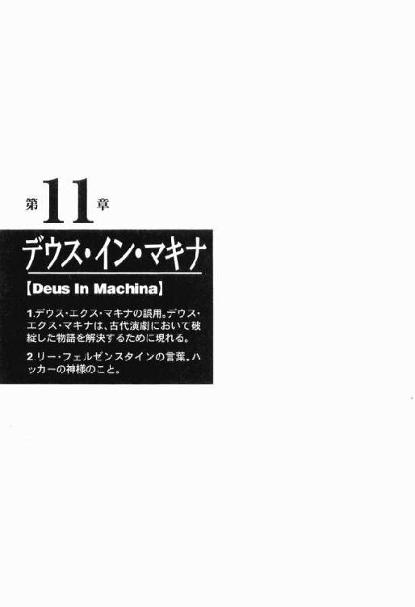
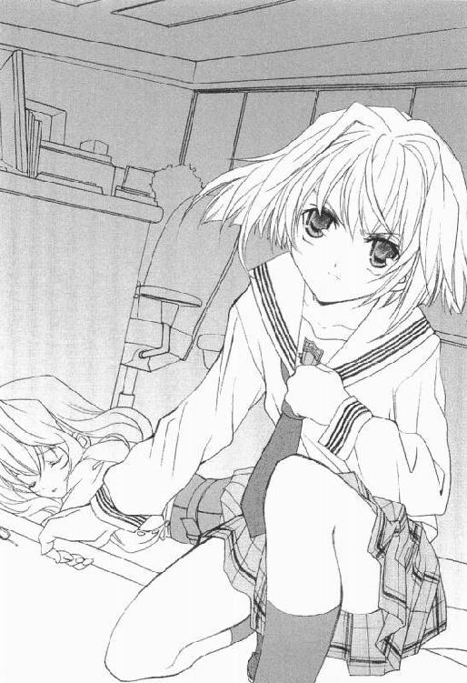
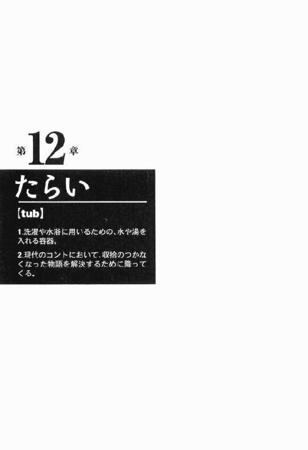

| [桜坂洋] よくわかる現代魔法1 | |
| 桜坂洋 | |
| (2015) | |
|
よくわかる現代魔法
桜坂 洋
|
よくわかる現代魔法
CONTENTS
１．code
２．assembler
３．wizard
４．layer
５．daemon
６．virus
７．bug
８．programming language
９．dump list
10．Christmas shoppers
11．Dues In Machina
12．tub
あとがき
激動の現代、文明開化の波に乗り遅れた者は新世紀を生きる資格がないと言われています。蒸気機関、エレキテル、電信電話、新しい波が日々我々に襲いかかってきます。
でもだいじょうぶ。いまこそ、魔法が役立つときです。
本校では、本物の魔法使いを養成しています。
三千年の歴史を持つ魔術結社の流れを本校は汲んでいます。テキストはバインダー方式を採用し、むずかしい概念も、誰にでもわかるよう簡単に説明しています。面倒な入会儀式は必要ありません。誰でも手軽に、魔法の真髄を修得できます。
なんとなく自分に自信がもてないあなた。
自分を変えたいと思っているあなた。
老音男女を問わず、いつでも、お気軽にお立ちよりください！
第１章
コード
[code]
１．コンピューターで、命令諭令や情報の入出力に用いる記号。
２．異世界の力をこの世にもたらす記号体系。
古めかしい飾り文字で、紙面中央に大きく書いてあった。右上にはホウキにまたがった魔女の絵が描いてあり、左上にはこれまた古めかしい洋館のモノクロ写真が印刷されている。
銀座の大通りを歩く人の群れにまぎれながら、森下こよみは、手に持った一枚の紙きれをじいっと見つめていた。
一週間ほど前、押し入れを整理していて出てきたものだ。誰がそんなところにしまったのか、真っ茶色に変色したわら半紙の中に、一枚だけ新しい紙がまじっていた。うかつにさわったら指を切ってしまいそうなくらいぴんぴんの紙だった。それが、この案内状である。
はっきり言って、こよみも、あやしいと思う。
電話番号が書いてなかったり歴史が三千年だったりテキストがバインダー方式だったりするところが、ものすごくうさんくさい。
でも、もしかしたら本当かもしれない。文面のとおり、本当の魔法使いを養成している学校なのかもしれない。なんたってゲキドーの現代だ。なにが起こっても不思議ではない。たとえ、それが──
魔法、であっても。
銀座のこのあたりは、日本でも一番地価の高い場所である。こんなところに学校をつくる資金があるなら、入学金目当てのサギはしない気がするし......。
てとてとと足を進めながら、こよみは、銀座三丁目のせまい空を見あげた。
夕方の光に包まれて、ばか高いビルの群れがそびえたっていた。窓ガラスに反射した陽射しが、道往く入の背をオレンジ色に染めている。師走の街を往き交う人々の姿はちょっぴりくすんでいて、気の早いジングルベルとどことなくそぐわない。制服姿のこよみも街の風景に溶けこんでいるとは言えないけれど。
肌を刺す風がスカートの裾をかけ抜けていった。
むぎゅ。
「おっと」
「......痛たたた」
「なんだい、嬢ちゃん」
「はなっ、はなっ、すりむいて......」
「鼻が、どうかしたのか？」
信号待ちをしていた男が不思議そうな顔で見おろす。
「え？ あ。なんでもないですっ！ ぶつかってごめんなさいっ！」
深々と頭を下げ、こよみはスカートをひるがえして駆けだした。
ショートボブをふりみだして全力疾走。何度も人にぶつかりそうになりながらこよみは走る。誰も追ってきてないことを確認してから、やっと立ちどまった。
大きく深呼吸。首すじを汗の玉がすべり落ちた。
ものにぶつかったり、なにもないところで転んだりするのがこよみは得意だ。十五になるこの年まで、バンソーコーを持ち歩かなかったことはない。
案内状を見つけだしたのも、もとはといえば、積みあがった本の山に頭からつっこんだのが原因だった。動かない本にどうやったらぶつかることができるのかと、一緒に掃除をしていた母親はけげんな顔をしていた。
運動をつかさどる神経が絶望的に不足しているのだと、こよみは、頭をぶつけるたびに思う。
背がいつまでたっても高くならないのは、小さい頃に頭をこちこちやりすぎたからかもしれない。胸が大きくならないのも、鼻が高くならないのも、くせっ毛なのも眉が太いのも、私服を着ると小学生にまちがわれるのも......。
通りに面したショーウインドウに、制服がまったく似合っていない少女の姿が映りこんでいた。
身長は百四十六センチ。靴のサイズは二十・五センチ。スリーサイズは考えると悲しくなるので秘密。太っているわけではないけれど丈がないのでスリムに見えないし、来年は高校二年になるというのにいつまでたってもお姉さんから借りた制服を着ている小学生に見えるというのも問題だ。
薄暗いガラスの中にいる自分の像に、こよみは、いーっと顔をしかめてみせた。
ビルとビルの隙間を、黒い猫が一匹、悠然と通りすぎていく。
気をとりなおして、ほこりのにおいのする案内状を見なおしてみる。案内状に書かれた大雑把な地図は、周囲の地形と似ているようでもあり似ていないようでもある。
「このへんなんだけどなあ」
しばらくさまよったのち、こよみは、一軒の洋館の前にたどりついた。
＊
巨大なビルに挟まれて、二階建ての洋館が建っていた。築百年は経ってるんじゃないかという古ぼけた館だった。
建物のまわりは、そこだけ湿った風が吹いていた。館の前にそびえる鉄柵の門がごとごとと重苦しい音をたてている。煉瓦造りの壁にはびっしりと蔦がからみつき、ご丁寧にも、空にはカラスなんか飛んでいたりする。
いやあな雰囲気だった。
ひとことで表現すれば、はやくとり壊してビルを建てたいのに工事に来た業者が次々と謎の呪いにかかってしまうのでしかたなく放置してある幽霊屋敷、のかんじだ。
つばを飲みこんで、こよみは、案内状をもう一度よく見なおした。
しかし、何度たしかめても、案内状の住所は変わらない。目の前の洋館が、目指す魔法学校のようである。
幽霊とかなめくじとか、こよみは足のないものが苦手だ。目が怖いから死んだ魚も苦手。あと、いもむしも苦手。これは足がいっぱいあるから。
「うん。きょうは場所がわかっただけでよし！」
胸の前で力強くこぶしを握りしめ、こよみは颯爽と振り返る。
そこに、学生服の男が立っていた。
「なんの場所がわかったんだって？」
つまさきから頭のてっぺんまでじろりとこよみを睨めつけ、青年は低い声を出した。
「ご、ごめんなさい」
「はあ？」
「いえ。あの......すみません」
背の高い男だった。
身長百四十六センチのこよみと比べると、頭ひとつぶん以上違う。たぶん、百八十センチ台の後半にのっている。
スポーツバッグを脇にかかえた青年は、高い位置にある顔につまらなそうな表情をへばりつかせていた。整った顔立ちのわりにそれほど美形に見えないのは、眉と眉のあいだに深いたてじわがあるせいだ。動物が主人公のアニメだったら、まちがいなくひねくれものの一匹狼として登場するタイプだった。
突然丸まったダンゴムシをつつくときの顔で、青年は言った。
「なんであやまるんだ？ おい」
「あ、はい。そうでした。こんにちは」
ぺこりと頭を下げる。
「あんた、誰？」
「森下こよみです。あなたもここに習いにきたんですか？」
「こんな......とこでなにを習うんだ」
「ここ、魔法学校じゃないんですか」
「学校？ ここが？」
学生服の青年は、わきを向いてなにごとかをつぶやいた。小さな声なのでよく聞こえなかったけれど、いかれてやがる、とか言ったようだった。
こよみは青年を見あげた。
「あの、でも、魔法の学校だってこれに書いてありますし......」
「マホーマホーって、あんたさあ」
青年はばりばりと髪をかきむしった。
「銀座まで来るのになに使ってきた？」
「なにって、電車、です」
「電車はなんで動いてる？」
「電気......だと思いますけど」
「電気はどうやってつくる？」
「火力とか水力とか、さいきんだと原子力も使ってるはずかな、とか......」
「そのとおり」
青年は大きな声をだした。
長い背中をきゅうくつそうに曲げてこよみの顔をのぞきこみ、ちっちっちっと指を振ってみせる。
「電車は電気で動いている。自動車は化学燃料を燃やして走っているし、原子力潜水艦はウランを核分裂させて動いている。念仏を唱えて動いてる自動車も、魔法陣の力で動いてる潜水艦もねえんだ。それなのに、魔法だと？」
「あの、でも、げきどうの現代で......いまこそ魔法がやくだつときだって。年齢にかんけいなく誰でも習えるって......」
「習ってどうすんだ？ んなことおぼえるヒマがあるなら、家帰って勉強しろ。バカバカしい」
吐き捨てるように言う。
こよみは、青年の顔をできるだけ力強く、でも目は合わせないで、見返した。
「ば、ばかばかしいってことはないと思います」
「バカバカしいで悪けりゃ、アホくさいでどうだ」
「人がまじめに話してるのに、ばかとかあほとかひどいんじゃないですか」
「まじめにやっただけで魔法が使えんなら、いまごろ世界は魔法使いだらけだろうが」
「あたしはそんなこと言ってるんじゃありません」
「だったらおれの前でスプーンでも曲げてみろ」
「ス、スプーンなんて関係ないです！」
ふたりが不毛な論争に突入しようとしたちょうどそのとき、屋敷の扉が重々しい音をたてて開いた。百年ぶりの獲物に舌なめずりをする人喰い屋敷が出したみたいな音だった。
こよみは、こわごわと音の源を振り返る。
青年が、世界にある苦悩の五十パーセント近くを背負わされた顔で肩をすくめる。
両開きの大きな扉を片方だけ押しあけて、ひとりの女性が立っていた。
背の高い女だった。
女は、素肌にコットンシャツを一枚だけはおっていた。しわくちゃになったシャツの裾からにゅっととび出ている太腿がとても寒そうだ。こよみの胸元くらいまである脚は、黒のミュールをつっかけている他にはなにも身につけていなかった。
背筋がぞっとするくらい整った容貌の持ち主だ。鎖がついたアンティーク風のメガネがマネキンみたいな顔をおおっている。豊かな胸のふくらみの真ん中には、光を反射しない漆黒の物体がぶらさがっていて、それは、三角定規を使って線を引いたような完璧な正方形の首飾りだった。
天然色あふれる世界の中で、女が立っているところだけがモノトーンに見えた。まるで、神さまがこの女性をつくったときだけ色をつけ忘れて、墨一色で描いたみたいだった。
ミュールをぞりぞりいわせながら、女は、こよみと青年にむかって歩いてくる。足を一歩踏みだすたび、腰まであるストレートの黒髪がゆるやかな弧を描く。夕暮れどきの光を浴びたシャツ越しに、くびれた腰のラインがうっすらと透けて見えた。
鉄柵の内側までくると、女は、なんだか眠そうな口調で言った。
「一応、世間体があるから、痴話ゲンカは家の中でやるように。聡史郎」
「そんなんじゃねえ」
聡史郎と呼ばれた青年は、ぶっきらぼうな口調で答えた。
「めずらしく友達を連れてきたと思えば、いきなり別れ話とは......姉さん悲しいわ」
「日が沈む頃になって起きだしてきて、なにぬかしやがる」
「天国の父さん母さんになんと言ったらいいか......」
「親父まで勝手に殺すな。それにこんなヘンな女、おれの知りあいのはずねえだろ」
「あたし、変な女じゃありません！」
「ふたりとも照れなくていいのよ」
「照れてんじゃねえの。お客さんだよ。姉さんにな」
「え、わたしに？」
両手を握り合わせ彼方を見つめていたわざとらしいポーズを解き、聡史郎の姉らしい女性は、メガネの奥の目を見開いた。
「このお嬢さんが？」
聡史郎がうなずく。
女は、こよみの顔をまじまじと見つめた。
こよみは、伏し目がちに女の顔を見返す。ふたりを隔てる鉄柵が、思いだしたかのごとくぎしぎしときしみ音をたてた。
「こ、こんにちは......」
「どこから聞いてきたか知らないけど、わたしの料金高いわよ。学生諸君の平均的こづかい収入だと、安く見積っても三百か月分くらいになっちゃうんじゃないかな」
「そんなに月謝、高いんですか？」
「月謝？」
「姉さん。こいつ、ここを学校かなんかと勘違いしてるんだ」
蔦の絡まる門柱に背をもたれかけさせ、聡史郎は言った。なんとも嫌味ったらしい口調だった。
「学校......じゃ、ないんですか？」
こよみは、おずおずと案内状をさしだす。
夕日の色に染まった紙を女は鉄柵越しに受けとった。銀の鎖のついたメガネをはずし、もとから細い目をさらに細めて、案内状を日の光に透かす。
真新しい紙の内側に、血管のような網目が走っているのが見てとれた。
「これは......たぶんひいお祖父さんのコードね」
「こーど？ って......なんですか？」
「紙の透かしに呪文が組んであるのよ。すごいわねえ。明治時代に印刷されたものなのに、これだけ時間がたってもまだ腐蝕してないわ」
こよみは思いだした。そういえば、一緒に束になっていたわら半紙は、さわるとくずれてしまいそうなくらいぼろぼろになっていたのだった。
「よくわからないんですけど、こーどっていうのは、ひょっとして魔法の素みたいなものなんですか？」
「てっとりばやく言えばそうなるわね」
「でもでも、明治って大正の前ですよね。平成の前の昭和の前の大正の前の......」
「そう。百年以上昔の話」
「そんなむかしに......バインダー方式なんですか？」
案内状をこよみに返し、女はいたずらっぽい表情を浮かべる。
「まさか。明治時代にバインダーはないわよ。あなたの目がそう読んでるだけ。実際はもっと古い文章で書いてあるの」
「それも、魔法？」
「大昔のね」
「じゃあ。もう学校。やってないんですか？」
「魔法学校だったのは、たしか大正時代までのはずよ。建物は同じだけど、いまはただの住居。ここに書いてある新世紀って二十世紀のことだもの」
「そう......ですか」
「だから言ったろ。世の中は魔法じゃなくて科学で動いてるって」
「よしなさい。聡史郎」
「姉さんがいないとき、いかれた連中の相手してるの誰だと思ってんだよ」
「人の商売の相手つかまえていかれた連中ってことはないでしょうがいかれた連中ってことは。ぷんぷん」
黒髪の女性は腰に手をあて怒ってみせる。胸のふくらみが、薄手のシャツを押しあげてふたつの丘を形づくった。
「擬音を口で言うな。それと、そういう格好で庭をうろつくなといつも言ってるだろうが」
「このシャツのどこが悪いのよ」
「シャツしか着てねえのが悪いんだよっ」
「パンツだってはいてるわよお」
言いながら、むきだしの太腿をぽりぽりと指でかく。
「そんなのあたりまえだろうに！ だいたい、この御時世に魔法なんて言ってるやつのどこが正常なのか。この怪しさ大バクハツの文面はなんだ。サギ師の常套句じゃねえか。わが先祖ながら情けなくて涙が出るぜ」
「ええっ！ そうなんですか？」
調子はずれなこよみの声に、聡史郎は顔に手をあて天を仰いだ。
黒髪の女性が、こらえきれずにぷっと吹きだす。
「な、なんか......おかしいこと言いましたか？」
「いいから、もう帰れよ。魔法の学校じゃねえことはわかったろ」
「女の子をいじめないの」
「いじめてねえ」
「どう見たっていじめてるわよ」
「こういうのは日本語で説教って言うんだ。いじめじゃねえんだよ」
「あの......えっと、ご迷惑かけてすみませんでした」
できるだけちいさな声で、こよみはふたりのやりとりに割りこんだ。
「あら、もういいの？ ついでだから寄っていけばいいのに」
「引きとめんなよ」
「わざわざ女の子を引きとめてあげる姉さんの姉弟愛があなたにはわかんないのねえ。ま、いいわ。いいものを見せてあげるからふたりともちょっと待ってらっしゃい」
一方的に言うと、黒髪の女性は、シャツをひらひらとなびかせながら洋館の中へ戻っていった。こよみと青年はふたりきりで取り残されてしまった。
門柱に背をあずけたまま動かない聡史郎を、こよみは、こわごわとのぞきこんでみる。とてもとても怖い顔をしている。親切心から拾った空の財布をわざわざ交番に届けてあげたら持ち主が中身を盗んだと騒ぎだしやがったこんちくしょう、みたいな仏頂面だった。
「あの......ごめんなさい」
「なんであやまるんだ？」
「ええと、でもでも」
「悪くないならあやまるな。あやまったからってなにかが解決するわけじゃねえ」
「ごめ......はい」
「そんな態度だから怪しげなチラシに騙されたりするんだ。マトモに考えたら魔法なんかあるわけないだろうに」
「あるもん。きっと。たぶん」
「すこしは疑うってことを知ったほうがいいぞ。世の中善人ばかりじゃな──」
「じゃーん！」
聡史郎の言葉を遮るように黒髪の女性が姿を現した。さすがにシャツ一枚では寒かったのか漆黒のコートを羽織っていたが、ミュールを履いただけの脚が裾からとびでているのは変わっていないので、深夜のあやしい番組に出てくるあやしい女みたいな格好になっていた。
「だから姉さん、擬音を口で言・う・な」
「いちいち絡むわねえ。あんまり神経質だと長生きできないわよ」
ぶちぶちつぶやきながら、女は、抱えていた物体を地面に下ろす。体脂肪計測機能のついたヘルスメーターだ。他にも、黒っぽい木の棒を手に持っていた。
「さて、お嬢さん。突然だけど、裸足になってヘルスメーターの上に立ってくれるかしら？」
「え......あたし？ あの、でも......はだし、ですか？」
黒髪の女性はにっこりとうなずいた。
聡史郎が顔をしかめる。
「嫌ならやんなくていいそ。姉さんにつきあうとロクなことにならないからな」
「聡史郎は黙ってなさいよお」
「実の姉がいたいけな中学生引きずりこんでイキナリ脱げとか言ってんのに、黙ってられるか」
「ちゅ、中学生じゃないです！ あたし、高校一年生です！」
「嘘だろ。おまえ、高校生？」
「そうですよう」
「ほらほら。あなた、魔法を見に来たんでしょ。出血大サービスで見せてあげるから、脱いだ脱いだ」
黒髪の女性は、とまどうこよみの肩を押さえ、くるりと回転させた。もはや聡史郎は口をはさむ気も失せたらしく、葬儀に参列する神父みたいな表情でじっと立っている。
「心の準備が、まだなんですけど......」
「早くしないとコードのタイミングを逃しちゃうのよ。説明はあとでしてあげるから」
「......はい」
もぞもぞと靴と靴下を脱ぐ。こよみは、石畳の上に鎮座するヘルスメーターに素足を乗せた。
十二月の空気にさらされた金属のひんやりとした感触がつま先を刺激する。体中の温度が足の裏から吸いとられていくかんじだ。液晶の表示板は、三十九キログラムの体重を受けても文字を浮かびあがらせなかった。
「なんか肌がぴりぴりするんですけど......」
「あら、わかる？ それがコードなんだけど」
「コード......って、魔法。ですよね？」
「そうよお」
ヘルスメーターの上でおっかなびっくりバランスをとっているこよみの前に、女は一本の棒を差しだした。六十センチくらいの黒塗りの棒だった。光を反射しない材質で覆われているのか、夕方の光に輪郭がとけこんで見える。
こわごわさわると、ほのかに温かく、硬質な手触りだった。
「まほうの杖......ですか？」
「ただの木の棒よ。コードは棒じゃなくて足元に組んであるの」
「この石畳の下に巨大な魔法陣があったりするんですか？」
「ないない。そんなのないわ。コードはヘルスメーターの中にある基板を流れているのよ。むかしはコンピューターとかなかったからコードの転写もひと苦労だったらしいけど、いまは便利なものがたくさんあるから」
女の言葉はわけがわからなかった。
森下こよみは魔法の学校を探しに来たはずで、ほこりの匂いのする案内状にはホウキにまたがった魔女の姿が描いてあって、いまはゲキドーの現代で、百年以上前から建っている洋館はいかにも魔法っぽい雰囲気を発散させていて......なのに、こよみは、ＪＩＳマークがしっかりと刻まれたヘルスメーターの上に裸足で乗っていたりする。
てのひらの中で、黒塗りの棒はなま温かく固い感触を主張していた。電気が走るとか、光を発する気配はなかった。なんだかとんでもないことになってしまった気がするけれど、魔法の学校を探しにきて魔法を使えるというのだから断わるというのも失礼なかんじがする。こよみは、黒い棒をぎゅっとにぎりしめた。
「これは、セント・エルモのコードといって非導電体を発光させる魔法なの。うまく行けば、あなたが持ってる木の棒が光りだすはずよ」
「ペテンだね」
「聡史郎は口を出さないの！」
「け」
「あの、そんなこと言われても、あ、あたし、わかんないです」
「ヘルスメーターを流れる電流と人間の筋肉を流れる弱電流。コードという観点から見ればふたつは同じものよ。基板のコードは九十九パーセントできあがっているから、あなたは点火装置の役をすればいいわ」
「え？ え？ あたし、てんかそうち？」
「だいじょうぶよ。古典魔法で一番簡単なコードですもの」
「どんな呪文を唱えればいいんですか？」
「決まった呪文なんてないわ。アレは精神を集中させるきっかけみたいなものだもの。あなたの方法は、あなた自身が見つけるしかないの。まずは、緊張をほぐすことね」
「お姉さんはどうやってるんですか？」
「え、わたし？」
「そそ、そうです」
女は思案顔をした。
「そうねえ。素数を遅延評価で求めたりしてるわね」
「へ？」
「整数列［2..］を sieve(n:ns)=n:sieve[m|m<-ns,m'rem'n/=0] でエラトステネスのふるいに──」
「あ、わかりました。もういいです。はい。いいです」
腕をばたばたとふりまわし、こよみは女の言葉をさえぎった。数学の呪文は魔法の呪文よりよほどたちが悪い。素数のことなんかを考えていたら、かえってこよみは緊張してしまう。
そういえば、小さい頃テレビで見たアメリカン・コメディーの魔法使いは、くちびるの端を動かしたり、鼻をひねったりして魔法を使っていたっけ......。
「魔法が完成した瞬間、形をもったコードが体を流れるはずよ。神経を研ぎすまして、それを感じとりなさい」
こよみは目を閉じた。
手の中にある棒に全神経を集中。頭の中をさまざまな情報がかけ抜けていく。
棒の固さ。ぬるめの温度。ひたいを撫でる前髪の感触。スカートの裾を駆け抜けていく師走の風。下着の裏側を這いずり落ちていく汗の粒。解けなかった数学の小テスト。お昼に食べたタコさんウインナー......ああっ、なんだか妄想があらぬ方向に向かっている！
ふたたび精神を集中させるため深呼吸しようとしたとき、洋館のてっぺんでカラスが鳴き声をあげた。
かあ。
「えっ？」
こよみは目を開いて上空を見やる。
体に緊張が走る。
右足から駆けあがった電流が体を走り抜け、左足へすっととびだしていった。冷たさと熱さがカフェオレ状態になったさざなみが体の奥で湧き起こり、数瞬で消える。いくつもの風船が胃の中で同時に破裂したような感覚だ。
こよみは息をのんだ。
そして、それが突然現れた。
門柱に背をあずけていた聡史郎の頭上一メートル。なにもないはずの空間に煙とともにそれは姿をあらわし、重力にしたがって落下をはじめた。
はじめはゆっくりと。その後一気に加速して。
たらいだ。
見たこともないくらい大きな金だらいだった。色・形ともにもうしぶんない一品である。これで洗濯しろと言われたら、すこし悲しくなるかもしれない。
赤銅色の輝きをはなつ金だらいは、正確に等加速度運動をし、聡史郎の頭を直撃する。
があん、と派手な音がした。
頭のてっぺんにたらいをくらった不幸な青年が、いっしゅん体を硬直させる。そのまましばらく頭の上に乗っていたたらいは、ゆるやかに傾き、ずりずりと体にそって落ちていった。
きっかり三秒のあいだ、聡史郎は、地面に落ちたたらいを見つめた。
「これは......いったい、どういういやがらせなんだ？」
言いながら、ゆっくりと頭をさする。
「たらい......だと思いますけど」
「だからなんでたらいなんだ」
こよみは、なさけない目で女に助けを求める。
腕を広げ、女はお手あげのポーズをとってみせた。
「聡史郎......あなたもつくづく運が悪いわね」
「すみません」
「いいのよ。気にしなくて。魔法に失敗はつきものだから。ケガしてない？」
「はい。だいじょうぶです」
「おれはどうなるんだ？」
「あなたはいいのよ」
「本当にごめんなさい！」
こよみは勢いよく頭を下げた。
「セント・エルモのコードでたらいは出ないはずなんだけど、おかしいわねえ」
ひとさし指を黒髪にからめ、女は小首をかしげる。
夕方の光を受け、金だらいはぴかぴかと赤銅色の光をまきちらしている。こよみが握りしめている木の棒は、光を発する気配すらない。空気のぴりぴり感もなくなっている。ヘルスメーターのコードは、いまのたらいですっかり消えさってしまった。
冬の陽射しが長い影をつくる庭になんともいえぬ沈黙がとどこおった。
「いかれてやがる」
聡史郎がぼそりとつぶやいた。
このときばかりは、こよみも、彼の意見に賛成してもいいかなと思った。
＊
次の日も、やっぱり、森下こよみは銀座の街をてとてとと歩いていた。
特に目的があるわけではないというか、あることはあるのだけれど明確にはなっていないというか、名目上は、脱いだ靴下と引き換えに持って帰ってしまった黒い棒を持ち主に返すことなのだけれど、黒髪のお姉さんはただの木の棒だと言っていたしそれだけのことでまた迷惑をかけるのもなんだかなあという気がする。
昨日。光の魔法を失敗したあと、いつまでも言い争いをつづけていそうなふたりに頭を下げて、こよみは、逃げるように家に帰ってしまったのだった。たらいをぶつけてしまった聡史郎の顔はとても怖かったし......。
だけれど、魔法と呼ばれる得体の知れない力がこの世に存在するのはどうやら本当のことらしかった。できればその技を身につけられたらいいなあとか、隠れた才能が突然開花して天才魔法少女と呼ばれたりしたら気持ちいいだろうなあとかこよみは考えたりする。なんの取り柄もないしなにもないところで転んだりするし背は低いし顔の造作は十人並で頭の中身もたいしたことはない。神さまはずいぶん不公平だといままで思っていたけれど、もしかしたら、ふつうの人には見えない部分にこっそり才能を授けてくれていたのかもしれない。
ちょっとうきうき。
そんなことを妄想しながら、こよみは、怪しげな洋館へとつづく道を元気よく進み、鉄製の門の前へとやってきた。
銀座の裏通りに面する洋館は、昨日と同じく幽霊屋敷のたたずまいを見せていた。館のてっぺんにはカラスが群れをなし、ビルの影になってほとんど陽の射さない庭園では得体の知れない植物群がすくすくと育っている。
そのときだった。
ずるびたん。
威勢のいい音とともに、黄色い物体が天高く舞いあがった。こよみの足の真下だ。
その物体は、複雑な変形をしながら秒速五メートルで宙を駆けぬけ、空気抵抗と重力の影響によりゆるやかな曲線を描いてアスファルトに接触する。
ぺしゃ。
落ちたときは、ずいぶんなさけない音だった。
端正な眉間にたてじわをつくり、聡史郎は、目の前に落ちたバナナの皮をつまみあげた。
「シューティングスタープレスの練習なら、マットの上でやったほうがいいそ」
「ふええん」
アスファルトにべたっと座りこんだ姿勢のまま、森下こよみは、じめじめした瞳で聡史郎を見あげた。擦りむいて赤くなったてのひらで、なぜか水色のエプロンをつけている宿敵背高男をびしっと指さし、口の中でもごもごと宣戦布告する。
「他人の不幸を笑うとじごくに落ちるって、むかしおじいさんが言った」
「笑ってねえよ」
「ぜったい笑った。にやって笑った！」
「十七年生きてきて、バナナの皮で転んだやつをはじめて見たんだ。むしろ驚いたね」
わざとらしく肩をすくめたりする。
「なによう」
「新人芸人のコントだっていまどきバナナはねえだろ」
人間に許された最低限度の尊厳を主張しつつ、こよみは立ちあがった。
「いじわる。へらず口」
「けっこうだ。それでいかれた連中の相手をしなくてすむなら、へらず口の学校に通いたいくらいだね」
「そんな学校ありませんよだ」
「魔法学校もねえけどな」
「うう......あなたがあのお姉さんの弟だなんて信じられない」
「おれもたまに自分の血を疑いたくなる。ところで、なんだそれは？」
「きのうめいわくかけちゃったし......転んじゃったけど、たぶんケーキはだいじょぶだと思う」
半開きになった鉄の門越しにケーキの箱をさしだす。ここに来る前、数寄屋橋交差点のビルにあるケーキ屋でチーズケーキを買ってきたのだった。
「それでボディープレスだったか」
「へ？」
「まあいいさ。姉さんに用事なら今日はいないぞ」
「......そうだよね。ゲキドーの現代だもん。魔法使いもいろいろといそがしいんだよね」
聡史郎はこめかみを指で押さえた。
「おまえ、なにか致命的な勘違いをしてるだろ。姉さんの仕事は魔法使いなんかじゃないそ」
「ええ！ そうなの？」
「魔法使いなんて職業が存在するわけないだろ。姉さんはＳＥだ。コンピューターのプログラムを書くのが仕事だよ。昨日みたいないかれたことも。たまに趣味でやってるみたいだけどな」
「そうなんだ......」
「身内のおれが言うのもなんだがな。高校生にもなって初対面の女狐にころっと騙されてどうすんだよ」
「だまされてなんか、ないもん。ちゃんと、たらい、出たもん」
「百歩譲ってなにもないところからたらいが出現したとしてだ。おまえはそれをどうするつもりなんだ？マジックショーでもやんのか？」
「それはそうだけど......」
こよみはうつむいた。
エプロンをつけた聡史郎は気まずそうに腕を組んだ。
「姉さんに用事があるなら聞いといてやるよ。なんだ？」
「ううん。いいの」
「なんだよ。用事があるから来たんだろ」
「ケーキを渡しに来ただけだからいいの」
ちいさな体がせいぜい大きく見えるよう肩肘を張ってみせる。
「おい、ちょっと待てって」
「......迷惑かけてごめんなさい」
こよみはきびすを返した。
案内状は、昨日印刷されたみたいにきれいだった。
赤銅色に輝くたらいは、なにもない空間から姿を現した。
どちらも普通ではあり得ないことだ。それらが魔法によってもたらされたというのなら、不思議な力は本当に存在するのだと思う。スプーンを曲げるとかカードを透視するとかそういうどうでもいい力ではない。本物の魔法である。宿敵背高男がなんと言おうと、いまや、こよみは確信している。
運動神経がよい人間は、なにもないところで転んだり突然電柱にぶつかったりしたときの暗鬱たる気持ちがわからない。擦りむいた傷が癒えるまでじんじんと伝えてくる痛みも。ドジなどと呼ばれるとほんのちょっぴり悲しくなることも。もし魔法があるのならば、森下こよみこそ、それが必要な人物だ。
でも。
魔法の扉は、こよみが生まれるはるか以前に、どうやら閉じてしまったようだった。
駅に着くまで、こよみは、三回転んだ。
第２章
アセンブラ
[assembler]
人間かかろうじて理解できるもっとも原始的なプロクラムを、コンピューター用のコードに変換するプロクラム。
臨海副都心にあるビルディング。
女性用トイレの床。
.........二十七。二十八。二十九。這いつくばった姿勢のまま、堀江は三十の数を数える。
周囲を薄闇がとりまいている。窓から射しこむ月光が唯一の光源だ。アンモニアと塩素の臭いが鼻腔を攻撃する。空気はすこし、澱んでいる。
金属の配管内をちょろちょろと水が流れる音が聞こえた。自分の鼓動と、窓の外で大気が渦巻く音──不規則な音は聞こえない。
人が動きまわる気配が遥か遠いことを確認すると、堀江はペンライトのスイッチを入れた。収束されたビームが闇を切り裂き、壁のタイルを照らしだす。暗闇に慣れた瞳孔がきゅっと萎む。窓についているクレッセント錠をしっかりとかけなおして、堀江は屋内の探索に向かう。
暗い廊下を慣れた足どりで進む。足音はたてない。軍手をはめた手でゆっくりドアノブをひねり、引き開ける。
オフィスルームだ。
廓下と同じ暗闇が広大な空間を支配していた。積みあがった書類の物陰や机の下の暗がりで、緑色のＬＥＤがちかちかと点滅している。トイレと同じく室内の空気は停滞していた。このビルは、午後九時を過ぎると空調を強制的に切るのだった。
堀江は、オフィスを専門に狙う泥棒だった。
堀江が盗むのは情報だ。ハイテク犯罪が騒がれ、不正アクセス対策は進んでいるが、由緒正しい泥棒に対する対策は今も昔もすこしも変わっていない。深夜、人気のなくなったビルに忍びこみ、警備システムをごまかし、警備員の目を盗む。どれほど複雑なパスワードも、どれほど堅牢なファイヤーウォールも、情報が記録されているハードディスクをマシンから直接引っこ抜いてしまえば関係ないのだ。一般には公開されていないプログラムソースや、管理の厳しい顧客リスト、その気になれば二重帳簿だって盗みだせる。
有明にあるこのコンピューター関連会社に忍びこんだのは、あるプログラムの非公開ソースを盗みだすためだった。
依頼主がなぜ情報を欲しがるのか、掘江は考えない。かつて盗んだ電子機械を売っていたのと同じように、いまは盗んだ情報を売る。それだけのことだった。
持ってきたノートＰＣを手近なハブに繋ぎ、掘江は社内ネットワークを閲覧する。
ものの五分でくさいデータを見つけだした。
デジタル時計を確認。警備員が定期巡回をするまで、ほんのすこしだけ余裕がある。
ネットワークグループから推測するとマシンは別の剖屋に設置してあるようだ。ハードディスクをマシンから引き抜いて直接情報を読みだすため、堀江はふたたび廊下へ忍び出た。
北に向いた窓から淡い光が射しこんでいた。暗がりを選んで堀江は進む。
その歩みに合わせるように、革靴が軽やかに床を蹴りつける音が遠くから聞こえてきた。巡回の時間がずれたのだ。人間はきまぐれを起こす。毎回かならず同じタイミングでミスをする機械と違って......。
歩調は早かった。つまり、足音の主は、三人いる警備員のうち、一番若く、一番体力があって、一番感覚が鋭敏な男だということである。侵入したトイレに戻る余裕はなかった。
必要なのはもっと手近なドアだ。
目の前にあった。
堀江はとびついた。
ノブに手をかけた瞬間、堀江の腕を嫌な感覚が走り抜けた。指の先から腕を通って肩・首・口・舌先に抜けるちいさな衝撃だ。長年の仕事で身につけた、言葉では説明できない特別の警報装置だった。
プログラマーには、昼ではなく夜に活動する人間がいる。繁忙期には不夜城になるのがコンピューター関連会社というものだ。普段から夜をメインにする人間がいてもおかしくはない。
足音が階段を昇りはじめた。クソったれ！ この階に向かっている。ぎりぎり人がすり抜けれるだけ開けたドアの隙間から、堀江は室内にすべりこんだ。
明かりを落とした部屋の中で、ひとつだけ、二十一インチのモニターが光を発していた。机の前には誰もいないようだった。モニター画面に大きな円形の目玉がふたつ表示され、ときおりまばたきしながらきょろきょろと周囲を見回している。
あれはおそらくスクリーンセーバーだろう。あのコンピューターはしばらく操作されていない可能性が高い。コンピューターの使用者はどこに行ったのか。あるいは部屋のどこかにひそんでいるのか......。
足音が近づいてくる。
遮蔽物のないドアの前にいる危険とコンピューターの前に人がいる危険をはかりにかけ、堀江は後者をとった。肺にたまった重苦しい二酸化炭素を音をたてずに吐きだし、デスクを幽鬼のようにまわりこむ。
そして、舌打ちをした。
通路に、男がひとり倒れていた。
滲むような画面の光に照らされて、その男は、頭を床につけてうずくまっていた。股のあいだから背後をのぞき見ている途中に首がつって動けなくなった体勢だ。あるいは、椅子から転げおちてそのままなのか。
動く気配は感じられない。
堀江はそろそろとあとずさる。
さいわい男は侵入者に気づいていない。気づくことができない、と言ったほうが正確かもしれない。さきほどから男はぴくりとも動かない。男の呼吸音が危険なほど浅く不規則であることが、すぐれた泥棒である堀江の耳にはわかった。
見ず知らずの男がどうなろうと知ったことではなかった。堀江の仕事は泥棒で、深夜のオフイスで泡を吹いて倒れている人間を助けることではない。迷う必要すらない。やるべきことはただひとつ、デスクがつくりだす暗がりに融けこむことだ。データを盗むのはまたの機会にすればいい。
閉じたドアに向かって、かつかつという足音がスタッカートで接近する。
そのまま通り過ぎ。
止まった。
ドアの隙間にまばゆい光のラインが走った。
あせっていたため、しっかりと閉じていなかったのだ。失態だった。足音の主は通り過ぎた廊下を逆行し、堀江が潜む都屋のドアノブに手をかける。スチール製の扉が軋む音が暗闇に響きわたった。
つづいて、ペンライトの十倍強力な光が室内を照らしだした。書き殴りのメモ、清涼飲料水についてくるオマケのフィギュア、キャラメル風味ポップコーンの容器、デスクの陰からわずかにとび出ている堀江の靴先をも青い光は剥きだしにして照らしだす。堀江は息をひそめた。
「そこにいることはわかっているのですわ」
女の声だった。
掘江は驚いた。警備員に女はいないはずだった。
廊下を近づいてきた足音と同じ歩調で声の主はドアをくぐり抜け、無造作に近づいてくる。
誰何の声が堀江に向けられたものか倒れている男に向けられたものかは判断がつかなかった。女は、物陰に隠れている泥棒に気づいているかもしれないし気づいていないかもしれない。
盗みにポリシーを持つ堀江は武器を持っていない。腕力にも自信はない。だが、女なら、あるいは──。いざというときに備え堀江はプロレスラーのマスクをかぶっている。唸りをあげて喉にせりあがってきた心臓を飲みくだし、身体に力を溜める。女の歩みは止まらない。手でさわれそうな密度の光が堀江の脚を這いあがってくる。
勢いよく立ちあがった。
「動くな！」
「蜘蛛紡ぐ檻となれ我がコード！」
堀江と女は同時に叫んだ。
そのとき感じた違和感が女の言葉の奇妙さによるものだったかあるいは別のなにかだったかは説明できない。ただ、なにかがあった。青い光の中で、女はまっすぐ堀江を見つめていた。
人間の成長段階に少女と女とババアがあるとするなら、いまだ少女の域を脱していない女性だ。発育はいいが高校生かそこらだろう。けれども、丸みを帯びた輪郭に宿る瞳は、場数を踏んだ泥棒を一瞬たじろがせるほどの凄みを放っているのだった。
掘江は気づく。
妖しく光る双眸が紫色であることに。灯りに照らされた女の髪が、黒ではなく銀の流線であることに。それは、女が口にした蜘蛛の糸を連想させた。
堀江は手を伸ばそうとし──伸ばせなかった。
一瞬のあいだになにをされたのか、立ちあがった姿勢のまま、指先ひとつ動かすことができない。掘江という演者の糸を断ち切り、彼の肉体は茫然と立ちつくしているのだった。
「ただでさえやっかいな状況ですのに、これ以上問題を複雑にしてもらっては困りますの」
女は言った。
堀江は声が出ない。
「余計なお世話かもしれませんけれど、窃盗は犯罪ですわよ」
「......」
ふんと鼻をならし、銀髪の女は倒れている男に歩みよる。
「お加減はだいじょうぶですの？」
「ス...パゲッティ......」
男はかぼそい声を出した。
「なんですって？」
「スパゲッティです。なぜ、絡まるか......知ってますか？」
「スパゲッティの考えていることなんて知りませんわ。スパゲッティに聞けばよろしくってよ」
男の顔は夢を見ているようだった。話しかけている相手がこの場にそぐわない少女だと気づいていない。その後ろに、プロレスラーのマスクをした泥棒がいることも。
「......ほどくのは大変でした......でも、わかったんです」
銀髪の女の声が届いているのかいないのか、男はちいさな声でしゃべりつづける。
「箱の中には神さまが......デウス......イン......マキナ......」
それきり男はくずれ落ちた。光に照らされた瞳孔が開ききっていた。銀髪の女は、細い指先を男の首筋にあて脈拍をたしかめ、銀色の眉をかすかにゆがめた。
「これは......困ったことになりましたわね」
唯一自由な眼球を動かし、掘江は暗い天井を仰ぎ見る。
たしかに、これは、とても、困ったことになった。
＊
一週間後──。
ファンが出す低いノイズがハミングを奏でていた。
モスグリーンで統一された室内に、タワー型のごついＰＣが三台。十七インチのモニターが同じく三台。部屋の中にふたりの人間がいるにもかかわらず、三台のコンピューターは、その部屋の主であるかのような存在感を主張していた。
「気温を低く設定しすぎたようだな」
「無問題──ああ、問題ありません」
もうひとりの男がそしらぬ顔で答える。
「空調が冷房に切り換わってる。いまは十二月だぞ？」
「急ごしらえのＰＣなんですよ。オーバークロックでＣＰＵをぶん回していまして。これくらいの温度でないとハングアップします」
がらんとした部屋の片隅で、大型のエアーコンディショナーが冷凍庫みたいな寒風を吐きだしていた。モニターガラスにうっすらとついた霜を指先でぬぐいとり、田所航一は、どぶねずみ色のスーツをしっかりと着なおす。ふたりの男は両者ともスーツを身にまとっているが、もうひとりの男のそれは襟の立ったマオカラーと呼ばれるものだ。田所のスーツよりだいぶ寒さに強そうである。
ひきつっている田所の顔が見えているのかいないのか、モニター画面に顔を向けたまま、もうひとりの男、ゲーリー・ホアンは言葉をつづけた。
「人間は環境に自分を適応させられますが、コンピューターは違います。よって、プライオリティーが人間より高くなります。米軍がエニアックを採用したときからずっと変わっていません」
「皮肉だな」
「使いにくいほど。壊れやすいほど、ツールは便利になるんです。そして、そのぶんだけ高く売れます。鉄則ですよ」
言いながら、ホアンは勢いよくリターンキーを押しこんだ。甲高い電子音が鳴り響き、画面に数字の列が表示される。
「これで終わりです」
オフィスビル内の会議室だった。インバーター付きの明るい蛍光灯が、室内にいる男ふたりを青白く照らしていた。
同じコンピューター産業に従事し、歳も同じ三十代だが、ふたりはまったく違う存在だ。田所は企業勤めのサラリーマン。ホアンは、おのれの腕一本で業界を渡っているプログラマーである。香港から日本の大学に留学に来てそのまま居着いてしまった変わり者で、時にはウィザードと敬称をつけて呼ばれるほど卓越したプログラミング能力の持ち主だった。
一度、なぜいつまでも日本にとどまっているのかと田所は聞いたことがある。彼は笑って、アキハバラはジャパンにしかないからと答えた。ゲーリー・ホアンは、そういうわけのわからないところがある男だった。
光を放つディスプレイに、田所はうさんくさげな視線を浴びせかけた。
「で、このプログラムはなにをしている？」
「呪文を唱えています」
「なんだと？」
「簡単に言えば、足し算や引き算をエクゼキュートしています」
「プログラムはみなそうだ」
ホアンはキーボードの横に置いてあった物体を手にとった。小さなダイスだ。
クリスタル製の六面ダイスが田所にむかって放り投げられた。
「三台のマシンの中心で振ってください」
「なんの意味がある？」
「いいからやってください。そのために三台もマシンを用意したんです」
透明なダイスを、田所は目の高さまで引きあげた。気のきいた雑貨屋ならどこにでも売っていそうな普通の六面ダイスだ。透きとおった内部にこれといって仕掛けがあるようには見えない。
締切が迫っていて金に糸目をつけない仕事。普通のプログラマーでは決められた容量に収めることができないプログラム。ホアンは、特別な事情のある仕事に呼ばれる助っ人である。今回頼んだ仕事は、社内のＳＥが十人単位でとりくんでもなにがどうなっているか判明しなかったプログラムの解析作業だった。
それにダイスがどう関係するのかはよくわからなかったが、ホアンは無駄なことを要求する男ではない。
指定された場所に田所はそっとダイスを落とす。
かたん。と硬い音がした。
出た目は六。
「振ったぞ」
「もう一度」
かたん。
目は六。
「何回かやってください」
田所はダイスを振りつづけた。
出た目は、六・六・六・三・三・二・一・二・三・三・四・四・五・五・六・六。
おかしな目だった。
全体として見れば出る目の確率が崩れているわけではないが、出かたに不自然な偏りがある。数字の並びかたが整いすぎているのだった。
「どう思いますか？」
感情をおさえた静かな声でホアンがささやいた。ダイスを放り投げたときとはうってかわって、真剣な表情だった。
「どういう仕掛けをした」
「なにも。ダイスをとり囲んでいる三台のマシンの中で例のプログラムが動いているだけです。なんなら、他の場所で振ってみて結果を比較してみるといいでしょう。そのダイスは進呈します」
「からかうのはよせ」
「怒らないでくださいよ。わたしだって信じたくありません。ソースを一行一行たんねんに読んでも、おかしなところはひとつもなかったんです。それどころか、不具合ですらない」
「おまえさんはこれが、バグではなくてわざと書かれたルーチンだと言うのか」
「コンピューターの外側をおかしくするプログラムなんて誰も書けません」
「原因はわからないのか？」
「わたしの知っている理屈では説明できないですね。ずいぶんといろいろなプログラムを見てきましたが、これははじめてですよ」
ホアンはひらひらと手を振った。
なんのへんてつもないクリスタルダイス。
シリコン基板の外側にバグを生じさせるプログラム。
常識的に考えればありえない話だった。コンピューターは人間とは違う。まちがった命令を与えられれば、命令がまちがっているぶんだけ正確に誤りを犯すのがデジタル計算機である。予測のつかない現象は起こらない。
「人間の脳に影響があったりはするのか？」
「ずいぶん昔、新聞にそんな記事が載ってましたね。記事を書いた記者は、ウィルスとコンピューターウィルスの区別がつかなかったんでしょうね」
「コンピューターに弱い大新聞のことなどどうでもいい。聞いているのはこのプログラムのことだ」
「どれほど妖しげな計算をするプログラムだとしても、マシンの前に座っているプログラマーを病院送りにはできませんよ。メインプログラマーがひとり失踪したという噂は聞きましたが......仕事、キツイんじゃありませんか？」
「そいつは故郷に酒をつくりに帰ったんだ。関係ない」
「隠してる情報があるなら、わたしにも教えておいたほうがいいと思いますよ。コンピューターウィルスの除去ソフトを売ってる会社が呪いのプログラムを市場にばらまいたってのは穏やかな話じゃありません」
「余計な詮索はなしだ」
田所は顔をしかめた。
「田所さん、『ジョーズ』ってパニック映画を知ってますか？」
「突然なんだ」
「その映画の中の話です。最初にサメが出たとき、主人公のロイ・シャイダーは浜辺を閉鎖しようとするんですけど、ごうつくばりの市長は彼の忠告を聞きいれないんです。結局、観光客がひとりサメに食べられてしまいます」
田所は鼻をならす。
「バカバカしいたとえだ。サメで何人か死んだとして、被害額より儲けが大きいならその市長は正しい選択をしたんだろうさ」
「そう言うんじゃないかと思ってましたよ」
「で、おまえさんはロイ・シャイダーなのか？ホアン」
「わたしはハッカーですから正義のライフセーバーの役は似合いません。あの映画に出てきた中でわたしに一番似ているのは、そうですね......」
ホアンは一瞬だけ思案の表情を浮かべる。
「──ジョーズ、じゃないですかね」
「人間じゃないそ。おまけに敵だ」
「強いて言えばです。あまり深く考えないでください」
かすかな温もりを持ったダイスを、田所は握りしめた。てのひらの皮が、ぎりっと音をたてる。
「デウス・エクス......マキナだ」
「でうすえくすまきな？」
「Deus Ex Machina. ギリシア劇の言葉だ。機械仕掛けの神々という意味で、破綻した物語を解決するために出てくる。警察で聞いたんだ。ウチに忍びこんで捕まったマヌケな泥棒が言っていたと」
説明を聞いたホアンは不満気な顔をした。
「プログラム屋の言葉じゃありませんね」
「なぜだ？」
「プログラマーなら、外側じゃなくて内側と言いますよ」
「それだと意味が通らないが......どちらにせよ世迷い言のたぐいだ。銀の髪をした蜘蛛女がどうとかわめいていたそうだからな」
肩をすくめ、ホアンは天井を見上げた。
「もうひとつ、妙なことがあります」
「なんだ？」
「このプログラムは、レジスタに値を入れて、引っこ抜く。それを千回くり返すと、思いだしたみたいに平均値をとります」
「それがどうした」
「過去千回のランダムな数値の平均のはずなのに、その数字はなぜかどんどん小さくなっているんですよ」
「ゼロになるとなにが起こる？」
「なにも。平均値がゼロになっても、それは平均値がゼロになっただけです。動きだす他のプログラムは存在しません。プログラム以外のモノが動きださないという保証はしませんが」
田所の口からちいさなうなり声がもれた。冷えきった室内の空気と混ざりあった吐息が、白い蒸気に変わる。
「いつだ？ ゼロになるのはいつなんだ」
「概算でいくと、あと二の二十乗秒足らずでゼロになります」
田所は数字を暗算する。日数にして十二日。それが、タイムリミットだった。
その日は──
「なんてこった。クリスマス・イヴじゃないか......」
「聖夜のプレゼントってやつですかね」
「茶化していい問題じゃないそ」
「一週間でわかるのはここまでです。これでもよくやったほうです。これ以上のことが知りたかったら、魔法使いにでも頼むしかありませんよ」
「おまえだって魔法使いだろうが」
「そっちのウィザードじゃありません。本当の魔法使い、ってことです」
「こんなときに冗談を言うな」
「本気で言ってるんですよ。これはプログラム屋の領分じゃありません。超常現象にパッチを当てる方法をわたしは知らないんです」
「呪い師にＣ書言語やアセンブラがわかるわけないだろうに」
「そうでもありません。こういう怪しい仕事を専門に引き受ける人間をひとり知っています。Ｃとアセンブラの腕もまちがいなくウィザード級です。わたしが保証します」
「そんな人間がいるのか？」
「本当にプログラムが原因だったら、一週間もあればなんとかするでしょう。あの人なら。よければ紹介しますけど......どうします？」
のどに詰まった重い塊を飲みこむ。角が生えてようが人肉を喰らおうが得体の知れない魔法を使おうが、とにかくいまは、目の前の問題を解決できる人間が必要だった。
田所は、低い声で聞いた。
「その男の名は？」
「男じゃありません」
ホアンはにやりと笑った。
「アネハラ・ミサ。女です」
第３章
ウィザード
[wizard]
１．プロクラミンクの達人に対する尊称。
２．魔法使い。
髪を赤く染めた少年は、歩きながら画面に目を向けた。
右手のカウンターをクリック。
ワイシャツのそでをまくりあげたサラリーマン風の男は、三秒ほど立ちどまって画面を見ていた。
右手のカウンターをクリック。
楽しげに談笑しているふたり連れの男女は、画面を無視して店の前を通りすぎた。
左手のカウンターを二回クリック。
弱々しげな冬の太陽がつくる影がぼんやりと足元に固まっていた。時刻は午後二時四十五分。場所は秋葉原電気街の表通り。
そのゲームソフトショップは、秋葉原でも大きいほうの店だった。三台の大型ディスプレイが店頭に据えつけてあり、発売を間近にひかえた新製品のデモンストレーションが流れている。合計六台のスピーカーが、ごちゃまぜになった音楽の洪水をまき散らしている。近くにいると、髪の毛の先がぶるぶると震動するのが見えそうである。
女は、そんな店の前で通行人の数をカウントしていた。
瞳と髪は漆黒、灰色のジャケットの上に同じく灰色のコートをはおっている。カウンターを握る手はシャツと遜色ないほど白い。看板とディスプレイパネルであふれる電気街の極彩色を、そこだけモノトーンにしたような女性だ。
名前を、姉原美鎖という。
「因果な商売よねえ」
いじけたように光る太陽に呪いを込めた視線を投げつけ、美鎖は、ひしゃげたガードレールにおしりをあずけた。冬とはいうものの、二十代後半に突入したお年頃の女性は、できることなら外出したくない時間帯だった。
両手のカウンターに視線を落とす。
右手が三千と六十六。
左手が千二百五十四。
カウンターの数字が示しているのは美鎖の前を通りすぎた人の数である。二時間のあいだに合計四千三百二十人の人間がこのゲームソフトショップの前を通過し、そのうちの三千六十六人が、あるゲームソフトのデモ画面に興味を示したということだ。
またひとり、店の前を通りすぎた。
学生服の男。画面はノーチェック。左手のカウンターをクリック。大きくまばたき。目にゴミが入ってしまった。
黙っていてもゲームソフトが売れた時代は、ずいぶん前に終わりを告げた。宣伝を打ち客引きをし、消費者の購買欲をいかに高めるかが、いまはソフトの売りあげに相当な影響をおよぼす。
商品の宣伝は、穴のあいたおたまでスープをすくうのと同じくらい効率が悪い。ソフトそのものに興味を持つのは、ＣＭに興味を持った人間のほんの一部だし、金を出してソフトを買うのはそのさらに一部だ。美鎖が調べているデモンストレーションは約七割の人間の注目を集めているが、経験からいって、七割は喜べる数字ではない。
他のソフトと関心を引く度合いが一緒では困るのだった。
ゲームが趣味であろうとなかろうと、強制的に興味を喚起するコードがあのソフトには組みこんである。魔法のプログラムなどというものを依頼主が信じているかどうかは知らないが、美鎖がプログラムに手を加えれば売り上げが伸びる。だから、法外な報酬を要求するのにもかかわらず、姉原美鎖のもとには仕事の依頼が来る。
御利益がなければ、企業はお守りを買ってくれない。テストプレイヤーの印象も弱いようだったら、製品版はもうすこし強力なコードを組みこむ必要があるかもしれない。
疲労の混じった息を吐きだし、美鎖は、道ゆく人の姿をぼんやりと眺めた。
カチ。カチ。カチ。
タイミングよくカウンターをクリックする。ほどよくぬるんだ空気に、通りを走る車の排気ガスが混じっていた。ガードレールに乗せたおしりが痛みを訴えている。
カチ。カチ。カチ。カチ。
あくびをひとつ。
カチ。
ぴぴぴぴ。
まばらな人影を切り裂く電子音に、美鎖は目をしばたたかせる。耳障りな音は、二十メートルほど離れたソフトショップから聞こえていた。
入口に立っているのは、どこかで見たことのある顔だった。くせっ毛と太めの眉。けして高くない鼻。バストの存在感はどこまでも薄く、ピンク色のバンソーコーを貼ったひざ小僧が痛々しい。
でも、そういう少女が、十年もたつとびっくりするくらいの美女になることを美鎖は知っている。
「もう一度ここを通り抜けていただけますか？」
「あの、ええとええと......」
ぴぴぴぴぴぴ。
防犯ベルは鳴りやまない。
「ＬＡＮケーブルやマザーボードの類をお持ちではありませんか」
「っていうか、らんけーぶる......ってなんですか？」
「ちょっと奥まで来ていただけないでしょうか」
出入口に設置してある防犯ゲートにひっかかり、少女は警備員につかまっているようだった。小さい背で相手をほけっと見上げ、必死になってちぐはぐな答えを返している。
ありていにいって、とろい部類に入る少女だった。この子の親は毎日心配でしようがないに違いない。美鎖もむかしはとろい女の子だった。片親を早くに亡くしたせいで、こんなにたくましくなってしまったけれど。
カウンターをバッグに投げこみ、姉原美鎖は勢いよく立ちあがった。
＊
突然鳴りはじめた受信音にびっくりして、森下こよみは学生カバンを落としてしまった。いままで話していた警備のおじさんが、あっけにとられた顔でこよみを見つめている。
「あの、あの......すみません」
ぺこっと頭を下げてカバンを拾いあげる。中をのぞきこむと、液晶ディスプレイがほのかなライトグリーンの光を放っていた。
「あれ......あれれ？」
「電話ですよ？」
不思議そうな顔でおじさんが言った。
「あ、はい。そうですね。はい」
こよみはケータイをとりだした。
たくさん並んでいるボタンの中から、適当に選んでえいやっと押してみる。いつもは三回くらいでディスプレイの表示が「通話中」に変わるのだけれど、あいにく今週の牡羊座は運が悪いらしい。何回ボタンを押しても電話が繋がらなかった。
ボタンがたくさんついている機械がこよみは苦手である。
一つや二つならいい。三つもまだ許してあげよう。四つ並んでいるとだんだん操作が怪しくなってくる。十個になるともうお手あげだ。どれを押せばいいのか考えるだけで頭が混乱してしまう。だから、せっかく両親に買ってもらったケータイも普段はスイッチを入れていない。きょうも切っておいたはずなのに、なにかのはずみで電源が入ってしまったのかもしれない。だいたい、このケータイというやつは、なんの前触れもなく鳴りだしたりするのだ。心臓に悪いことこの上ない。さっきは荷物を落としただけで済んだからよかったけれど......。
「その緑色のボタンじゃないですか」
「そうなんですか？ どうもすみません」
ボタンを押す。電話が繋がった。
「もしもし......お母さん？」
「わたしはまだそんな歳じゃないわよお」
電話の向こう側の人が多少間延びした口調で応えた。どうやら女性らしい。
「ええと......ど、どちらさまでしょうか？」
「いやあねえ。忘れちゃったの？」
「え？」
「お待たせ」
その声は、電話の中とこよみの目の前、両方から聞こえてきた。突然現れた女性に、こよみはふたたび学生カバンを落としてしまう。
ものすごくきれいな髪の女性だった。午後のやわらかい陽射しに照らされて、シャンプーのＣＭに出られそうな黒髪がきらきらと輝いている。
「え？ え？」
「ごめんね。長いこと待たせちゃって。ほら、カバン持ってもう一回通ってみなさいな」
黒髪の女性は、こよみの胸にカバンを押しつけ、くるりと回転させて防犯ゲートをくぐらせる。
......。
さっきまで何度通ってもうるさくわめきたてていた電子音が今度は鳴らなかった。
「装置のメインテナンスくらいしっかりやらなきゃだめよお」
警備員の帽子をひとさし指でちょんとはじくと、女は、こよみの腕を脇にかかえてずんずんと歩きだした。警備員はあっけにとられた顔でふたりを見つめている。
「あ、あのう。あたしいま電話中なんですけど......」
「その電話の相手がわ・た・し」
「でもでも。あたしの電話番号......」
必死でしぼりだした声に、女はウインクを返してよこす。
女の周囲は、スパイスとも香水とも違う、なんとも表現しにくい香りがただよっていた。ほどよくぬるい陽の光とあわさって、すうっと気が遠くなりそうだ。引っ張られている右腕が、たぶん標準より大きいであろう胸にむにゅっとあたっていたりする。女の歩調に合わせてちょこちょこと歩きながら、自分にもこれだけ胸があったらいいなあ、とか、そんなことをこよみは考える。
「危機一髪だったわね」
銀縁のメガネ越しに、黒髪の女性は目を細めた。どうやら微笑したようだ。
こよみは、女の顔をじいっと見つめた。
「どうしたの？」
黒髪。鎖つきのメガネ。
マネキンみたいに整った顔。
胸には漆黒のアミュレット。
語尾を引きのばす眠そうな口調。
嫌になるくらい長い脚と、女にしては高い背たけ。
どこかで会ったことがある。ぼうっとしていた頭がようやく正常に回転をはじめた。きょうはちゃんとした服を着ているけれど、一週間ほど前に押しかけていった洋館で会った女性にまちがいなかった。
「わたしの顔になにかついてる？」
「はい。いいえ。じゃなくって、そのせつは......どうもありがとうございました」
歩きながらぺこり。
「事情は聞かないけど、防犯ゲートなんかにひっかかっちゃだめよお」
「ち、違うんです！」
「いいのよ。否定しなくても。わたしは気にしないから」
「そうじゃなくって！ あの、あたし、そういう体質なんです。むかしからよく引っかかるんです。あの、ぴーっていうの」
「そうなの。めずらしい体質ね」
「いつもは気をつけて近寄らないようにしてるんですけど、あさって発売の新譜があって......秋葉原は学校のかえり道なんです。まだ店頭にならんでないからじかんつぶしてて......」
「ずいぶん熱心なファンなのね。ダウンロードサービスの開始前にわざわざ買いに来るなんて」
「ともだちにたのまれたんです。その......かえり道だし......」
女はくすす、と笑い声をあげた。同性だというのに、背筋を指先でなでられるような笑いかただった。
「おねえさんもなにか買いにきたんですか？」
「仕事よ。し・ご・と。わたしが書いたコードがちゃんと動いてるかたしかめに来たの。あれなんだけどね。知ってる？」
腕を伸ばし、女はゲームソフトショップの前にある大型ディスプレイを指さした。
画面の中では、３Ｄポリゴン製のドラゴンがポリゴンの鎧をつけた騎士と戦っていた。騎士の背後できれいなテクスチャーを貼りつけた軍旗がはためき、そのまた後ろに黒々とした雲が渦巻いている。
たしか百万本以上売ったという有名なゲームソフトだ。やったことはないけれどタイトルだけは知っている。こんど続編が発売されるとかで、そこかしこでデモが流れているのだ。通りを歩いていただけのこよみの頭の中にも、映像がこびりついてしまっているかんじだった。
「こーど......って、たしか魔法のことですよね？」
「そうよお」
「ゲームソフトと魔法と、どういう関係があるんですか？」
「あれに販売促進の魔法をかけるのがわたしの仕事なの。デモを見た人間が商品を買いたくなるようにするのよ」
「え？ 本当......ですか？」
「大きな会社なら程度の差こそあれどこでもやってるわよ。アメリカじゃあ、商務省に専門の研究チームがあるって噂だし。世間の表側には出てこないけどね」
「はじめて知りました」
「でなけりゃあんなものが百万本も売れるわけないじゃない」
人の悪そうな笑みを浮かべて、女はこよみの顔をのぞきこむ。
「ソフト産業は基盤が脆弱だから、大金かけたソフトは絶対売れてくれないと会社が傾いちゃうのよ。だから、ワラにもすがる思いでわたしのとこに来るわけ」
「百万本のソフトにどうやって魔法をかけるんです？」
「かけるのはひとつだけ。正確には、魔法をかけたものを必要な数だけコピーするの」
「魔法ってコピーできるんですか？」
「魔法をコピーするわけじゃないわ。コード。すなわち呪文をコピーするの。コンピューター用の魔法の巻き物を大量につくるようなものね」
「こんぴゅーたーが......魔法？」
なんだかイメージが湧かなかった。
魔法の巻き物と言えば、おとぎ話の魔法使いがちちんぷいぷいと読むものだ。コンピューターが巻き物を読んでいる姿はちっとも想像できない。
「魔法っていったって、結局のところは複雑なプログラムにすぎないのよ。やりかたが正しければ効果はかならず出る。なら、人間だけじゃなくてコンピューターにできても不思議じゃないでしょ」
「え？ え？ 魔法が......ぷろぐらむ？」
「機械をペットにする時代よお。魔法を機械が使ってもおかしくないわよ」
こよみは、口をあけて、女の顔を見つめた。
ここには、ホウキに乗って空を飛ぶ魔女もいなければ、とんがり帽子をかぶった老魔法使いもいない。ぐつぐつ煮たった大釜も、干からびたイモリのビン詰めもない。なんたってここは秋葉原だ。世界で一番魔法と縁の薄そうな街なのである。
「人間と違ってコンピューターは複雑なコードを使えないんだけど、そのかわり同じコードを十万回でも二十万回でも実行できるから、それなりの効果を期待できるのよ......って、聞いてる？」
どて。
「ひててて......あ、ごめんなさい」
こよみは、人にぶつかってしまった。
大きな荷物をかかえた男は、口の中でぶつぶつと文句をつぶやきながら歩み去った。
「あなた、いまぶつかったわね」
「すみません。ちょっと、ぼんやりしてて」
「いったいどうやって？」
ごがごんっ。
いぶかしげに眉をひそめた女のすぐ横で、どでかい音がした。
女はゆっくりと。こよみはそれよりさらにゆっくりと、音がした方向へ顔を向ける。
ふたりと、通行人数人の視点が集中した場所。雑踏の真ん中で鈍色の輝きを発しているのは、大きなおおきな金属の棒だった。片方の端が円環状になり。もう片方はホームベースを切りとったような形をしている。スパナと呼ばれる工具の一種だ。それが、突然、空から降ってきたのだった。
「わ！」
一拍遅れて、こよみは驚いたりする。
「すみませーん！ 大丈夫ですかあ？」
頭上から声がかかった。雑居ビルの窓から首だけつきだした男が、心配そうな顔でこよみたちを見つめていた。
「へ、へいきですう！」
「ぶつかってませんか？」
「だいじょうぶですう。あのあの、ご心配かけてすみませーん！」
こよみの足から五センチばかり離れた場所に灰色のくぼみができていた。衝撃で砕けたアスファルトが、白色の粉になって飛び散っている。
ずしりと重そうなスパナとちいさなローファーを、女は交互に見やった。
「本当に平気？」
「あ、はい。こういうこと、よくありますから」
「よく、ある？」
「たぶん、注意力がさんまんなんだと思うんですけど......ほんとにそそっかしくって」
「ぶつかるのはともかくスパナが降ってくるのと注意力は関係ないと思うけど。防性コードだって動いてるのに......」
「ぼうせいこーど？ 防錆？ 暴政？」
「マーフィーの法則を逆手にとった確率変動のコードなの。お守りみたいなものなんだけど、そういえば、セント・エルモのコードも動作がおかしくなったわよねえ」
「はあ」
女の言葉はちっともわからない。
「ひとつ聞いてもいいかしら」
「いいですけど」
「あなた、なんで魔法を習いたいと思ったの？」
女の視線に気圧され、こよみはうつむいてしまった。両手のひとさし指を胸の前でつんつん合わせたりなんかして。
「あたし、なにもないところで転ぶし、なにをやっても失敗ばかりで......」
口の中で、もごもごと。
「......魔法が使えれば、そういうところもなおるんじゃないかなって......」
「魔法は万能じゃないわよ。できることは限られてる。学校の勉強と同じくおぼえるのはたいへんだし。訓練には長い時間がかかるわ」
「そうなんですか。ごめんなさい」
女は、真剣なまなざしでこよみを見つめた。
「本当に魔法を習いたい？」
「そう......だったんですけど」
「そんなに早くあきらめると、人生損するわよ」
「え？」
「わたしでよければ教えてあげるわ。魔法。案内状をつくったひいお祖父さんほどの腕はないけどね」
「あ、でも......あたし、そんなにおこづかいもらってないし、バイトとかしてないし......高いんですよね？」
「お金なんかとらないわよ。やあねえ」
「本当ですか？」
「高いって言ったのはプログラミングの仕事のほう。儲けてるところからたんまりいただいてるから、学生諸君からむしりとったりしないわ」
「あたし、ボタンが三個以上ついてる機械って苦手なんですけど、それでもだいじょうぶですか？」
「なに言ってんの。百年前ならいざ知らず、現代魔法にコンピューターは必須よ」
「ひっす、ですか？」
「おぼえるのはたいへんだって言ったでしょ」
こよみはため息をついた。どうやら、魔法の修得には、予想をしていなかった方面での苦労をしなければならないようだった。
「ひとつだけ、いいですか？」
「いいわよ」
「おねえさんの仕事って、その......悪いことじゃないんですよね」
「そうねえ」
女は考える顔をした。
「丑の刻参りって知ってる？」
「あの、五寸釘でワラ人形をコンコンってやつ、ですか」
「そうよ。相手を殺すつもりで呪いをかける日本伝統の術。でも、あれはやっても無罪なのね。たとえ相手が死んじゃったとしても」
「そうなんですか？」
「髪の毛入れたワラ人形に釘打つだけで、人が死んだら大変じゃない。あんなの効果ないわよ」
「......はあ」
「原因と結果に明確な関係が認められないかぎり、違法行為にはならないの。魔法は社会的に認知されてないから。丑の刻参りと同じ。つまりなにをやってもＯＫなわけ。おわかり？」
言いながら、こよみのあごを女はつるんと撫であげた。胸元から首筋にむかってかけ抜けた感触に背筋が硬直する。
「ま、それほど強力なコードは組んでないし。心配しなくてもだいじょうぶよ」
「強力なコードを組んだらどうなるんです？」
「千円札を一万円で売ってみせるわ」
千円札を一万円で売ることができるなら、目の前の人間に魔法をかけるのだって可能なはずだ。チラシにつられてのこのこ銀座まで出かけてしまうこよみはさぞかし簡単にひっかかることだろう。
「どうする？ きょうの再会はただの偶然だけど、あなたの選択によっては偶然を運命にできるわよ」
女は、静かな声で言った。
銀色のメガネに隠された漆黒の瞳。深い瞳。アミュレットと同じ色の瞳。午後の陽光を背に受け、髪の輸郭がハレーションを起こしていた。周囲をとりまく人の姿が灰色の影に見える。灰色の影の中に、墨一色で描かれた女性が立っている。
瞬きもしない瞳がこよみを見つめていた。
おもいきり、息を吸いこむ。
「......」
「......」
「やります！」
「そう」
にっこりほほえんで、女は手をさしだした。ものすごく白い手だった。
「姉原美鎖よ。よろしく」
「も、森下こよみです」
おずおずと手をにぎり返す。
ひんやりとした感触が腕をかけのぼり、肩の関節のあたりで電気のスパークを散らした。生きている人間の手をさわっているとは思えないほど、やわらかくて冷たい感覚だった。
三百か月ぶんのこづかいがかかるという美鎖の仕事代金がいくらなのか是非聞いてみたかったけれど、こよみは、やめておくことにした。
第４章
レイヤー[layer]
１．画像処理で、重ね合わせに用いる仮想的なシート。
２．互いに重なり合い、ときに交わる異世界のこと。
魔法とは、この世に異世界の法則を持ちこむ方法のことである。
この世ができあがったとき、物理法則も定まった。だが、それは唯一無二のものではなく、すぐそばには違う物理法則の成立する異世界が存在する。ある種の信号を継続してつくりだすことによって他の世界との敷居を脆くし、異なる物理法則を一時的にこの世界に成立させることが可能だ。
むかし話に出てくる魔法使いが呪文を使うのは、おもに精神を高揚させるためである。韻を踏み抑揚のついた言葉を歌いあげることにより、魔法使いは肉体を興奮させ、ある一定の電気信号が筋肉組織の中を流れやすいようにする。
魔法使いの肉体を流れる電気信号は、この世にはない特別な構造を仮想的に構築する。それは、異なる世界の法則によって現象の関連性を構簗しなおす作業だともいえる。魔法使いが何度も繰り返すことにより、通常であれば仮想のままである異界の構造が現実世界にプリントされるのだ。
プリントされた異世界の法則は、ものとものの関係性を歪ませ、この世とは異なる法則を成立させる──すなわち、距離や時間の概念を変え、重力を逆転させ気圧を高め、ときには異世界の魔物を呼びだすのである。
人は、その技を魔法と呼び、長いあいだその力を恐れてきた。
だが、十八世紀のイギリスで起きた産業革命が、魔法を無用の長物にした。
機械の力によって生みだされる工業製品の前に、一時間唸ってやっとグラス一杯のワインを召喚する魔法使いは無力だった。工業の発展にともない、効率の悪い魔法は次第に姿を消していったのである。
蒸気機関車に負けて姿を消した、駅馬車のように......。
＊
「遅刻しちゃう。遅刻しちゃう。遅刻しちゃううっ！」
次の日。
ショートポブをふりみだして、森下こよみは、駅から学校への道のりをつっ走っていた。
寝坊したのは夜ふかしが原因だ。魔法を習えることになったうれしさのあまり、夜遅くまで自分でもなんだかわからない謎の特訓をしていたのである。
美鎖の家を訪れた日にこよみが使った魔法は、物品召喚、という魔法の一種だった。距離の概念を変えることにより遠くの場所にあるものを一瞬で手元に引きよせる魔法で、高度かつ複雑なコードを必要とする。
調査の結果、呼び出したのはただのたらいであることがわかったそうだ。なんのへんてつもない金だらい。直径は一メートル二十センチ。深さが二十五センチ。色は赤銅色で材質は銅らしい。マンガに出てくる運動部のマネージャーがユニフォームをごしごし洗う以外に、あまり使い道はなさそうなたらいだった。
どこをどうやってもヘルスメーターに組みこんだコードで発動する魔法ではないと、美鎖は首をひねっていた。
だけれど──。
こよみは思う。
同じコードが実行されれば、同じ魔法がかならず発動する。右足から左足に抜けた電気の感触を再現することができれば、初歩の光の魔法を飛び越えて、召喚魔法をマスターしたことになるのである。
もしかしたら、本当にもしかしたら、なにかのまちがいだとは思うけれどもしかしたら、こよみにはものすごい才能が隠れているのかもしれない。召喚した物体が、よりにもよってたらいというところが格好悪いけれど、神さまもなかなか味なことをやってくれる。
美鎖と別れ、家に帰ってから、体を走り抜けたコードを再現しようとこよみは練習をくり返した。夕ごはんを食べているときも、トイレの中でも、お風呂に入ってもパジャマに着がえてもひたすら精神を統一した。これほど努力したのは生まれてはじめてのことかもしれなかった。
デジタル時計の数字が午前三時を越えたあたりまでは記憶がある。母親が部屋まで起こしにきたとき、こよみは、窓枠によりかかって眠りこんでいたのだった。
それが午前六時五十五分のこと。
急いで制服に着がえ、こよみは家をとびだした。電車に揺られるのももどかしく、入学以来の新記録で道を駆け抜け、いまやっと学校にたどり着いたところだ。
淡いブルーに晴れあがった空に、予鈴が澄んだ音を響かせる。朝の太陽はクリームイエロー色の光を投げかけている。
ぎりぎりセーフ。ついでにいい天気だ。ちょっとだけ湿った朝の空気が心地好い。空にぽっかりと浮かぶクロワッサン型の雲を見あげながら、こよみは正門に駆け込んだ。
そして、そこに人が立っていた。
「そんな──」
ところに立ってるなんてずるい。と言おうとしたのだが、口から出たのはそんな、までだった。
勢いを殺しきれぬままこよみは突入する。
その人物が振りむいた。
朝日を浴びて、彼女の髪はきらきらと銀色に輝いていた。一本一本がまばゆく光る糸だった。スカートのひだからファッション雑誌のモデルみたいに長い脚が伸びていた。大人の女性と呼ぶにははばかられるけれど、少女というかんじでもない。
あわてたそぶりも見せず、光る髪の彼女はわずかに重心をずらす。
ほんのすこしだけ接触してふたりはすれ違った。きらめく髪がこよみの顔を撫であげる。ぴりりとした感触が肌の表面を流れる。シャンプーにしてはきつい香りが体を包みこむ。
そのまま、こよみは校門前のコンクリートへつっこんだ。
なんだか、ふわりとした転びかただった。
こけるのにふわりもくそもないものだとか、ひょっとしたらこれが走馬燈なのかとか、だとしたら打ちどころが悪くて死んじゃうのかなとか、色々なことが頭をよぎった。登校途中に校門の前でこけて死亡というのは、わりと悲しい死にかたのような気がした。
空中で一回転して、こよみはお尻から地面に着地した。それほど衝撃は感じなかった。
もちろん、死んだりもしていない。
遅れて地面に落ちた学生カバンが、どべっと景気の悪い音をたてた。
「あたたた......」
「お立ちなさい。ケガはしていないはずですわ」
背後からかけられた声に、座ったまま首をひねる。
朝日を背景に、銀色の髪の少女が立っていた。
体を包む長い髪がかすかに波うっている。その色は、光を透過する透明な水晶だ。光を浴びて黒髪が輝いていたのではない。アッシュ系とも違う。彼女の髪は、本当に銀色なのだった。
「へろー。ええと......あいむそーりー」
立ちあがりながら、こよみはもごもごとしゃべった。
銀髪の彼女が繊細な眉をつりあげる。紫色の瞳に険悪な光が宿った。
「わたくし、いま、日本語を使ったつもりですけれど」
「ご、ごめんなさい」
「見かけで判断すると本質を見あやまりますわよ」
「色、抜いてるんですか？」
「この髪は生まれつきですわ。あまり他人をじろじろ見るものではなくってよ」
「きれいだなあ、と思って......あの、すみません」
得体のしれない迫力をもった少女だった。どこかの楽園になっている生命のエネルギーの実を十人ぶんくらい集めてぎゅっと濃縮すると目の前にいる少女ができあがるかもしれない。
紫の瞳と、銀の髪と、長い脚と──無闇にでかい胸。なかでも胸の大きさの違いは、森下こよみ最大の弱点を猛烈に攻撃する。外国人だったらあきらめもつくけれど、日本語をしゃべってなおかつ外人モデルのプロポーションをしているというのはなんだかとても理不尽な気がした。それほど歳の差があるようには見えないのに......。
スカートについたほこりを、こよみはぱたぱたと払った。ついでに、スカートを持ちあげてひざ小僧をのぞいてみる。
どこにもケガをした様子ほなかった。
「ケガはしていない、とたしか最初にもうしましたわ」
「ごめんなさい」
「何度もあやまらなくてけっこうです」
「あ、はい」
「よけいなことかもしれないですけれど、角を曲がるときは空を見あげていないほうがよくってよ」
「......はい」
「わかればよろしいですわ」
そう言うと、彼女は校舎に視線を移した。こよみの姿はすでに目に入っていないようだった。
よいしょっと学生カバンを拾いあげる。
「あの......」
「なんですの？」
「あ、いや。すみません、じゃなくて......なにしてるんですか？」
「貴女に言う必要のあることですの？」
「いえ、そういうわけじゃないですけど、うちの制服着てないし......ごめんなさい」
「あやまらなくてけっこう。こーどを見ていましたのよ」
「講堂は......あっちですけど」
正面の左手奥にそびえる建物を指さす。彼女が見ていたのは改築したばかりの校舎だ。ちょうど、視聴覚室があるところだった。
わかるかわからないかぐらいのため息をついたあと、銀髪の彼女は言葉を発した。
「不慣れなものでまちがえたようです。職員室はどちらになるのかしら」
「こっちです」
「ありがとう。それと......」
「なんですか？」
「予鈴が鳴ってから、もうずいぶん時間がたっていてよ」
「やだ。遅刻！」
もう一度すみませんと頭を下げて。こよみは正面玄関に向かって走りだした。
下駄箱に着いてもまだ、銀髪の彼女は改築した校舎を見つめていた。予鈴は気にならないようだった。せっかく教えてあげた職員室にも、興味があるというわけではなさそうだ。
講堂ではなくコードと彼女は言ったのではないかという考えが一瞬頭をよぎったが、こよみはすぐに打ち消した。
この時代に、魔法を習っている人間がそれほどいるはずはなかった。
＊
昼休み。
視聴覚室のモニター画面の前で、こよみはひとりうなり声をあげていた。
森下こよみが通っている白華女子学院は、私立の女子校である。それほど頭はよくならなくていいから、しとやかに育って欲しいと思う親が入れる高校で、校風はおだやかだ。運動系文化系にかかわらず部活動は盛んではない。ちなみに、制服はかわいい。
コンピューターがずらりと並ぶ視聰覚室の利用者はあまり多くなかった。最近ではおばけが出るという噂までたって、生徒の足は遠のくばかりである。最新鋭のコンピューター設備は、使う人間もいないまま、なんだかわからない計算を黙々とつづけている。
なにしろ最新鋭の機械である。一発でインターネットに繋がるボタンなんかついていないのだ。
ただでさえこよみはボタンがたくさんついている機械が苦手なのに、キーボードというやつはひとつにつき百個くらいのキーがついていたりするのである。こよみに対するいやがらせとしか思えない。この部屋にあるキーの総数を想像すると、背筋がぞっとする。
きっと、機械のボタンを増やせ団とかなんとかいう悪の組織が存在して、大企業と結託して使いにくい機械を世の中に蔓延させる陰謀を働かせているのだ。
もしもこよみが総理大臣になったら、みっつ以上ボタンのついているコンピューターをつくったら死刑という法律をつくろう。
うん。いま決めた。
四十台のモニターが整然と並ぶ教室の片隅で、武骨なキーボードとにらめっこをはじめてから、そろそろ一時間が経過しようとしていた。
美鎖の話では、滝に打たれたり瞑想修行をしたからといって、魔法が使えるようになるとは限らないとのことだった。
世の中には、耳を動かせる人もいれば動かせない人もいる。それと同じで、体内の筋肉組織でコードを組むのは、とても難しい技術である。だから魔法は廃れてしまった。
誰でも動かせるコンピューターを使って、魔法発動コードについての理解を深めることが魔法上達の一番の早道だと美鎖は言う。コードがどういうものかわかれば、自然と体が魔法をおぼえるのだそうだ。
「でも、コンピューターが誰でもうごかせるなんて。ぜったい嘘」
ひんやり冷えた机につっぷし、こよみはつぶやいた。
硬質な輝きを放つキーのひとつを、ひとさし指で押してみる。
かち。
ぴろろん。
変な電子音がするだけで、画面にはなんの変化もない。
ちっとも言うことを聞いてくれない、いじわるなモニター画面に、こよみは、あっかんべーをした。
机の上には、今度来るときまで目を通しておくようにと渡された本が置いてあった。タイトルは『よくわかるアセンブラ』となっているが、なにが書いてあるのかさっぱりわからない。ついでに、目の前で光を発している画面の内容もちんぷんかんぷんだった。
コンピューターとの格闘に敗北を認め、そろそろ教室に戻ろうかと考えはじめたとき、教室の扉が静かに開いた。誰か来たようだ。
扉を開いた生徒は、モニターの群れをまわりこんでこよみの横にやってきた。こよみがぼうっとしているうちに、ひとつマシンを隔てた席に腰をおろし、カバンの中身を机の上に並べはじめる。
彼女は、中途半端な長さの髪を頭の後ろでふたつにくくっていた。
同じクラスの委員長、坂崎嘉穂だ。
最後にカバンからとりだしたジュースの缶を四、五回振り、嘉穂はプルトップをぱきょっとあけた。プリンシェイクと書いてある。なにか見てはいけないものを見てしまった気がして、こよみはあわてて目をそらした。
得体の知れない飲み物だかプリンだかをひと口飲むと、本のページをめくるのと同じような気軽さで嘉穂はキーボードを叩きはじめた。かたかたかた、という音とともに、画面にものすごいスピードで文字が表示されていく。
彼女はたしか、数学とか物理とかが得意な生徒だった。クラス委員をやっているのだから、他の科目もこよみよりは上かもしれない。一年の最初の委員長は、入学時の成績順で選ぶそうなので。それほど運動が得意なようには見えないが、こよみと違って、頭の中に収まっている知識だけで世間を渡っていけそうな雰囲気がある。
「......こんにちは」
こよみの言葉に嘉穂はかすかにうなずき、そのままキーを打ちつづけた。
かたかたと軽い音が連続する。
席を立とうと思っていたところだけれど、なんだか立ちづらくなってしまった。いま教室に帰ったら嘉穂が来たから帰るみたいだ。あまり親しく話したことはないけれど、仲が悪いわけでもない。
こよみは、頬杖をついて、図面をのぞきこんだ。
かち。
ぴろろん。
かち。
ぴろろん。
キーボードは、机や椅子や黒板と同じように、固く冷たかった。こよみはひとさし指でしかキーを打つことができない。こよみの前のキーボードは、いつまでたっても室内と同じ温度のまま、変わらない。
魔法をおぼえるのも大変である。こんぴゅーたーをさくっとマスターして、魔法をバカにした背高男をあっと言わせてやろうと考えていたのだけれど、なかなかどうして一筋縄ではいかない。このぶんだと彼を見返すのはずいぶん先のことになりそうだ。
お姉さんは親切でやさしいのに、弟はどうして嫌味ったらしいのかとこよみは思う。親切心をもたらす遺伝子が丸ごと全部姉のほうにかたよってしまったのだろうか。ちょっとばかり顔が整っていてちょっとばかりサワヤカっぽくてちょっとばかり背が高いからって、上から人を見下ろしたりなんかして。どうせどうせあたしはちんちくりんですよーだ。
むかつく！
どん！
ちいさく握りしめたこぶしで机を一撃。
たたいてしまったあと、自分がたてた音に驚いて、左右を見回す。
坂崎嘉穂が首を曲げてこちらを見ていた。ひとえまぶたに隠された瞳が、こよみの前にあるモニター画面を凝視している。
「あわ......たた......な、なに、かな」
「さっきから思ってたんだけど。ログイン、しないの？」
嘉穂は、聞こえるか聞こえないかぎりぎりの声でささやいた。
「ろぐいんって、なに？」
きょとんとした顔でこよみは聞き返す。
ひたいに手をあて、嘉穂はひとしきり考えこんだ。
「なんか変なこと言っちゃったのかな......」
嘉穂は動かない。
「ええと。あたしなにも知らなくて、ボタン押してもぜんぜん動かないし、さっきから困っちゃってて。あの......ごめんなさい」
「......森下、生年月日は？」
「え？ あ、三月二十九日だけど」
こよみからキーボードをひったくり、嘉穂は指がかすむ速さでキーを叩いた。それまでずっと変化しなかった画面が、ぱっと切り替わる。
モニター上部についたスピーカーから、派手なデジタルサウンドが流れ出た。
「うそ」
「上の段の四角にローマ字で名前。下の段の四角に生年月日。これを入れないとマシンは動かない」
「そう、なの？」
「授業でやった」
「きかいは苦手なの」
「それはなに？」
嘉穂は、第一ページめを開いたままの本を指さした。
「よくわかるアセンブラ、という本なのだけど......ちっともよくわからなくて」
「オブジェクト全盛の時代にアセンブラはないと思われ」
「う、うん」
彼女のしゃべった単語は、さっぱり理解できない。
そのときだった。
ちゅいん。
小さな音をたてて、嘉穂の前に置いてあったプリンシェイクの缶がはじけとんだ。
瞬間の出来事だ。
破片を目で追うことはできなかった。
スチール製のボディーがななめにすっぱりと切れている。手がハサミになった透明怪人が指先ではじいたみたいに缶の上から三分の一が宙を飛んだのだ。鋭利な刃物を使って瞬間的に切り裂いた切り口だった。中に詰まっている得体の知れない液体だか固体だかがぷるぷると揺れていた。
嘉穂は、断面に指を伸ばそうとしている。
「あ、あぶない......よ？」
「......！」
ドライアイスに触れたように嘉穂は指をひっこめた。中指の先端が切れていた。血の色をした雫が盛りあがり、関節のラインにそってゆるゆると一本の曲線を描いてゆく。
「たた、たいへん！」
「森下、おおげさ」
「でも血がでてるよ！」
「これくらいじゃ死なないと思われ」
「だめだよう」
子犬のプリントがついたハンカチをとりだし、こよみは嘉穏の指をそっと包んだ。なめらかな生地に赤い液体がじわっと広がる。ポケットからバンソーコーをとり出して傷口に巻きつける。痛そうな赤い色が見えなくなり、こよみはほっと息をついた。
「......ハンカチ、ごめん」
「そんなのいいよ。痛くない？」
他人が認識できる限界量だけ、嘉穂はうなずいた。
「委員長も意外にそそっかしいんだね」
「さわってみたかった。むかし、似たようなことがあったから」
「魔法みたいだったよね」
「これは本当の魔法かも。すくなくとも原理がわからないということにおいて」
「魔法のげんりはこーどだよ」
「コードっていうのはプログラム」
「そうとも言うらしいよ」
「話が噛み合ってない気が」
「ごめんなさい。まだ習いはじめたばかりだから違いがよくわからないの。こんぴゅーたーの使いかたもさっぱりだし」
「教本を読むのも悪くないけど、まずは慣れたほうがいいと思われ」
「でもでも、ぜんぜん使いかたわからないし......」
嘉穂はこよみのキーボードを操作した。画面いっぱいに大きな四角形が開き、そのなかに大小色とりどりの文字が表示される。
「あ、きれい」
「操作はマウスで。なにやっても壊れないから御自由に」
「これ、もしかしてインターネットってやつかな？」
「そ」
たいしてめずらしくもないという顔でうなずく。あごから首にかけてのラインに、モニター画面のきらびやかな色が映りこんでいる。
手渡されたマウスのボタンを、こよみはおずおずと押してみた。指に伝わったコキッという感触と同時に、音もなく画面の中身が切り替わる。今度は、学校の航空写真が画面いっぱいに映しだされた。あっという間のできごとだった。
「委員長、すごい」
「べつにすごくない。森下左利き？ 違うんだったらマウスは右手で持つ向きが違うひとさし指と中指でボタンその真ん中のは使わないそれから──」
「なに？」
「委員長っていうな」
「......はい」
ボタンを押すたび画面は次々と切り替わる。
ひょっとして、これも魔法の一種で動いてるのかなと、こよみは思った。
＊
坂崎嘉穂は、なんでも分解するのが好きな子供だった。
親が買ってくれたおもちゃは、まずはじめに継目という継目で解体された。中身を見てほっと安心し、やっと説明書通りの遊びかたをした。
プラスティック製の人形も、魔法少女の変身バトンも、おしゃべりするテディベアも、みな嘉穂はバラバラにした。大工道具箱の中からドライバーを発見してから分解癖はさらに凶悪化し、トースターもめざまし時計もコードレス電話の子機も、ネジのついているものはすべて分解したという。高校生になったいまは分解したものを寸分の違いなく元に戻せるが、その頃の嘉穂はただバラバラにするだけだった。
困った父親が娘に与えたのが、使い古しのデスクトップコンピューターだった。
嘉穂はもともとコンピューターに興味を持っていた。小学校の教室にはネットに繋がっている端末が一台置いてあった。分解したくてしかたなかったのだけれど、裏蓋のネジを外しているのを見つかって以来、担任は嘉穂を近寄らせてくれなかったのである。
金属のネジを回し、マシンをおおうカバーをとり外すと、中には緑色のシリコン基板が詰まっていた。マシンの一番後ろに大きめのファンがひとつ。基盤の中央にある黒い石の上に、小さなちいさなファンがひとつ。それ以外に、動く場所はなかった。
めざまし時計には、ぎざぎざのついた車輪がたくさん入っていたのに、この機械にはひとつも入ってなかった。大きいだけでこの機械は動く部品がほとんどない。これなら、ドライヤーを分解していたほうが楽しい。嘉穂は父親に文句を言った。
坂崎家のドライヤーが完膚なきまで解体されるのに、たいして日数はかからなかった。
その年のクリスマスの夜、嘉穂は不思識な体験をした。
家族そろって車で食事に行った帰り、父親が急に会社から呼びだされたのである。家に戻っている余裕はないそうだ。なんとか問題が発生したとかいう話だったけれど、なんとかの部分が英語だったのでよくわからなかった。
母親は無言で怒っていた。父親はしかめっつらをしていた。だけれど、嘉穂は上機嫌だった。会社に行けば、もっと大きな機械があるかもしれない。その中にはいらないものがあって、バラバラにしてもよいかもしれない。
オフィスの中は真っ暗だった。
事務机がずらりと並んだ空間を、コンピューターの駆動音が静かに支配していた。積みあがった書類の物陰や机の下の暗がりで、ネジのたくさんついたマシンがいくつもいくつも眠っている。嘉穂は、学校の課題図書で小人や馬の国を旅行する物語を読んだことがある。あの作者だったら、この場所を機械のキングダムと紹介するだろう。
ときおり小声で罵りながら、父親はたかたかとキーを叩いていた。母親は廊下の長椅子で紙コップのコーヒーを飲んでいた。嘉穂は、分解しても怒られない機械がどこかにないか机の谷間を探険していた。
父親がトイレに立ったほんのすこしのあいだに、事件は起こった。
誰もいないオフィスで、数十台のモニターが一斉に光りだしたのだ。「クリスマスショッパー」と呼ばれるコンピューターウィルスの仕業だったが、このときの嘉穂はそのことをまだ知らない。
聞きおぼえのある単純なメロディーがいくつかのスピーカーから流れ出ていた。上に妖精みたいな光が飛んでいるようにも見えた。むきだしのてのひらの上を、セーターを脱ぐときのパチパチした感覚が走り抜けた。いままで体験したことのない、奇妙な出来事だった。
時間にして、十数秒。
父親が帰ってくる前に光は消えてしまった。
起きたことを話すと、父親は笑って、コンピューターを目の前で使ってみせた。
大きな手がマウスを動かすと、モニター画面の矢印が動いた。キーを叩くと、画面に文字が映った。ある一定の順番でキーを押すと、画画は複雑に変化した。
人間が機械に与えた命令は、見えない信号となってシリコン基板を駆け抜けるのだ、と父親は言った。電子が疾走する音は聞こえてこない。めざまし時計のようにチクタク音をだしたり、トースターのようにバネが跳ねあがったりもしない。
だけれど、キーを叩くことによって、人は、機械の中がどうなっているかを知ることができる。コンピューターはでかいだけで役に立たない箱ではないのだ。コンピューターを解体するには、ドライヤーやトースターとは違うドライバーが必要だったのである。
嘉穂は見えない機械の中身に夢中になった。
ちょうど、十歳の誕生日をすこし過ぎた頃のことだ。
第５章
[daemon]
１．コンピュータに常駐し、人間の見えないところで管理と監視を行うプログラム。
２．異世界の魔物。
「暗いよう」
「......」
「こわいよう」
「......」
「あたしたち、このままゆくえふめいになって学校に伝わるゆーれい伝説の仲間入りしちゃうかも」
「こんなとこで死ぬのはスペランカーだけだと思われ」
「すぺらんかーって......なに？」
「わからないならわからないでいい」
「そんなこと言わないでよう」
「......」
「嘉穂ちゃあん」
「森下、うるさい」
「ふええん」
校内は暗く静まりかえっていた。
ふたりが歩を進めるたび、上履きのゴム底が廊下のタイルにはりつく音がぺたしぺたしと響きわたる。非常出口を知らせるグリーンライトが、廊下のつきあたりで冷たい光を放っている。空気はすこしだけほこりっぽくて、息をするたび喉の奥に気持ちの悪いいがいがを残していく。
下校時間をだいぶ過ぎた頃。
ふたりは、人気のなくなった校舎に忍びこんだのだった。
コンピューターの使いかたを教えてもらったあと、こよみは、美鎖から教えてもらった魔法の話を嘉穂にした。話半分というか、せいぜい三パーセントくらいしか嘉穂は信じていないみたいだったけれど、なにやら思うところがあるらしく、夜になったら視聴覚室を調べようと言いだした。調査なら明るいうちにしようという意見はあえなく却下。彼女の主張によると、暗くないと調べる意味がないそうだ。明るさとプリンシェイクの缶がまっぷたつになるのとどんな関連があるのかわからないけれど。
こよみはあかりのないところが嫌いだ。あかりがないと、暗いし、暗いし、暗いし、よく転ぶ。おまけに、足のない変なものが突然飛びだしてきたりするかもしれない。夜の学校は、人生ワースト近づきたくない場所の第三位に食いこんでいるくらいなのだ。ちなみに一位が潰れた病院跡で、二位が丑三つ刻の墓地である。
ものすごく気が進まなかったけれど、もしも本当に魔法が関係している事件だったら嘉穂ひとりでは危険な気がしたので、こよみはついてくることにしたのだった。魔法でこよみが役に立つかどうかは別として......。
夜の学校は静寂という文字が似合う。きっと、音を吸って育つ結晶かなんかが学校にはあって、廊下の隅とかロッカーの下とか暗がりの目立たないところに生えているのだ。その結晶が夜に吸った音を吐きだすから、昼間の喧噪があれだけうるさくなる。
でも、ときおり気の早い結晶が、夜なのに音を吐きだしちゃったりして......。
みしし。
「きゃあきゃあ」
「ただの家鳴り」
「やなりって、きゃあ」
闇が支配する校内をしばらく歩いたのち、ふたりは目的の場所にたどりついた。
視聴覚室だった。
「なにか聞こえる」
嘉穂が、ささやき声で言った。
こよみはびくっと体をふるわせる。
「これもやなり？」
「違うと思われ」
「や、やめてよう！」
「おどかしてるわけじゃ。壁のむこう側から、ほら......」
真剣な表情だった。ひとえまぶたを細め、かすかに届く音に聞きいっている。
こよみも耳をすましてみた。
壁をへだてて、ぶんぶんとうなる音が聞こえた。何万匹もの蜜蜂が群れをなして飛んでいるみたいな音だ。耳に聞こえてくるのではなく、体の表面が振動に合わせて震えているかんじがする。
「こんぴゅーたーの音じゃないかな？」
「冷却ファンもハードディスクもあんな音じゃ」
「じゃあ、おばけかな？ おばけかな？ おばけかな？」
「森下、なんかうれしそう」
「そんなことないもん！」
うるうる目で嘉穂を見上げる。
「嘉穂ちゃんは幽霊とかこわくないの？」
「心霊現象は信じてない」
「信じるとか信じないとかのモンダイじゃないと思うな、ゆーれーは」
「誰も納豆を怖いだなんて思わない。経験によって、納豆が襲ってこないことを知っているから。それと同じで夜の学校も」
「それでもこわいもん」
「ドア、開けるよ」
「開けるの？ 開けちゃうの？」
視聴覚室の扉に手がかかった。
こよみは、嘉穂の制服のすそをきつく握りしめる。
スチール製の扉がゆっくりと開いていく。
「な、なにか見える？」
扉に手をかけたまま嘉穂は動きを止めている。脇の下の隙間から、こよみは室内をのぞきこむ。
はじめに視界に入ったのは、ちらちらと揺らめく光だ。
暗い室内で無数の光がまたたいていた。けして明るくはない。暖かさもない。夜空の星の輝きよりずっとはかなげで、実物を見たことはないけれど蛍がいたらこんな風に見えるだろうと思える光だった。
そんな光の粒が、人のいない室内いっぱいに広がって、点いたり消えたりをくりかえしている。
「どっどっどっ......」
「森下、これはドッキリなんかじゃ」
「そんなこと言ってないもん！」
嘉穂は無造作に教室の中へ進んだ。
「ちょ、ちょっと、あぶないよ！」
「平気。たぶん」
「だいじょぶくない！ ぜんぜんない！ だってだって、なんか光ってるし！きれいでも危ないものはたくさんあるし！」
「ここで手を引くって法はない」
「でもでも、なんだかわからないんだよ！」
「それを調べに来た。せっかく目の前でなにかが起きてる。確かめなきゃ、来た意味が」
「それはそうかもしれないけど......」
「夜の学校は襲ってこない。警備員のほうがよっぽどタチが悪い。森下、見張りよろしく」
宙に浮いている光の粒を気にせず、嘉穂は手近なマシンのマウスを動かした。省電力モードになっていたモニターに電源が入り、十七インチの画面が暗い室内にぼんやりとした光を放射しはじめる。
「電気、消えてないの？」
「ここのマシンの電源は切らない。冷蔵庫なんかと同じ。二十四時間動かしっぱなし」
「部屋の電気、つけよっか？」
「積極的につけなくていい」
嘉穂はすごい速度でキーを叩きはじめた。いつもと同じく、画面の内容はさっぱりわからない。
手もちぶさたになったこよみは、入口近くの壁にぴったりと張りついて、廊下の音を気にしつつ浮遊する光を見物することにした。
光の粒は、立ったときの頭の高さから天井までの空間に散らばっていた。ひとつ、ふたつ、みっつ......七十八まで数えて、数をかぞえるのをやめる。とてもかぞえきれる数ではないし、かぞえているあいだにもまばゆくなったり暗くなったりして、全体の数そのものが変化してしまっている。
ポケットを探るとボールペンがあったので、こよみは光の粒をスケッチしてみることにした。紙はないけれど、てのひらに描いてあとでごしごしすればいい。粒の群れを一個のものとして捉えればなにかわかるかもしれないから、目をじいーっと細めてみたりする。
描きあがった。
......。
見えるとおり正確にペンを動かしたつもりだけれど、左のてのひらにはもじゃもじゃっとした曲線があるだけで、具体的ななにかだと判断することはできなかった。しいて言えば赤ん坊が描いたうずまき模様といったところである。森下こよみに絵の才能はないらしい。
おとぎ話に出てくる妖精が本当に存在したら、こんなふうに光って見えるのではないだろうかとこよみは思う。妖精の羽音だと思えば、ぶんぶんとうなる音もあまり気にならないし。不思議な物語の数々を生みだした昔の人も、眼前の光景と同じものを目撃していたのかもしれない。それなのに、こよみは、嘉穂のように調べることもできないし、絵を描くこともできないし、目の前の出来事を美麗な文章で書き記す才能もない。
なんとなく悲しくなった。
空中をただよう光が一粒、ふらふらとただよってくる。それは、他の粒よりもいくぶん暗く見えた。
この粒も本当はさびしかったりするのかな、とこよみは想像する。すこしだけ暗かったり、不器用だったり、速く走れなかったり、なにもしていないのに防犯ゲートに引っかかったり......全体から見ればどうということはない。でも、その一粒には、ちょっとがたいへんな違いなのだ。こよみにはよくわかる。
美鎖が教えてくれた光の魔法を使えば、暗い粒を明るくできるかもしれなかった。もちろんこよみが使ったのは、光の魔法ではなくたらい召喚の魔法なのだけれど、正直なところふたつの違いはよくわからない。あのときは失敗してたらいが出てしまったけれど、今度はまちがえなければいい。こよみは神経を集中する。ヘルスメーターのコードを思いだすのだ。あのコードがあれば、暗い粒も明るくなる。なんにもできない自分だってかならず──。
おそるおそる、指をのばしてみた。
ぴり。
ひとさし指の先っぽに電気に似たものが走った。痛くはない。指の神経に光のエネルギーがちょっぴり流れこんだみたいだ。冷たいのか温かいのかはっきりしない奇妙な感触だった。
こよみが触れた光の粒がキューに突かれたビリヤードボールのように直進する。宙を飛びかう光の群れに突入し、めまぐるしく角度を変えながら教室の中央へ向かう。同時に、宙を飛びかう光の群れが巨大なうずまきを描きはじめた。
「え......え？ あたし？ ちょっと......いまの、なし！なしってば！」
教室中に広まった渦が急速に収束し、ラグビーボール状の歪んだ球を形づくる。
「か、嘉穂ちゃん」
「......」
心なしか、うなりが強くなった気がする。
モニター画面に集中している嘉穂は気づいていない。
「ねえ、嘉穂ちゃんってば！」
「もすこし待てれ」
「そうじゃなくて、うえ！ ヘンな動物みたいなの！」
嘉穂はゆっくりと頭上を見あげる。
光の球体が動いた。
球体は、モニターの周囲を二周と半分旋回した。速い動きだ。移動に合わせて、ラグビーボールの背後に光の粒子が排出され、ふらふらと左右に揺れている。全体を見れば、尻尾のついた動物に見えなくもない。
「これは......違う？」
意味のよくわからない言葉を嘉穂が発するのと同時に、円運動する球体の軌道が変化した。避けられる速度ではない。頭の後ろでゆわえた髪の先端を引きちぎり、ひとつだけ光を放つモニターの上空三センチをかすめて球体は突き進んだ。嘉穂の体がびくりと痙攣した。
「嘉穂ちゃん！」
力を失った頭がキーボードにぶつかる。リリリ、という音とともに、モニター画面に無数の文字が表示される。
天井から五十センチくらいのところで、球体は大きな円を描いていた。獲物を追いつめる肉食獣がぐるぐると動いているようだ。尻尾の部分に、ぐしゃぐしゃとしたうずまき模様があるのを見つけて。こよみは左手にちらりと視線を落とす。ボールペンで描いたはずの模様がきれいさっぱり消えている。渇ききった喉をうるおすためにこよみは唾液を飲みこもうとする。二回失敗して、三回めにやっと成功。うなりはますます強くなっている。
嘉穂に駆けよった。
少女は動かない。制服に包まれた薄い背中が、深呼吸みたいに大きく上下している。
「ねえ、嘉穂ちゃん！ しっかり！」
「心配......な...い」
「よかったあ。だいじょうぶ？」
こよみは涙目だ。
「すこししびれてる。たいしたケガはしてない、と思われ」
「どうしよう」
「それよか森下、アレが動物に見えるわけ？」
「うん。だって......ほら、ほら、キツネみたいに尻尾振ってる！」
「そう来るかよ」
嘉穂は、ちっと舌うちした。
「あたしにはぼんやりとした空気のかたまりしか見えない。森下とあたしじゃ、見えてるものが違うらしい」
「ええ！ そうなの？」
あのキツネモドキがよく見えていないということは、部屋中に散らばっていた光の粒もあまり見えていなかったのかもしれない。だから無造作に室内に入ったのだ。
嘉穂の制服はぎざぎざに破れていた。球体と接触した部分、首筋から背中にかけて二十センチあまり。布と布のあいだから水色のブラジャーが見えている。
「制服......破けちゃってるよ」
「そうみた──」
い！
不意に、嘉穂が腕を引っぱった。
無形の力場が耳の横をかすめる。風のうなりが無数の叫び声となって頭蓋を震わせる。耳の奥がちりちりする。いまさっきまでこよみがいた空間を薙ぎ払ったラグビーボールは、地面すれすれで急カーブを描き、天井近くへと戻った。
蛍光灯が一本、ぱんと音をたてて弾けた。
白いガラスの破片がコンピューターの上に降りそそぐ。
ふたりは顔を見合わせた。
「ここはやばいかも」
嘉穂とこよみは廊下へ飛びだした。
球体は追ってこない。スチール製の扉を勢いよく閉め、扉に背をあずける。
騒々しい音をたてて心臓が脈打っていた。体が熱い。つないだままの嘉穂の手も熱い。冷たい金属の扉が背中に心地好い。
なぜだかわからないけれど、とんでもないことになってしまった気がする。木の棒を発光させる魔法に、服を破いたりジュースの缶をまっぷたつにしたりする力はないと思う。しかも、あの光の球体はものを破壊する力を持っているだけではない。意思を持っているかのごとく動いている。
ガンガンとなにかが扉に当たる音がした。
音がするたび、扉の振動が背骨に伝わってくる。弱いけれど皮膚を刺す電流が金属の扉に流れている。ノックをするように。規則正しく。間断なく。
あの球体のしわざに違いなかった。
「ぶつかってる。ぶつかってる！ どどど、どうしよう壊れちゃうよっ！」
「この扉は金属製。ちょっとやそっとじゃ」
「お、怒らせちゃったのかな？」
「生き物かどうかもわかってないのに怒ったかどうかは」
「でもでも、あと五センチずれてたらたいへんだったよ」
「そう？」
制服は、チェーンソーかなにかでひきちぎったようなかぎざきになっていた。
「髪も切れちゃったし......」
「気にしないでいい。この髪型、それほど気にいってるわけじゃ」
ふるえる指で、嘉穂はこめかみを揉みほぐした。視線は床の一点を見つめている。そして、ひとことひとこと区切って、ゆっくりと言葉を口にした。
「ケモノが相手を攻撃するのは、テリトリーを侵された場合かエサにする場合が多い」
「こわいこと言わないでようっ」
「けれど、攻撃じゃなければ？ ゾウが不用意に人間にじゃれつけば人間は潰れて死んでしまう。遊ぼうとしているゾウと襲いかかってくるライオンの違いは？」
「帰ろうよ、ね？ そうすればだいじょうぶだよきっと」
「学校を出たら追ってこないという保証はどこにも。相手は空を飛んでる。なら、障害物が多い場所のほうが人間に有利」
「なに言ってんのよう」
「悪い、森下。静かにして。もうすこしで頭になにか」
真剣な表情を浮かべた嘉穂の横顔を、こよみはまじまじと見つめた。
彼女の目尻にはほくろがあった。ちいさいのが並んでふたつ。視聴覚室では隣に座っていたのに、まったく気づかなかった。明るい陽射しの中で見えなくて、夜の暗がりで見つけるというのもおかしな話だ。これはたしか泣きぼくろというのだっけ......ふたつでもそう呼ぶのだろうか。
「ねえ、嘉穂ちゃ──」
ガン、とひときわ大きな音がした。
それきり、途切れることなく続いていた扉を叩く音が止む。
ほのかにただよう金属粉のにおい。
こよみはこわごわと視線を上方にずらす。
スチール製の扉に丸い穴があいている。
空中に、光の球体が浮いていた。
制服をへだてて、背中に金属の固い感触がある。人間が蹴ったり殴ったりしたくらいではびくともしない頑丈な扉だ。鋼鉄のドリルをもってきても、この扉に穴をあけるのは相当苦労するに違いない。
「か、嘉穂ちゃん......」
「逃げる」
嘉穂は、こよみの腕をつかんで走りだした。
魔法使いが異世界の魔物を呼びだすとき、それらと意思の疎通ができているわけではない。コードによって無理矢理使役しているだけである。
相手は人知の及ばぬ原理で動くモノだ。呼びだしたそれが、生物かどうかさえもわからない。判明しているのは、どのコードを使えばどのように動くかのみである。
コードの探求は、どこまでもつづくマークシートをひとつずつ丹念に塗り潰していく作業だといえる。三千年に及ぶ超人的な忍耐と数かぎりない失敗を糧に、召喚した異世界の魔物を自在に操るコードを魔法使いたちは見つけだしたのだった。
廊下を走りながら、こよみは、きのう美鎖に教えてもらったことを思いだした。
嘉穂の言葉はたぶん正しいのだ。光の球体は怒っているわけではなく、こよみや嘉穂にはわからない理屈で動いているだけなのだ。だから魔法は怖いのだし、細心の注意を払わねばならないのだと美鎖は言っていた。
壁に反射し、天井に反射し、光の粒を散らして、球体は螺旋軌道を描きながら狭い空間を飛びまわっていた。球体の移動速度は速い。一見ランダムな方向に飛んでいるようでいて、こよみたちを確実に追跡している。
廊下は暗く、冷たい。非常用のグリーンライトが唯一の光源だ。
嘉穂の制服は、背中のかぎざきの他に二か所に切れ目が入っていた。どちらも、球体が急接近してきたとき、こよみをかばってできた切れ目だ。太腿には赤黒いみみず腫れがみにくいラインを残している。
彼女は、無言で、こよみの手をつかんで走りつづけている。遅れそうになるこよみを引っぱって全力疾走している。うなじに汗の粒が光っている。てのひらを通して、どきどきと鼓動の音が伝わってくる。
もうずいぶん長いあいだ走っている気がする。
こよみは、これ以上走ることができなかった。
「もう走れない！」
「あとすこし」
「いつまで逃げればいいのようっ」
てのひらが、ぎゅっと握りしめられた。
「電気まで」
「でんき？」
「コンピューターは電気で動いてる。主電源を切ればコンピューターは止まる。コンピューターが止まれば、それが原因で動いてるなんだかわからないものも止まるかも。だから、いま、あたしたちは学校の配電盤に向かっている」
「あの光の球って、コンピューターが原因で動いてるの？」
「可能性は高いと思われ」
「警備のおじさんに見つかったら怒られないかな？」
「森下、余裕ありすぎ」
「よゆうなんてないようっ！」
「着いた！」
校務室にすべりこんだ嘉穂はぴしゃりと扉を閉めた。手さぐりで照明のスイッチをさがす。押す。あかりが点く。校務室は無人だ。
間髪を入れず、扉に球体がぶつかる鈍い音が響いた。
「か、嘉穂ちゃん！」
「電源を切る。もちこたえて」
「ちょっと！ そんな！ ちょっと！」
校務室は白華女学院で一番古い建物にあった。視聴覚室と違って扉は木製だ。何十年も前につくられた木の扉は、指で押しただけでぎしぎしと音がする。スチールの一枚板に穴を空けるバケモノがぶつかって、こんな扉がもちこたえられるはずがない。
ごつん。
球体が扉に当たる音がした。
魔法を使うことができれば、きっといまにも崩れそうな扉でも鋼鉄の硬さにできるのだ。でも、こよみはコードを知らない。せめてたらいを召喚したコードを思いだそうと必死になるが、まったく集中できなかった。こよみは力いっぱい扉をささえる。
鉄のボックスをこじあけ、嘉穂は片っぱしからスイッチを切っていく。
最後の一列で、部屋の照明が消えた。
「全部切った」
「じゃあ。これで──」
ごつん。
暗闇に、鈍い音が響いた。
古いふるい木製の扉の隙間からちりちりと光の粒子が漏れる。
「どうして！」
ごつん。
扉が震える。木の屑が飛び散る。こよみはしゃがみこんだ。
闇の中で、嘉穂はふたたびこよみのてのひらを握った。その手はあたたかく、ぬめりを帯びている。
「悪い。あたしもあせってたらしい」
「え？」
「視聴覚室のマシンには無停電装置がついてる。電源を切っても、十五分は止まらない」
「十五分！」
ごつん。
扉に親指大の穴があいた。
「逃げよう！ ここなら窓から外に出れるよ」
「なら、森下だけ」
「なに言ってんのようっ！」
「一回止まったらもう動けなくなった。あたしの足、わりとヤバいらしい」
声が弱々しかった。
てのひらに、さっき握りしめられたときの感触がよみがえった。嘉穂の手はぬるりとしていた。汗とは違う粘度をもった液体、あたたかい液体がそこには流れていた。暗いせいで、液体の色はわからない。
ごつん。
頭上から木の破片がばらばらと降ってくる。穴は確実に大きくなっている。
「森下、神さまって信じる？」
「と、とつぜんなに？」
「あたし信じてないから。お祈りするならまかせようと」
「そんなこと言わないでようっ！」
そのときだった。
こよみの目をまばゆい光が照らしだした。ふたりを追ってきた球体の光ではない。光球を月とするなら、太陽の明るさをもった熱いシャワーだ。
閉じていたはずの校務室の窓が全開になっている。
光は窓から射し込んでいる。
揺れるカーテンの間に、ひとりの少女が立っていた。
「仮に神のようなものが存在するとして、なぜ人間の願いを聞かなければなりませんの？」
彼女は静かに言った。
「だ......だれ？」
彼女は答えない。長い棒状の物体を彼女は右手に握りしめていた。二匹の蛇がからみ合った複雑な意匠の棒だ。おとぎ話に出てくる魔法使いの杖に見えなくもない。杖の先端、蛇のちょうど頭の部分に光が宿り、白昼のごとき光線が途切れることなく放射されていた。ゆるやかに波うつ髪が、杖に照らされて銀色に輝いている。
こよみは大声をあげた。
「あ、あ、朝、あさ、見た！ 校門！ 見た！」
「やっかいなことに首をつっこんでくれたものですわね」
銀髪の彼女はふんと鼻をならした。
「ご自分の命はもっと大切に扱うべきですわ。好奇心は猫を殺すと言いますのよ」
言いつつ、杖を構える。
杖の先端はこよみと嘉穂に向いている。
まばゆい光のせいで彼女の表情はよく見えない。黒とは違う色の瞳が妖しく光っている。いきなり周囲が明るくなったのは杖の光のせいだけではない。銀髪の彼女が発する生命のエネルギーみたいなものが、暗闇を蹴散らしているのだった。
床に座りこんだまま、嘉穂がこよみの体を力いっぱい引き寄せた。細い腕が肩をしっかりと抱きしめる。同級生の少女の腕は、こよみと同じく、どくどくと脈うっている。
銀髪の彼女は、聞きとれるか聞きとれないかぎりぎりの声でささやいた。
「汝が時を刻むなら、我は時を遡れり──」
ごつん。
背後からひときわ大きな振動音が聞こえた。
扉の蝶番がはじけとんだ。
木端が宙に散った。
光の球体だ。
「汝が時に逆らうならば、我は時を刻むものなり──」
球体は、一直線に室内へ飛びこんできた。銀髪の彼女が杖を構えた真正面。扉を破った勢いのまま、球体は狭い室内をぐるぐると駆けまわる。壁に反射したうなりが耳を震わせる。肌の表面をぴりぴりとした感覚が走り抜ける。
「めぐれめぐれゆらぎの数無くなるときまで。我もてまわせ、汝が時計──」
「ちょっと待って......それって......」
銀髪の彼女の目はこよみを見ていなかった。球体を見ているのでもない。紫の瞳は虚空の一点を凝視している。
魔法使いは精神を高揚させるために呪文を唱えるという。
「剣と化せ我がコード！」
それは、呪文と呼ばれるものに違いなかった。
こよみの目には彼女の体の内側で組み上がったコードが見えたのだ。正確には見たのではないかもしれない。魔法は目で見るものではないから。
蛇を象った杖から腕にロードされたいくつものコードが、複雑に形を変えながら術者の体を疾走する。打ち鳴らした音叉と音叉が共鳴するように、こよみの体をコードの断片が駆け抜ける。皮膚の内側に半透明のレース模様がリアルタイムで編みあがっていく。筋肉の筋にそって、目には見えないさざなみが全身を覆う。それが一定のパターンに定まった瞬間。
杖の先端から空気の渦がほとばしった。
特別な音はなかった。閃光もなかった。振動もなかった。においも、熱も。
光の球体は突然軌道を変え、開け放した窓から飛びだしていった。肌の表面をひきつらせる空気のぴりぴり感とともに。こよみと嘉穂は、座ったまま、小さくなる光点を茫然と見ていた。
「なぜ！」
銀髪の彼女が叫ぶ。
光の魔物を一撃で追い払った結果に満足していないようだった。
「あ、あの......」
「わたくしのコードは完璧だったはずですわ！」
「ええと、その......」
銀髪の彼女がじろりとこよみたちを睨めつけた。ちっこい体をすくめて、こよみは嘉穂の肩に隠れる。
「貴女がた！」
「ひっ！ は、はい！」
「どれだけ危険か判断がつかないことに素人が手を出すのは感心しませんわ！たまたまわたくしが通りかかりましたから事なきを得ましたけれど、本当なら命を落としていてもしかたないところですのよ」
怒りの微粒子が混じった口調だ。
校務室の床にこまかい木の破片が散らばっていた。床は冷たく、部屋の中は薄暗い。窓から射しこむ街の光が三人の少女をぼんやりと照らしている。
板屑になった扉の前にへたりこんだまま、こよみはぺこりと頭を下げた。
「ごめんなさい」
「これ以上面倒が起きないうちにお帰りになったほうがよくってよ」
「ごめんな......あの......でもでも、素人ってわけでもないんです。一応、ですけど」
紫の目が大きく見開かれる。
そして、彼女の口は意外な言葉をつむいだ。
「ひょっとして、姉原美鎖がはじめてとった弟子というのは貴女ですの？」
「はじめてとかそういうのは知りませんけど、たぶん......って、美鎖さんを知ってるんですか？」
「この業界で姉原美鎖を知らない人間などおりませんわ」
業界とは、コンピューター業界ではなく魔法使いの業界のことに違いない。
美鎖が名の知れた魔法使いだなんて、こよみは思ってもいなかった。昼間にシャツ一枚で起きてくるし、いつも眠そうな口調でしゃべるし。どことなくとろいかんじがするので、親近感をおぼえていたくらいだったのだ。
「わたくしは余計なことをしてしまったようですわね」
「余計だなんてとんでもないです。ほんとに助かりました」
「予想して当然でしたわ。これだけ大規模なネットワーク魔術にあの人が関係してないはずありませんもの。ふたつのコードが共鳴して動作異常を......わたくしとしたことが......」
彼女はひとりで納得している。ひょっとしたら、偉大なる勘違いをしているのかもしれない。
「貴女、おいくつ？」
「十五です、けど」
「とてもそうは見えませんわね」
「ごめんなさい」
「あやまらなくてけっこう。必要ないときにあやまるものではなくってよ」
「ごめ......ええと......」
彼女はくすりと笑った。背格好にそぐわない大人びた笑みだった。
「わたくしは一ノ瀬弓子クリスティーナともうします」
「あ、森下こよみです。で、こっちが同級生の坂崎嘉穂ちゃん。あの......すごいですね。魔法」
「お世辞も、度が過ぎると嫌味になってよ」
「おせじなんてぜんぜん。一発ででーもんをおっぱらっちゃったから......すみません」
「わかっているとは思いますけれど、大ロスビーのコードは魔物を追い払うのではなく消すのが目的ですわ。残念ながら、部屋の外にはまだコードが満ちています」
「え？ まだ？」
こよみはきょろきょろと周囲を見回した。さっきまでのぴりぴり感は感じられない。満ちていると弓子が言ったコードを、森下こよみは感じとることができない。
「あの、それってどういう」
問いには答えず、弓子は杖をひと振りする。
「命に別状のあるケガではありませんけど、そちらの方の手当てをしたほうがよくってよ」
「え？ あ、ええと」
「やり残したことがありますのでわたくしはこのへんで失礼します。ご縁があればまたお会いすることもあるかもしれません。貴女の師匠にもよろしくお伝え願いますわ」
「は、はい」
「それではご機嫌よう」
言葉とともに、杖のてっぺんで輝いていた光が消え失せる。銀の髪が暗闇の中に溶けて消える。あとに残ったのは、開いたままの窓と、風になびくカーテン。光の失せた冷たい校務室に、こよみと嘉穂はとり残された。
銀髪の彼女が立っていた空間に、香水ともスパイスとも違うなんとも形容しがたい香りが残っていた。
十秒くらいの沈黙のあと、嘉穂が静かに言った。
「あれ、森下の知りあい？」
「ぜんぜん。きょうの朝、校門のとこですれ違っただけ」
「ふうん」
「嘉穂ちゃん、ケガ、だいじようぶ？」
「死ぬほどじゃ」
「閉まってるかもしれないけど、保健室、行く？」
「そうする」
はじめて会ったとき、銀髪の彼女──弓子はじっと視聴覚室を見つめていた。よく聞こえなかったけれど、コードを見ていたとかなんとか言っていたかもしれない。突然はじけとんだ缶といい、肌がぴりぴりする光の粒といい、なんでだかわからないけど襲ってきた光の魔物といい、視聴覚室の出来事に魔法が関係していることにまちがいはないらしい。
適切なコードを組めば必ず魔法は発動する。誰かがプログラムを書けば、コンピューターだって呪文を使うことができる。どうしてだかはわからないけれど、ここで、なにかが起こっているのだ。
足をケガした嘉穂に肩を貸して立ちあがらせる。
「ごめんね。あたし、なにもできなくって」
「気にしなくていい。あんなのを相手にあたしたちが何をできるわけでも」
「それはそうだけど......」
嘉穂の言葉は、なぐさめにならなかった。弓子という子にはできたのだ。
自分でコードを組み、魔法を発動させ、魔物を追い払う。銀髪の彼女はなんの前触れもなく現れ、本当はこよみがやりたかったことをひとつのミスもなくやり遂げていなくなった。そのあいだ、自分はなにもすることができなかった。もとはと言えば、光の魔物が現れたのはこよみが余計なことをしたのがきっかけかもしれないのに、古びた木製の扉の前で震えていただけだった。こよみが描いた下手くそなうずまきマークをつけたまま、光の魔物は窓の外へと消えてしまった。
こよみは、なんの取り柄もないしなにもないところで転ぶしなんでもすぐ失敗するし運動神経も頭の回転も並以下だ。せめて、自分でたったひとつ決めた魔法だけでも人並以上のことができればと考えていたけれど、弓子がまだ満ちていると言ったコードすらこよみには感じとることができない。両者の差は歴然だ。
友人の体重が肩に重たい。
「森下......魔法ってやつ、あたしも信じてもいい気になってきた」
くちびるをひきしめ、こよみは、こっくりとうなずいた。
第６章
ウィルス
[virus]
１．病原体。
２．コンピューターからコンピューターへと次々に感染するプロクラム。
死にかけの昆虫が耳許ではねまわっていた。
緑色をしたスズムシである。キチン質の外骨格のかわりにシリコン基板が全身を覆い、半透明の羽のかわりにメモリチップが差さっている。スピーカー代わりのチップが奏でる鳴き声は六十四和音のエレクトロニックサウンドだ。そんな虫が、テーブルの上で振動しながら騒音をまき散らしているのだった。
寝袋の中から手を伸ばし、ゲーリー・ホアンはスズムシを握りしめる。てのひらの中で暴れる虫の胴体にあるボタンを押すと、ぴろろと景気の悪い音をだして黙りこんだ。
ホアンは目をさました。
格子縞のカーテンの隙間から、剣のように鋭い陽射しがいく本も射しこんでいた。汗を吸ったシャツがじっとりと肌にはりついていた。ＣＰＵクーラーが出す騒音に混じって、ゆっくりと目覚めようとしている街の喧騒が窓の外から聞こえてきた。
夢の中ではスズムシだった携帯電話を耳に押しあてる。
「......為晩安」
「朝なのよお。起きて働きなさあい」
スピーカーからのんびりした声が聞こえた。日本語だ。脳の回路を日本語に切り替え、ホアンは不機嫌な声で答える。
「いったいいま何時だと思ってるんですか」
「ずいぶん寝起きが悪いのねえ」
「なんのためにわたしが自由業になったかわかって......って、その声はもしかして......姉原さんですか？」
「ぴんぽーん」
寝袋のジッパーを引きおろし、ホアンは上半身を起こす。
ＤＶＤ－ＲＷのデジタル盤が八時五分を表示していた。
「悪い冗談はよしてください。まだ八時じゃないですか」
「あたり前よお。朝だもの」
「自分は普段、午前中はメールはおろか電話にも出ないくせに、他人は朝から叩き起こすんですか？いまにロクでもない死にかたをしますよ」
「いいのよ。それはもう予定済みだから」
「わたしはいま寝たところだったんです」
「人にやっかい事押しつけといてなに寝言いってんのよお」
そんな事はしていない、と言いかけて、ホアンは気づいた。やっかい事とは、断る余裕さえ与えず回したジャパンネットワークシステムズの仕事に違いなかった。たしかにあの仕事は、やっかい事と呼ぶだけの価値がある。
「納期はキツいですが、それ相応の見返りはあるはずです。あれは姉原さんしかできない仕事ですし、悪い話じゃありません」
「一週間よ一週間。期限がたったの一週間。デスマーチが耳元でガンガン鳴ってるわ」
「デスマーチ状態だったのはわたしも同じです」
「開発環境まで含めるとＤＶＤ－ＲＯＭで十枚もあるようなシステムのチェックを一週間でしろなんて無茶苦茶よお」
「ソースコードを全部見ろなんて誰も言ってないですよ。実際にチェックすべきソースは指定してあります。わたしの報告書が田所部長経由で渡っているはずです」
「見たわよ。肝心のことはひとつも書いてなかったじゃない」
「いったいなにが聞きたいんですか？」
「電話じゃらちがあかないわ」
その声には問答無用の響きが含まれている。ちくちくとまぶたを刺すまばゆい陽光と携帯電話のボディーを交互に見やり、ホアンはあきらめの息を吐き出した。
「わかりました。起きます。指定されればどこへなりとも行きます」
「行かなくていいわ。いま、あなたの家の前に来てるから」
「な......なんでわたしの家を知ってるんですか？」
「いいから早く入口を開けなさい」
「別開玩笑」
思わず母国語が出た。ＡＶラックをまたいで窓際へ走り、たてつけの悪い窓を勢いよく引きあける。部屋はマンションの五階だ。壁面を飾るコルク色のタイルが、東の空から降りそそぐ陽射しにきらきらと輝いていた。午前八時の風は鮮烈で、起き抜けの汗が浮いた肌にしびれにも似た感触を残していく。
窓を開いた姿勢のまま凍りついたホアンの二十メートル下方。朝の光に照らしだされた千六百万色の世界に、そこだけグレースケールで表現された女性が立っていた。銀の鎖がついたメガネと、胸の中央を飾る漆黒のアミュレット。小さな携帯電話を耳にあて、その女性は、起きたばかりのまぬけな男をじっと見あげている。
メガネの奥からビームみたいな眼光で射すくめられた気がして、ホアンは思わず身をすくめる。
なにかがまちがっている気がした。記憶によれば、姉原美鎖は目からビームを出せるような人間ではなかったはずだ。どちらかというと、春の陽が降りそそぐ縁側で丸くなっている猫と同じくらい眠そうな目をしていた。
頬をつねる。
痛い。
てっきり悪夢のつづきなのだと思っていたが、どうやら、いつのまにか現実に叩き戻されていたらしい。ホアンは、寝癖のついた髪をひとさし指と親指でつまみあげた。
「ひとつ質問があります」
「なあに？」
「爆睡するときは電源を切っているんですが......どうやって電源オフのケータイに電話をかけたんですか？」
「やあねえ。魔法にきまってるじゃない」
美鎖はにっこりと笑ったようだ。ビームの視線が氷解し、陽だまりの猫の目に変わる。
「そういえば、あなたはそういう人でした」
ホアンは、頭の上に黒いくしゃくしゃを浮かべた。
＊
「建物の外見のわりに、ずいぶんせまいわねえ」
部屋の入口で、姉原美鎖はきょろきょろと周囲を見回した。
十畳くらいのワンルームだった。外周のほとんどを本棚がとり囲み、ＡＶ機器を積んだラックがその内側でさらに部屋を一周している。人が生活しているとは思えない手狭な空間に、タワー型のごついＰＣが三台。その他にも、ケースをはがしたままのゲーム機器やら剥きだしのまま稼働しているハードディスクの山やらハンダごてやらがそこらじゅうに転がっていた。
九割がた物で埋まった床面に、男性の歩幅でぽつぽつとフローリングが見えている。足の踏み場はそこしかない。この部屋に出入りしたい人間は、ロッククライミングのごとくわずかな足場を正確にトレースして歩かねばならないらしい。
ホアンは、しかめっつらで、一番頑丈そうなタワーケースの上にクッションを置いた。円の中に黒丸と線を描きいれ、ガイコツを表現したデザインだった。
「椅子はひとつしかありません。わたしがケースに座ると壊れますので、悪いですがこちらで我慢してください」
「気にしなくていいのよ」
「コーヒーもお茶も切れています。コーラはこのとおり気が抜けています。飲み物といったら氷水くらいしかありません」
半分くらい中身がはいった一・五リットルペットボトルをちゃぷちゃぷと振ってみせる。
「じゃあ、その氷水をいただくわ」
美鎖はタワーケースにちょこんと座る。視線の高さが変化し、それによって部屋の様子も変わって見えた。
一見、ホアンの部屋は思うまま散らかしただらしない独身男性の部屋のようだ。しかし、座ってみると景色は一変する。ただひとつしかない椅子から最小限の動きで必要なものに手が届くようにそれらのものは綿密に計算して配置されているのだった。足元に転がっている寝袋さえも、おそらくここでなければならない理由があるのだろう。
「なるほどねえ」
美鎖は感嘆の声を漏らした。
「なにか質問でも？」
「いつも寝袋で寝てるのかしら」
「そうですが」
「眠りやすい？」
「スペース効率の問題です。布団のほうが当然眠りやすいですよ」
「そっか。わたし寝相悪いから、そっちのほうがよかったら変えようかと思ったんだけどな」
「一万分の一の地図で確認できるほど大きな邸宅に住んでるんじゃなかったんですか？」
「広さと寝相は関係ないわよお」
「......氷水です」
言いたい文句を百語ほど言わずに飲みくだした表情で、ホアンはあいているタワーケースの上にコップを置いた。部屋の中でたったひとつの椅子に腰をおろし、足を組む。長いというよりひょろっとした足だった。
「独身男性の汚い部屋へ寝袋の使い心地を聞きに乗り込んで来たわけじゃないでしょう？なんの用ですか」
「いやみったらしいわねえ。つねるわよ」
「よ、よしてください。本当につねるとは......あなたに常識はないんですか！」
「あるわよお」
「もとから無茶な仕事なんですから、相手を納得させることができさえすればいいと思うんですが」
「人をペテン師みたいに言わないの」
美鎖はつんと口をとがらせる。
「わたしだって期間は一週間しかもらえなかったんです。報告書があるのですから、調べることの目星はついてるはずですよ」
「向こうに提出した報告書なんてどうでもいいの。ソフトウェアのメイン部分をいったい誰が書いたのかを聞きたいのよ」
「システムを組んだ人間の身辺調査とはおだやかじゃありませんね」
「だって、ジャパンネットワークシステムズって大きな会社よね」
「ウィルス除去ソフト産業の業績は右肩あがりですよ。年商は一千億を超えているはずです」
「そういう企業の部長がひとりで仕事を依頼に来るってのはあるかしら？」
「田所部長が直に姉原さんのところに行ったんですか？」
「わたしもいそがしかったから、仕事を依頼したいなら家まで来いって返事のメールを書いたら、ホントにやってきちゃったのよねえ」
「まあ、多少の後ろ暗いところがなければ、わたしたちに仕事は頼まないでしょう。もともと、あそこはプロジェクト制なんです。自分のケツ......おっと失礼、失態は自分で拭わないと出世に響きます。足を引っぱる人間も多いでしょう。部長さんは、企業の体面と自分の保身をはかりにかけて後者をとったというわけです」
ホアンはにやにや笑いを浮かべた。
「で？」
「肝心の部分をコーディングした人間は田舎に逃げ帰ったという話です」
「失踪したの？」
「マスターアップ寸前にプログラマーが消えるのはそれほどめずらしいことじゃありません。おおかた、姉原さんを悩ませてるパグを潰せなくて逃げだしたんでしょう」
「他人事じゃないのよ。もう」
ホアンの言ったことは、あながちまちがいというわけでもなかった。
モニター画面を毎月三百時間以上見つめていると、緑あふれる大地がとても魅力的に思えることがある。プログラムの誤りを修正するデバッグという作業は、肉体にも精神にも大変な負担がかかるのだ。田舎で見つかる仕事がプログラミングより楽である保証はどこにもないのだが、とにかく、プログラマーは姿をくらましてしまう。仕事が終わっている終わっていないにかかわりなく。忽然と。妻子という人質がいれば話は別なのだろうが、三十五歳定年説があるほど肉体的に苛酷なプログラマーは、若い独身者が多いのだった。
美鎖は身をのりだした。
「そのプログラマーの名前はなんていうの？」
「名前？ それはまあ、社員データも内緒で盗んできましたから、調べればわかりますが......」
「調べて」
ひとこと言い、美鎖は氷水を口にふくんだ。
ホアンは、仏頂面で、つけっぱなしになっているデスクトップマシンのキーボードをタイプする。
「人使いが荒いですね。立派な大人になれませ......ありました。これです。神西九十九......どこかで聞いたことのある名前ですね」
自分の胸をホアンはこぶしでごすごすと叩く。
「このへんまで出かかってるんですが。ネットで検索すれば出てくるかもしれません。フリーソフトの作者か、あるいはテクニカルライティングをしていたんでしょうか」
「わたしはおぼえてるわ。例の事件の関係者よ」
「例の事件......って、ひょっとしてアレですか？」
「そう。わたしとあなたが知り合うきっかけとなった事件」
「すっかり忘れてました」
「意外に忘れっぽいのね」
「完全なとばっちりでしたから。自分でわざわざ渡った危ない橋なら彊屍になっても憶えていますよ」
「もうずいぶんになるわよねえ」
姉原美鎖とホアンが知り合ったのは、いまから五年前のことになる。
当時、世間を騒がせていたワーム型コンピューターウィルスがあった。
コンピューターウィルスとは、他人のコンピューターの記憶装置に侵入し、ＯＳやデータを勝手に書き換えるプログラムのことだ。病原体にちなんでウィルスと呼ばれている。
ウィルスをばらまく行為は犯罪である。他人のデータの破壊は電磁的記録毀棄という罪になるし、他人のコンピューターを勝手に動かせば電子計算機損壊等業務妨害という罪になる。コンピューターネットワークの社会への浸透にともない、ハイテク犯罪の防止に警察は多大な精力をそそぐようになった。その網にひっかかったのが『クリスマスショッパー』と呼ばれるワーム型ウィルスだった。
クリスマスショッパーは、普通のウィルスとはすこし違っていた。通常のウィルスはデータを破壊したり盗んだり、侵入したコンピューターを土台にして他のコンピューターを攻撃したりするのだが、この新型ウィルスはそうしたことをしなかった。クリスマスの深夜、オフィス街が寝静まった頃に勝手にコンピューターを立ちあげて数十秒のあいだ『デイジー・デイジー』の音楽を鳴らす。ただそれだけのプログラムだった。
そいつは、人間が操作しているマシンでは動作しなかった。誰も触っていないマシンでだけ、こっそりと起動した。また、音楽を鳴らし終えたあと存在した痕跡をデリートしてからコンピューターの電源を切るよう設計されていたため、自分のコンピューターが感染していたことに気づかない者も多かった。
このウィルスに感染しデイジー・デイジーを奏でたコンピューターの総数は四百万台とも五百万台とも言われている。総数ははっきりとわかっていない。どこの誰かもわからないクリスマスショッパーの作者は、他人に一切の迷惑をかけず、卓越した技術力だけを世の中に見せつけたのである。
実際にはなんの被害ももたらさなかったウィルスだが、対ハイテク犯罪に人員を増やしたばかりの警察庁の面目は丸つぶれになった。当時の警察は異例の数の捜査員を動員し、犯人検挙にやっきになってとりくんだ。
ゲーリー・ホアンは、捜査線上に浮かびあがった重要参考人だ。
姉原美鎖もまた重要参考人のひとりだった。
結局、証拠不十分で美鎖もホアンも解放されたが、五年たったいまも美鎖のまわりにはときおり目つきの悪い刑事がうろついている。同じ身の上のホアンから自己防衛のため情報交換をしようと送られてきたメールが、ふたりの知り合ったきっかけである。
そして、もうひとつ、重要なことがある。ホアンが入手した重要参考人リストの中には神西九十九の名前もあったのだ。
「あやしい雲行きになってきましたね」
ホアンが静かな声で言った。美鎖はゆっくりとうなずく。
「そうね」
「クリスマスショッパーのソースコードは見ることができませんでしたが、同じくらいおかしな動作をするプログラムです。ここで神西氏の名が出たのも偶然だと思いますか？」
「そう考えられる人はずいぶん幸せな生活を送っていると言えるでしょうね」
ホアンは魔法発動コードなど信じていない。人間が使う魔法もコンピューターが使う魔法も、等しく存在しないと考えている。だが、神西は、魔法をもたらす不思議なプログラムに気づいているのかもしれない。コードが正しければ必ず魔法は発動する。魔法発動コードは姉原美鎖の専売特許ではないのだ。
「住所、わかるかしら」
「社員寮はひきはらってますね。実家の住所は残念ながらデータに入ってません。これ以上のことは自分で住基ネットに忍びこんで調べてください」
「けちねえ。やってよ」
「姉原さんと違って、外国人のわたしは接続ＩＰを監視されてるんです。ここからハッキングなどしたらすぐに捕まってしまいます」
「しかたないわね。そのへんのデータをＲに焼いてくれる？」
「べつにかまいませんが......聞きとり調査でもするんですか？」
「コードの解析にプログラミングの癖は重要なのよ」
「癖でプログラムの動作は変わりませんよ。うまい下手はありますが、決められたことを決められた通りにやるのがプログラムです。もっとも、これに関しては呪文なんじゃないかと思ったこともありますが」
「あなたもわかってきたじゃない」
「そういう意味で言ったんじゃありません。ソースを調べたら無意味な計算をしていたので、魔法使いがむにゃむにゃ唱える呪文みたいだと......それだけです」
「あら。宗旨変えして、魔法使いの仲間入りをしたのかと思ったのに」
「はじめてコンピューターに触った頃には、マシンの中には緑色の帽子をかぶった小人がいるんだとばかり思ってましたが。わたしも歳をとってずいぶん夢がなくなってしまいました」
「箱の中には何もないわ。もし小人がいるのだとしても、それを入れるのは自分自身でしょ」
「箱の中の神さま、ですね」
「神さまだって入れるのはプログラマーなのよ」
「でも、元から神さまが入っていたらどうします？」
「変なことを考えていると脳に虫が湧くわよ」
「それもそうですね」
つまらなそうな表情でホアンは鼻の頭を掻いた。
「そういえば、このソフトウェアの開発コードネームはソロモンと言ったそうです」
「誰が言いだしたの？」
「プログラマーの一部がそう呼びだして自然に定着したらしいですが......」
「そう」
ソロモンは魔術的には重要な言葉である。
古代ヘブライ王国第三代の王ソロモン。西暦がはじまる千年も前に王国を統治していた。伝説には、ソロモンは異世界の魔物を使役しその魔力を我が物としたと記されている。多くの魔術書にソロモンの名がつけられたのは、偉大なる王の名にあやかり異世界の魔物を完全にコントロールしたいがためだ。
このソフトウェアをソロモンと名付けた人間が理解してやっていたなら、その名は深い意味をもっていることになる。
「悪いけど急いでるからここでおいとまするわ。起こしちゃってごめんなさい」
美鎖は立ちあがった。座ったまま、ホアンは鋭い視線を投げつける。
「もう、見当くらいはついてるんですよね？」
「魔法よ。ま・ほ・う。得体の知れない魔法。だからわたしに仕事をよこしたんでしょ」
「それはそうなんですが......」
「ありがと。氷水、おいしかったわ」
「そのセリフを嫌味で言ってるんじゃないのが、姉原さんの始末におえないところです」
「あ。それと、これはおみやげ」
美鎖から手渡された四角い物体を、ホアンはうさんくさそうな顔で見つめた。指先でつんつんとつついたりしている。
「なんですか？」
「カフェイン入りのチョコレートケーキよ。目が醒めるんじゃないかと思って」
「帰り際に渡したんじゃ意味がないと思います」
「ごめんなさいね」
「わたしも自分をマトモだと思ったことはありませんが、あなたはとびきりです」
「ほめられた気がしないわね」
「これっぽっちもほめてません」
ホアンは嘆息した。
「気づいてると思いますが、例のプログラムのカウントダウン、速くなってるんですよ。あと四日でゼロになります」
「知ってるわ」
「プログラムの解析をしていたＳ Ｅがひとり病院送りになっています」
「それも知ってる」
美鎖はいたずらっぼく微笑んだ。ホアンは、目頭を力強く揉みほぐす。
「ひょっとしてですけど......この状況を楽しんでるんじゃありませんか？」
「そう見える？」
「知りあってもうずいぶんになりますが、眠そうじゃない姉原さんを見たのははじめてな気がします」
＊
国立大学に籍を置く現役の大学院生である姉原美鎖は、関数型言語の研究をしていることになっていた。趣味と実益を兼ねたプログラミングの仕事にかまけて、ほとんど大学には顔を出していないが。
神西九十九とは、情報処理学会のワークショップで一度顔を合わせたことがあった。クリスマスショッパーの重要参考人となった男がいかなる人物なのか興味があったので、とくに注意深く観察したのだ。
彼はいわゆる学者肌の人間だった。世俗に疎いというか、自分の研究以外に興味がないというか。線の細い、言うなればガラスでつくった実験用ナイフのような印象の男だった。
たしかそのとき、彼はエキスパートプログラムによる暗号処理のアルゴリズムを発表していた。研究自体はありふれたものだったが、研究に使ったプログラムの実行コードは美しかった。
ホアンのマンションを辞した美鎖は、自宅への道を歩きながら考える。
ジャパンネットワークシステムズから依頼された仕事で神西の名が出てきたのはなぜか？美鎖はふたつの可能性を導きだした。
(１)たまたまクリスマスショッパーの重要参考人だった神西は、たまたまジャパンネットワークシステムズに就職し、たまたま問題を起こしたソフトウェアの設計にかかわり、たまたま仕事に嫌気がさして逃げだした。
(２)神西は魔法発動コードを理解している。暗号解析に長けた彼は、ジャパンネットワークシステムズが蓄えたデータを利用してクリスマスショッパーを解析、自分が書いたプログラムに魔法発動コードを組みこんだ。
魔法発動コードは完璧な同期が要求される。マシンのＣＰＵが異なればＣＰＵごとにコードを書きわける必要もある。大規模な魔法を行使するためには、コンピューターのＣＰＵを長い期間にわたって占有しなければならない。
同期がとれているかチェックするには、ネットワークに接続して時計をリアルタイムで確認すればいい。ウィルス用データベースのアップデートのため頻繁にネットに繋ぐ必要があるアンチウィルスソフトはすべての条件を満たしている。対抗策がとられるとコードを実行できなくなるコンピューターウィルスよりも魔法に適しているくらいだ。偶然と考えろというほうが無理である。
神西九十九はなにをやろうとしているのか。
このプログラム──仮にソロモンと呼ぼう──の目的はなにか。
ソロモンは確率を変える。確率のゆらぎによって世界の法則はすこしずつ浸食されている。こよみが学校で襲われたように、異世界の魔物がこの世に現れる確率も高くなる。
相手は、埃にまみれた古典魔法使いではない。美鎖と同程度の実力をもったＳＥだ。古来から綿々と伝わる技術を身につけた魔法使いより、プログラミングに長けたＳＥのほうが現代魔法には近い存在なのだった。
家にたどり着いた美鎖は、すぐに中に入らず、屋敷の周囲をひとまわりした。
見慣れた洋館の西側。朝日ではなく夕日があたる場所。鬱蒼と茂る草に隠れた壁に一か所だけ色の違う部分があった。
焼きあげてから百年以上が経過し味わい深い色にくすんだ煉瓦の中で、そこだけ新しい煉瓦が嵌まっているのだ。修理したとき、明治の時代につくられた煉瓦と同じものがどこにもなかったためである。二十世紀末に起きた経済のバブル狂乱時代を知っている者が見たら、銀座という土地柄、地上げ屋のダンプカーがつっこんだかと思うかもしれない。
つっこんだのは車ではなかった。
子供の頃、まだ魔法がよくわかっていなかった美鎖が空けた穴だ。正確に言えば、美鎖が召喚した異世界の魔物が穿った穴ということになる。
空けようとして空けた穴ならかまわないと、大人になった美鎖は思う。家の壁に穴を空ける行為は誉められたものではないだろうが、魔法に倫理や道徳は関係ない。なにかを為すための手段のひとつにすぎない。問題は、当時の美鎖が、家の壁に穴などあけるつもりなどなかったことだ。習いはじめてまもないというのに、見よう見まねで強力な異世界の魔物を呼びだしてしまった。
誤って召喚された異世界の魔物と戦い、身重だった母はずいぶん体力を消耗した。直接の原因ではないかもしれないが、軽はずみな行動が母の寿命を縮めたことはあきらかだ。
美鎖は、ソロモンのコードをなにがなんでも止めようと考えているわけではない。しかし、なにが起こるかは事前に確かめる必要があった。
どこかで、誰かが、制御されていない魔法を使おうとしているなら、壁に穴が空く程度ではすまないだろう。ソロモンのコードは、八歳の美鎖が呼び出したのとは比べものにならないほど強力な異世界の魔物を召喚する。東京か香港かあるいはニューヨークか......世界のどこかにクレーターができてもおかしくない。
家の壁に空いた大穴。
そこだけきれいな色をした煉瓦にかけて、姉原美鎖はなにが起きているかつきとめなければならないのだった。
第７章
バグ[bug]
１．小さな虫。
２．プロクラムにひそむ誤り。蛾の成虫。
肌を刺す冬の風が吹いていた。
西の地平に沈もうとしている太陽が毒々しい赤の光をまき散らし、輪郭のぼやけた影を街角につくりだしている。まばらに道を歩く人の顔は、油絵に描かれたモブのようにはっきりしない。
そんな中、ひときわ目立つ少女が、瀟洒なつくりのマンションの前に立っていた。夕方の光は、彼女の長い髪を赤ではなくオレンジ色に染めあげている。すらりと長い手足と小ぶりの頭。かなり大きな胸。体を覆う髪の一本一本が光の線となり、きらめくカーテンをつくりだしていた。
一ノ瀬弓子クリスティーナである。
紫の瞳が見つめているのは、ある部屋の中で動いているコードだ。白華女子学院でとり逃した異世界の魔物の痕跡をたんねんにたどり、三日かかってやっとここまでたどりついたのだった。
目指す部屋で、あの学校のコンピューター室と同じコードが動作している。
わずかに険を含んだ表情でマンションを見上げ、弓子は、二匹の蛇がからみ合った意匠の杖をしっかりと握りしめた。
ここひと月ほどのこと、日本各地のコンピューター施設で似たような事件が頻発している。誰もいないはずの部屋で窓ガラスや蛍光灯にひびが入っていたり。天井や壁に焼け焦げた跡が残っていたり。ひとつひとつは、よほど注意していなければ見落としてしまうような些細な出来事である。新聞の社会面にすら載らない小さなちいさな事件だ。
情報系ホームページの片隅に掲載されているトピックを見たとき、弓子は、あることに気づいた。事件の発生は、学校や公共施設のコンピュータールームに集中していた。あまり使われていないが、ネットワークに繋がった最新の設備が用意されている場所である。
誰もいない学校の教室と言うと、すぐに心霊現象だの怪談だのと結びつける人々がいる。そのページでも、学校の怪談風に茶化してトピックは書かれていた。
しかし、人間がいなくとも、その部屋には電源の入ったコンピューターが存在している。コンピューターはコードを実行できる。魔法発動コードなら、無人の部屋でガラスにひびを入れることが可能だ。
ほとんどの現代人は忘れてしまったけれど、魔法は、目に見えない形でいまも存在している。プログラムと呼ばれるものに姿を変えて、誰もいないオフィスや、工場の制御室や、学校のコンピューター室で、昼も夜も夜明けも夕方も、コードは黙々と走りつづけている。
コードの異常を探して、ひと月前から弓子は都内を歩きまわっていた。白華女子学院もその中で見つけた歪みのひとつだ。目の前のマンションからも、同じくコードの異常を感じる。あの日、仕留めそこねた異世界の魔物がこの一室に潜んでいる可能性は高い。
弓子は息をつめる。
部屋の表札に、神西、と書かれていた。
油性マジックでプラスチックのプレートに殴り書きされた文字だ。神経質そうな細い字だった。
ドアの横に設置された電気メーターがすごい勢いでまわっている。室内から音は聞こえてこない。銀色の髪が逆立ちそうなくらい。空気はぴりぴりとしている。ＣＰＵがつくりだすコードだ。生きて動いている人間のコードは感じない。
弓子はゆっくりとドアノブに手を伸ばす。
ひねる。
隣の部屋のドアが開いた。
「ごくろうさま。ええとたしか千五百六十え......ん？」
隙間から首だけ出した男は、ドアに手をかけた姿勢のまま凍りついて、銀色の髪をじろじろと見つめた。
「わたくし、ピザの出前ではありませんことよ」
「そう、みたいだが......」
男はまだ見つめている。最初は髪に集中していた視線は、胸の盛りあがりを経由して、手にもったごつい杖のあたりをうろついている。弓子はふんと鼻をならした。
「なにか御用？ わたくしは隣の家にお邪魔しに来たのですけれど」
「隣......って、隣？」
「上や下の階に隣はありませんことよ」
「きみがあの男に？」
「いけません？」
「いけなかないけど......さいきん顔見ないぜ、隣。いる気配はあるけどな。電気のメーターはまわってるし、たまに物音が聞こえるから」
「教えてくださってありがとうございます」
言葉に合わせて、弓子は体内でコードを組みあげた。発音と同時に発動、しゃべる言葉とはまったく違う効果を発生させる。コードは体内の電気的ネットワークで組むものだ。口から発せられる音声は、調子をとる以上の意味をもっていない。
男の部屋の中で、かん高い音がした。
「やかん、噴いているようですわよ」
「あ、いけね」
あわてて、男が家の中にひっこむ。
続けざまにコードを組んだ。
「道示す鍵となれ我がコード」
ばき。
嫌な音に弓子は眉をひそめた。鍵がはずれたのなら、「ばき」ではなく「がちゃり」という音がするはずだった。
きしみをあげてドアが開く。
内側の把手が無残に壊れている。そこだけ象がキックを入れたみたいに、握りの部分が円形にくぼんでいた。
隣人に目撃されて気が動転したせいか、開錠のコードが微妙におかしくなってしまったらしい。もともと、魔法というのは物理法則そのものをねじまげるものだから、鍵をあけるのに適した手段ではない。鍵を開けるなら、鍵屋に弟子入りしたほうがずっと効率がいい。
後ろ手にドアを閉め。弓子はそろそろと室内に侵入した。
部屋はワンルームだった。
空気がカビ臭い。床にうっすらとほこりが積もっている。動きっぱなしのコンピューターが複数台、簡易ベッドのわきの机に設置してある。人の姿は見えない。
ひとつのキーボードを選び、そっと手を触れる。
省電力モードになっていたモニターがじんわりと光をにじませた。
どこでも使われている普通のウインドウシステムだ。画面の片隅にアニメ調の絵で描かれた少女が表示されている。
＞ふわー、あんまりほっとくもんやから、ちいとばっかしうたたねしてもうた。どない寝とった？なんや四か月と十日か......って四か月はちいととちゃうぞ！
画面に表示された少女は、ふきだしの中でひとりツッコミしたりしている。これはたしかデスクトップキャラクターあるいはそれ以外のなにかの名で呼ばれるものだ。ユーザーと対話してプログラムを動かすインターフェースの一種である。魔法とは関係ない。
紫の目をひそめ、弓子は部屋を見回した。
めざまし時計。ティッシュケース。四か月前からめくられていないカレンダー。コンピューター雑誌や音楽ＣＤの横に、ゲームのパッケージがいくつか並んでいる。部屋の中にはゲーム機が見当たらないにもかかわらず、ゲームのソフトウェアだけが置いてあるのだった。
そのパッケージに、弓子は見覚えがある。
姉原美鎖が手がけたゲームタイトルだった。いろいろと性格に問題はあるが、彼女は現代魔法の第一人者だ。コンピューターを道具にする魔法分野は美鎖が切り開いたと言っても過言ではない。どうやって情報を仕入れたかは知らないが、神西という男は、最高の教科書で現代魔法を学習したらしい。
白華で遭遇した異世界の魔物が潜んでいる気配はなかった。ここには、コードを黙々と組みつづけているコンピューターがあるだけだ。
「空振りでしたかしら？」
ため息をつき、モニター画面に視線を戻す。
デスクトップキャラクターのふきだしに、新しい文字が表示されていた。
＞たどりついたようだな
弓子は息を飲んだ。
＞できればすべて終わるまで放っておいてほしかったが、専門家が相手ではさすがにそうもいかないか
デスクトップキャラクターの少女は、あいかわらず能天気な表情を浮かべていた。ふきだしの中だけ、弓子に問いかけるような文章が表示されている。人工無能と呼ばれるプログラムなのか、それとも、ネットワーク越しに人間が文字を打ちこんでいるのかもしれない。
迷わず、弓子はＬ Ａ Ｎケーブルをマシンから引き抜いた。
＞やめたまえ。見当違いだ
即座に文字が表示される。
＞きみはデイジー・デイジーか？
イエス／ノーのプロンプト。マウスを動かし弓子はノーを選ぶ。
＞そうか。魔法使いと呼ばれる者は、神西が思っていたより多く存在するらしいな
「貴方は何者ですの？」
弓子の問いにデスクトップキャラクターは反応しない。
キーボードをとりだし、文字を打ちこむ。
＞貴方は何者ですの？
＞意思をもって物事を為しとげるものをヒトと定義すれば、ヒトであるといえる
＞この部屋の主はどこに？
＞このプログラムを組みあげた神西はいない
＞貴方の目的は？
＞教えられない
＞では、貴方の敵は？
＞計画を止める者が敵だ
＞計画とは？
＞教えられない
＞それならば、なぜわたくしの前に出てきましたの？
＞伝えたいことがあったからだ
＞わたくしに？
＞もし、きみが生き残ることができたならば、デイジー・デイジーに伝えて欲しい。神西はデウス・イン・マキナを見つけたと
「生き残るですって？」
弓子は疑問の声をあげる。
答えはない。
ただそこに、異世界の魔物が出現した。
鋭い一撃。腕をやられた。シルク地のシャツに血がにじむ。弓子は尻もちをつく。
背筋を駆け抜けた弱電流に魔法の杖が反応、あらかじめ用意してあったコードを自動実行。右手を中心とした半径一メートルの球状にマイナス七十二度のスクリーンが展開する。結界に触れたキーボードがぱきんと音をたてて凍りつく。異世界の魔物がばちばちとはじけた。
このあいだ逃がしたやつよりも強力だ。あるいはコードの影響を受けて実体化が強化されたか。ゆらゆらと揺らめく体には、一本の尻尾と二本の爪がついている。尻尾の中央部分に、子供が描いたようなうずまきマークが刻印してあった。
異世界の魔物は意思をもって人間を襲うわけではない。人知の及ばぬ原理で動くモノである。呼びだされたそれが生物であるかもわかっていない。動物が息をするのと同じ理由で襲いかかってくるものもいれば、人間にはまったく興味を示さないものもいる。
目の前の異世界の魔物は、あきらかに弓子に対する攻撃の意図をもっていた。誰かが組んだコードに使役されているのだ。
引き裂かれた左腕が、鼓動と同期して痛みを発している。
弓子はくちびるをひきしめる。
一ノ瀬弓子は、魔術書を絵本がわりに読んで育った。クラスの友達がアイドルグループの生年月日をおぼえているとき、弓子はソロモン王が召喚したという魔物の名をおぼえた。地獄を統べる七十二の王。彼らに仕える千百十一の軍団。七百四十万五千九百二十六匹の魔物。歳を経て、それらの知識がほとんど役にたたないたわごとだとわかったいまでも、すべて諳んじている。
友達はあまりいなかった。あまりというと語弊がある。ほとんど、いなかった。違いすぎる髪と瞳の色は、同じ年齢の人間を遠ざけるのに十分な理由だった。
隔世遺伝、というそうだ。親の代では表に出ず隠れていた遺伝子が、急に現れる。曾祖父クリストバルドは、銀色の髪と紫の瞳をしていたという。四分の一しか異国の血を引いていない父親は、多少彫りが深いだけでどこからどうみても日本人だし、イタリア系ハーフの母親はブルネット。弓子の中に流れる血は、都合八分の五の日本人ということになる。
そのひとり娘だけが、銀色の髪と紫の瞳を持って生まれた。
弓子は、興味本位や営利目的で事件を追っているわけではない。お金なら腐るほど親が持っている。稀代のエクソシスト、カルル・クリストバルドの血を継ぐ者として、魔法に関係ある事件の解決は弓子の使命なのだ。だから、不可視の物体を捉えることができる紫の瞳を弓子は受け継いだのだし、アンテナとなって微弱なコードの変化を受けとめるプラチナブロンドの髪を授かった。
弓子は、異世界の魔物を狩る。誰の命令でもなく。危険を顧みず。それが、自分の生きる道であるから。
氷のスクリーンが消えた。爪の魔物は、水面に飛びこむように床に飛びこんだ。フローリングにありえない波紋が広がる。異世界の法則に従うモノの行動は、常識では予測できない。
壁から出現。
弓子に向かって突進してきた。
目の前にマウスパッドがあった。手をたたきつける衝撃を利用してコードを組みこみ、強化。楯に使う。
爪がマウスパッドをひっかく。
二度、三度。金切り音がうるさい。金属でガラスに傷をつけたときの音だ。ウレタンの切れ端が飛び散る。この素材では、長くは保たない。
異世界の魔物を追い払う方法はみっつある。この世を統べる物理法則が世界の歪みを自動的に修復するまで逃げつづけるか、魔法を使ってもとの世界に送り返すか、より強力なコードで力まかせにねじ伏せるか。苦しまぎれの魔法コードで異世界の魔物を倒すことはできないのだ。一撃で吹き飛ばすことのできる、複雑なコードを組む時間が必要だった。
マウスパッドがはじけ飛んだ。
椅子の陰に隠れる。コードを組みこむ余裕がない。一撃でふき飛んだ。
弓子はドアから室外に走り出た。
壁を通り抜け追いかけてきた爪の魔物は、広々とした空間で円を描いた。肉食の鳥が獲物を狙うかのごとく。
息があがっていた。
弓子の体は激しい運動をするようにできていない。いくら魔法に秀でているとはいえ、体力的にはひとりの女子高校生でしかなかった。
全身の筋肉組織を最大限に使う必要のあるコードは、見た目よりはるかに体力を消耗する。
呪文を唱えれば不思議な力が願いを叶えてくれるおとぎ話の世界とは違うのだ。魔法使いは、みずからの体をつかって、具体的にコードを完成させる必要がある。
広い場所に出た爪の魔物の移動速度が増した。次の一撃はかわせないかもしれない。虚空で円を描く敵を正面に捉え、弓子は、ケリュケイオンの杖を捧げもつ。
コードを組みあげるまでに、一撃か二撃は甘んじてくらわなければならないだろう。痛みに耐え、必殺のコードを組みあげる。できるかできないかは関係ない。やらねばならない。弓子は精神を集中する。
隣の部屋から、男が顔を出した。
「あ。きみ、まだいたんだ。やっぱり留守だったでしょ。かわりと言っちゃなんだけど、お茶でもどう？」
「バカ！ ひっこんでなさい！」
ドアが弾けた。
急降下した爪の魔物は、プラスチックのひさしをくぐり抜け、鉄製のてすりでバウンドして男の体にぶつかる。肉が裂けるくぐもった音。声もあげずに男は倒れこんだ。
だが、貴重な時間をかせぐことができた。弓子は対抗呪文を組みあげる。
「剣と化せ我がコード！」
構えた杖の先端からコードがほとばしった。
魔法使いのみに見える渦に爪の魔物が吸いこまれる。魔物は回転しながら、きしみ。形を変え、渦巻く水流が下水に流れこむときと同じ音をたてて空間へ埋没していく。自分が本来所属する世界へ転送されているのだ。最後まで残った爪の先が消えると、からっぽになった空間を夕方の乾いた風が吹きぬけた。
ケリュケイオンの杖を両手に握りしめたまま、弓子は、ぐったりとてすりによりかかる。
じんじんと指先が痛んだ。ペンキを塗った鉄の棒が肩甲骨のあたりに食いこんでいる。金属に体温が吸いとられていくのがいまは気持ちよかった。
爪の魔物の一撃をくらった男の治療をしなければならないところだが、髪さえも重たく感じる。指先が痛むのは毛細血管が破れているせいだ。筋肉を流れる弱電流でコードを組む行為は、肉体に極度の緊張を強いる。
悲鳴をあげる筋肉を無理矢理奮起させ、弓子は立ちあがる。
そして、強固なコード体の接近を感知した。
たったいまやっとの思いで倒した爪の魔物とは比較にならないほど完成されたコードを持つ物体だった。さっきの魔物を小猫とすれば、今度の魔物は身の丈二メートルのクマほどの力をもっている。
それだけではない。おそろしいまでのコードを備えた物体の周囲を、弱いコード体がちょこまかと周回していた。強大な魔物がつくりだす物理法則の歪みは、それだけで弱い魔物を引き寄せるのである。調子が完璧なときでも弓子がかなうかどうかはわからない相手だった。ましてや、いまは指を動かすのさえおっくうだ。小さいほうのコード体さえ倒せるかどうか......。
トラップを仕掛けた相手は、弓子より一枚上手だったらしい。自然と笑みが浮かんだ。
力の入らない指をケリュケイオンの杖にからませる。クリストバルドがつくりあげた魔法の杖にかけて、百年の時を経て一ノ瀬家に蘇った魔法使いの血筋にかけて、ちいさい頃は嫌いだったクリスティーナの名にかけて、弓子は、魔物相手に退いたりはしない。
強固なコード体は人間の歩みほどの低速でゆっくりと進んでくる。
階段を昇り。
廊下を抜け。
コード体は、弓子のそばにやってきて、すこし間延びした口調で言った。
「クライマックスには間に合わなかったみたいねえ」
姉原美鎖だった。その横には、弟子の森下こよみが心配そうな顔をして立っている。
「ち、ち、血が出てます！ 鼻から！ たくさん！たいへん！」
「魔法を使いすぎると毛細血管がぷちぷち切れちゃうのよお」
「そうなんですか？」
「魔法にはタネも仕掛けもあるのよ。タネが体で仕掛けがコード。使いすぎは体に毒なの」
「あ、あ......」
「あら、どうしたの？ 弓子」
「あ......貴女は、いつも遅いのですわ！」
「ごめんなさいね。これでも急いできたつもりなんだけど」
言いたい文句は山ほどあったが、コードの組みすぎで力を使い果たした弓子は大きな声を出すのもひと苦労だった。そのままてすりにもたれかかっていると、こよみがスカートのボケットから猫の柄のハンカチをとりだし、弓子の顔をやさしくぬぐった。
「だいじょうぶ......ですか？」
ピンクのハンカチが血の色に染まっていく。だから、弓子の口は強がりを言った。
「これくらいなんともありませんわ！」
姉原美鎖は、現代最強の魔法使いのひとりだった。
魔法を操る者なら、弓子は何人も見てきた。嘘と演技を売り物にする自称霊能力者がほとんどだった。ごくごく稀に、祖先から受け継いだ秘密の技を使う本当の魔法使いがいた。風を起こせる者。炎を呼びだせる者、魔獣を操り人知を超えた力を自由にする者。しかし、魔法というものを、コードと呼ばれるプログラムを理解している者は姉原美鎖ただひとりだった。
そんな芸当のできる人間は、世界中探したって片手で余るほどしかいない。
「あなたが動いてるってことは、やっぱりやっかいごとなのよねえ」
「それはこちらのセリフですことよ」
いつもと同じ緊迫感の感じられない声に、弓子は憤慨してみせる。魔法が絡んだ事件を弓子が追うのはいつものことだ。とびっきりのやっかいごとだけ、美鎖は現れる。
「で。今回の貴女は敵ですの、味方ですの？」
「やあねえ。弓子の敵になったことなんかないわよお」
「よく言いますわ！」
「このコード異常、いつ頃からなの？」
「三か月前からですわ」
「まいったな。先週仕事を依頼されるまでちっとも気づかなかったわ。なんの関係もないはずのこよみちゃんの学校にも魔物が出たって聞いて、こりゃやばいと思って本腰入れたんだけど......」
頭をぽりぽり。
理解しているのかしていないのか、こよみは神妙な顔でうんうんうなずいたりしている。
「それほど強力な首飾りを始終身につけていたら、気づくものも気づきませんことよ」
「でも、これをつけてないと裸になった気分になっちゃうのよねえ」
「しかし、異常に気づいてすぐにここまでたどりつくとはさすがですわね」
「偶然よお」
一か月かけて弓子はこの部屋にやっとたどりついた。わずかな時間で、美鎖はもう同じ場所まで来てしまったようだ。
「神西はデウス・イン・マキナを見つけたそうですわ。本人はもう生きていないかもしれませんけれど。彼が残したプログラムと対話しましてよ」
「深みにハマってるかんじねえ」
弓子の髪を勝手に指に巻きつけながら、美鎖は思案顔をした。
「弓子、辛いものだめじゃなかったわよね」
「突然なんですの？」
「だめなの？」
「跳びあがるほどでなければ平気でしてよ」
「こよみちゃんは？」
「あ、はい。だいじょうぶです。なんとか」
「だったら、ふたりを夕食にご招待するわ。明日......は予定があるから明後日でどうかしら」
「明後日はクリスマス・イヴですわよ」
「あらそうなの。なんか予定ある？」
「わたくしの予定はこの事件のために空けてありますわ」
「こよみちゃんも平気？」
「なんにもないです。平気です」
「いったいどういう風の吹きまわしですの？」
「通販で包丁を買ったのよお。完熟トマトからカボチャまで簡単に切れるとかいう話で、もう料理したくってしたくって」
「あいかわらず緊追感がありませんわね」
「そんなことないわよ。夕食を食べるついでに作戦会議をすればいいでしょ」
「言っておきますけれど、作戦会議が主で夕食がついでですわよ」
「じゃ。決まりね。明後日。腕によりをかけるわ」
しゃべりながら、美鎖は髪をいじりつづけている。
「それにしても、きれいな髪よねえ。こんなに細くて。キューティクルとか違うのかしら」
「そうなんですよ。はじめて見たときあたしもびっくりしました。銀細工でできてるんじゃないかって」
「ただの髪ですわ。タンパク質ですわよ」
「夢がないわねえ」
トリートメントのＣＭに出られるくらいきれいな髪のくせに美鎖はそういうことを言う。
他人に髪を触られるのが弓子は嫌いだったが、彼女が相手だと不思議と許せてしまうのだった。はじめてあったとき、いまと同じようにきれいだ。と言ってくれたからかもしれない。驚きの顔ではなく、奇異なものを見る目つきでもなく、純粋にきれいだと言ってくれた。
弓子は思いだした。
そういえば、隣にいる森下こよみも、一番はじめにきれいだと言ってくれたのだった。
＊
「これはちょっと、他人の家をたずねる時間じゃありませんね」
つぶやいた言葉は、風に流れる前にパキパキと音をたてて凍ってしまった。さほど強く吹いているわけでもないのに、青白い雪に彩られた空間を吹き抜ける空気はブリーザーを思わせるほど固く冷たかった。
「どうします、お客さん。このあたりには街もないし、明け方にそんな格好じゃ凍死してしまいますよ」
「死にますか？」
「死にますよ。東京じゃないんですから。ここで待ってましょうか？」
「いえ......アテがあるので大丈夫です。お気づかいありがとう」
代金を払ってタクシーを降りたゲーリー・ホアンは、すっかり暮れた空を見上げ、マオカラースーツのボタンをきちんとかけなおした。
地平線の下に太陽が隠れたばかりだというのに、ネットの画像でしか見たことがないほどたくさんのきらめきが頭上を覆っている。田舎の空は、東京よりずっと目立ちたがりの星が多いようだ。
香港で生まれ育ち、その後東京に来たホアンはビルに囲まれた空しか知らない。日本にこれほどだだっぴろい空間があることも知らなかった。
上野から新幹線にとび乗って山形まで三時間。乗り替えた在来線とタクシーで、合わせて二時間。ホアンはいま、街灯のあかりもない片田舎の暗闇に立っているのだった。
ジャパンネットワークシステムズのソフトウェア解析作業は、すでに姉原美鎖に投げてしまった仕事だった。代金はもらったし、もうどうでもいいことのはずである。フリーランスのホアンは次の仕事のことを考えなければならない。
だが、なにかがひっかかっていた。
プログラマーとしての意地やプライドを、喉に突き刺さった小骨のようにちくちくと刺激してやまないなにかがこのソフトウェアには隠れていた。ホアンは、偶然以外の要因で転がるダイスを自分の目で見ているのだ。あるいは、姉原美鎖がめずらしく発したビームの視線が、ホアンのプログラマー魂に火をつけたのかもしれない。
事の発端は、学術用に使われていたマシンで計算結果に微妙な誤差が出たことだったという。ホアンがつきとめたランダム関数の異常が計算結果を狂わせていたためにクレームがついた。ジャパンネットワークシステムズが売っているのはウィルス除去ソフト、つまりコンピューターの薬のようなものである。薬の中にウィルスが混入していたら冗談では済まない。プログラムを修正して済む話ならよいが、訴訟や回収騒ぎが起きたら大変だ。田所が秘密裏に事を運ぼうとしたわけもそこにある。
問題となったソロモンは、以前見たコンピューターウィルス「クリスマスショッパー」とそっくりだった。どちらも人間にとっては意味のない演算を繰り返している。
世の中の大部分の人間はマシンの中になにがつまっているかも知らない。緑色のぐちゃぐちゃが詰まっていたり、グレムリンが住みついてスイッチをオンオフしていても、気にする奴はほんのひと握りしかいない。アメリカ南部には動作異常のコンピューターを直そうと殺虫剤をかける人間がいまだにいるのである。
神西九十九はどんな指令をマシンに与えたのだろうか。どんな神さまをマシンに封じ込めようと考えたのだろうか。それとも単なる不具合なのか。それを確かめたくて、ホアンは山形まで来てしまった。
メインプログラマーは実家の酒蔵に帰った、という田所の言葉を聞いていなければここにたどり着くことはなかった。神西という名の酒蔵は山形にひとつしかない。神西九十九が本当に実家に戻っている保証はないが、ホアンはそれに賭けてみたのだった。
目的の酒蔵は、静かで冷たい暗闇の中に沈んでいた。壁を覆う材質はコンクリートではなくし漆喰だ。隙間からもれたかすかな光が、半開きになったシャッターに浮いた錆を照らしだしている。
ホアンは、シャッターの隙間に顔を寄せる。奥に人影が見えた。
「こんばんは」
しばらく置いてもう一度。
「こんばんは！」
痩せぎすの体を作業服に包んだ男が出てきた。先にひしゃくのついた長い棒を持っている。
ホアンの推測はまちがっていなかった。社員票で見た写真よりずいぶん健康そうな顔だ。
「なんのご用でしょう？」
「有朋自遠方来不亦楽乎」
「は？」
「朋あり遠方より来たる、また楽しからずや。後につづく言葉を知ってますか？」
「いったいなにを......ここは酒蔵ですが」
「人不知而不慍不亦君子乎──人に認められようが認められまいが気にかけずに勉強を続けるのが徳が高い人である、という意味です。孔子の言葉ですよ」
「はあ」
「メールを交換したことはありますが、実際に会うのははじめてですね。わたしがゲーリー・ホアンです。神西九十九さん」
作業服の男は息を飲んだ。
「どうやって......」
「引っ越しをしたら住民票も移すべきだと思います。東京の隠れ家では無駄足を踏んでしまいました」
神西は棒を強く握りしめる。
「おっと、荒っぽいことはよしてください。話を聞きにきただけです。こちらも手荒なことはしたくありません。念のため言っておきますが、わたしは中国拳法を使いますので」
「ぼくは......ぼくは関係ない。帰ってくれ！」
「まだなにも言ってませんが。そう答えるということは、意図的になにかを仕掛けたと考えてよろしいのですね？」
「違う！」
「わたしは犯罪を暴きに来たのではありません。警察とはあまり仲がよくないものですから」
「たしかにプログラムを書いたのはぼくだが、あんなことになるとは予想していなかった」
「箱の中に神さまを入れてしまったことですか」
「......そうだ」
ひしゃくを握る神西の指は震えていた。寒さから来るものではないようだった。怯えの光が宿る神西の瞳をまっすぐに見つめ、ホアンはゆっくりと腕を組む。
「同じプログラム屋として、わたしはあなたを尊敬しているんですよ」
「アレは......ソロモンはきみが考えてるようなものじゃない。なにを考えてるかは知らないが──」
「五年前のことです。クリスマスショッパーをはじめて見たとき、わたしも同じようなプログラムを書きたいと思いました。みずからプログラムで箱の中に小人を閉じこめたいと考えました。実行コードを逆アセンブルして何か月も研究しましたよ......でも、わたしには実現できなかった」
「ぼくだって偶然だったんだ。誤解なんだよ」
「謙遜も度が過ぎると嫌味になります。正直、才能の差ってやつが妬ましいですよ」
「きみはなにか勘違いしているぞ」
「聞いてください。わたしはこう考えるようになったんです。コンピューターはこれからさらに発展していくはずだと。これから先も箱の中の神さまはきっと現れるはずだと。ならば、神さまの意味を無理に考える必要はないんじゃないかと。それが神さまであることを知り、どうすれば神さまを使えるかを知ってさえいればいいんじゃないかと。そうやって人は火の使いかたをおぼえ、火薬の使いかたをおぼえ、電気の使いかたをおぼえました」
「神は道具じゃない。自分の意思をもって動く存在だ。火や爆弾とは違う」
「クリスマスショッパーとソロモンを書いた人間の言葉とも思えませんね」
「そうじゃないんだ。ソロモンを書いたのはぼくだが、デイジー・デイジーは違う。ぼくは真似をしただけなんだ。ソロモンはクリスマスショッパーを再現しているだけだ」
「どういうことです？」
「まだ気づいていないのか。プログラムの裏にプログラムと別のものを潜りこませるなんて芸当ができる人間が何人もいるはずないだろう」
「......バカな......あの人なんですか......」
「そうだ。きみも知っているはずの人だ」
その人物は、いわゆる「伝説のプログラマー」と称される人間だった。どれほど困難な仕事も完璧にこなすが、法外な報酬を要求すると業界の一部で悪名が高い。
その名を一躍有名にしたのは一本の家庭用向けゲームソフトだ。倒産寸前のゲーム会社がろくな予算もかけずにつくったものだった。
だが、たいした宣伝もしないのにソフトはじわじわと売り上げを伸ばした。店頭に並んで一週間が勝負と言われるゲームソフトで、発売から一か月以上たってランキングトップテンに食いこんだのである。ゲーム会社は建てなおし、調子に乗って映画までつくったという。
開発にかかわっていたのがその人物だ。
その人物の仕事を見たものは、口を揃えて魔法のようだと言う。具体的になにをしているわけでもないのに、その人物が手を加えたソフトはけして販売目標を下回ることがないのである。
コンピューターと魔法。一見、両者は水と油に見える。だが、 ＯＳをインストールしたりマシンを組みたてたりしたとき、お祈りするＳＥがよくいるのも事実だ。
神やらなにやらを一種のシステムと捉え、祈祷や呪文を対象物へのアクセス方法と考えれば、魔法とプログラミングはそれほど隔たった概念ではなくなる。方法さえわかれば、神さまだってプログラムできる、ソロモンやクリスマスショッパーのように......。
ホアンの脳裏に、ソロモンのコードが蘇った。何十時間もぶっ続けで眺めたコードだ。目を閉じれば、記号の列がまぶたの裏側に浮かびあがる。それは、いままでなんの意味もなかった記号の羅列だ。しかし、ホアンの頭蓋に棲みついたアルファベット型の虫は、神西のひとことでもやもやとした形をとりだした。例えて言うなら、二千のピースを冒の前にして茫然としていただけのジグソーパズルが、またたく間にでき上がってしまった感覚だった。
あるいはそれは、ゲーリー・ホアンと呼ばれるＯＳ上でソロモンというプログラムが動きだしたということなのかもしれない。
「ならば......」
夢遊病者のように一歩二歩と踏みだしながらホアンは言った。
「ならばわたしは、なおさらソロモンを手に人れなければなりません」
「世迷い言はよせ。今日は泊めてやるから明日には帰るんだ。そしてすべて忘れちまえ」
「あなたはいいんですか？」
「なにがだ」
「せっかく手に入れたソロモンを手放していいんですか？誰よりも先んじてこの地にたどりついたというのに」
「手に入ってなんかいない。逆にぼくらがとり込まれるのがオチだ」
「発明されてしまった以上、コンピューターの外側に異常をもたらすプログラムの拡散を止めることはできません。他のすべてのソフトウェアと同じです。ソロモンを止めても、これからいくらでも出てきます。新たな地平に達した者はみずからの変革も受け入れなければならないのです。そして、わたしにはその用意があります」
ゲーリー・ホアンは、ソロモンのコードを理解した。
クリスマスショッパーからちょうど五年たった聖夜に、ホアンはソロモンを手に入れることになる。
＊
それはゆっくりと動きだした。
それの尻尾は蛇の頭に似ていた。似ているだけで蛇ではないが、人間が見たら蛇だと思うであろう形をしていた。
それは、八本の脚と、二本の腕と、十枚の羽と、一本の尻尾と、三対のキャタピラーを備えていた。腕といっても物をつかむためについているのではないし、脚といっても歩くためについているのではない。人間が見たらそう見えるだろうというだけで、それの構造は人間とはまったく異なっている。
灼熱のマグマの底で、それは、うっとうしげに尻尾を揺さぶった。蛇の顎に見える場所から粘液質の液体が垂れる。地についた液体は、細かな泡をたてて固い岩盤を浸食した。
遠くから芦が聞こえた。
囁き。
呟き。
呻き。
はじめは小さかった声は次第に大きくなった。大きく、大きく、大きくなって、ついには無視できない力強さで聴覚を刺激する。
それは声が嫌いだった。
声を聞くと、意思とは関係なく、それの体はある場所に引き寄せられた。嫌だと思っても、体を構成する物質が意思を離れて勝手に反応してしまう。強くなった声は、それを無理矢理招き寄せる力を持っていた。
声の聞こえる次元が、それは嫌いだった。酸素ばかりの世界。炭素と結合していない二重結合の酸素があふれている地獄の世界。それの鋭敏な触覚は、酸素に触れるとただれてしまう。そこにいるだけで痛くてたまらないのだった。
すでに体の一部は異世界へ引きこまれている。いくら力をこめようと支配者の刻印を押された体を取り戻すことはできない。
それは、以前呼ばれたときのことを思いだす。それの体内周期で三回のまどろみ。呼ばれた先の世界では三百の公転周期。赤毛の魔法使いがそれを呼びだした。あのときも、どうしても逆らえない呼び声だった。
それは、今度も、思いきり暴れてやろうと考える。感覚器官に感じられるものすべて──暖かいもの、冷たいもの、固いもの、やわらかいもの、まばゆいもの、暗いもの。
すべてのものを破壊してやろう。
思いきり暴れて、それが意のままにならないことを知れば、召喚者もはやく解き放ってくれるだろうから。
第８章
プログラム言語
[programming language]
コンピューターに行なわせる処理をわかりやすく記述するための人工言語。
次の日。
こよみが姉原家を訪れると、作業着を着た男が門の前に立っていた。
さんさんと照っていた太陽は隠れ、おどろおどろしい雲が視界いっぱいに広がっている。吹く風は湿り気を帯び、肌にまとわりついて嫌な感触を残していく。薄曇りの空の下、銀座の裏通りにある洋館はふだんと変わらぬ不気味な姿をさらしていた。
小さな包みを抱えた男は、牙の生えた顎からよだれをしたたらせた狼男に夜道でばったり会ってしまったぞこれはヤバい、という表情で洋館を見あげている。
この男の気持ちが、こよみにはすごくすごくすごおくよくわかった。はじめてこの屋敷を見たとき、帰ってしまおうかと思ったくらい怖かったし。呼び鈴やインターフォンがないせいで、不気味な庭をつっきって扉を叩かないと来訪を知らせることができないのだ。最初はこよみもどうやって入ったらよいか迷ったものだった。うんうん。
こよみの姿を見ると、男は救世主に会ったかのように顔を輝かせた。
「お届けものです」
「え？ あのあの......」
「ハンコをお願いします」
「でもでも」
「ないならサインでもいいです」
きっぱり。
「ええと、そうじゃなくって、あたしの名前は森下......」
「サインはここです」
「......はい」
男が去ったあと、こよみは、ホラーな怪電波を放射する屋敷に顔をしかめてみせた。
「ばかあ」
かあ。
鉄の門の上でカラスが鳴いた。
「はい。お届けもの」
「いつからおまえは宅配便の配達をはじめたんだ？」
このあいだと同じくエプロン姿の聡史郎は、こよみが抱えている荷物を見てけげんな顔をした。
「違うもん！」
「でもこれ、宅配便だろ？」
「だってだって......」
「わかってるよ。おおかた、またこの地区の担当が変わったんだろ。長続きしねえんだよな。二、三回うちに届けるとみんなやめちまうんだ」
その配達人はとても怖い経験をしたに違いない。
受けとった荷物の伝票を、聡史郎はしげしげと見つめた。
「荷物はと。風水包丁？」
ひっくり返して説明文を読みはじめる。
「なになに......ご家庭に便利な方位磁針を持ち手に内蔵。適切な方位に合わせて切ることにより天の気地脈の利をとりこみ、素材の滋味を増して鮮度を大幅にアップさせます。肥満や貧血、骨粗鬆症にも効果がある上、切りにくい完熟トマトもスパスパ！ってなあ」
「すごい！」
「すごくねえ。ころっと騙されてんじゃねえよ」
「ええ！ そうなの？ でも、これテレビでやってるよ。あたし見たことある。アメリカ直輸入のだよね！」
「アメリカ直輸入ならなんでもいいのかおまえは。風水はアメリカじゃなくて中国だろうに。ったくだから突然料理をするなんて言いだしやがったんだな、姉さんは。こんなもんなんに使うんだか」
「べんりじゃない。あたしも欲しい」
「なんだと。おまえもか？」
聡史郎がうめいた。ものすごく嫌そうな声だった。
「キャベツもダイコンもニンジンも、完熟トマトだって切れるんだよ！」
「包丁なんてのは手入れしてりゃなんでも切れる。ダイコンもカボチャも完熟トマトも涙が出るタマネギも一本ありゃ十分だ」
「そんなのうそ」
「じゃあなにか？ 包丁しか刃物がなかった時代は完熟トマトは丸ごとかじってたって言うのか？だいたいトマトなんか完熟する前に使えばいいだろうが」
「うう......いじわる」
「まったく近頃は道具に振り回されてるやつが多すぎる」
非常にじじくさいことを言ったりする。
聡史郎はおもむろに腕を組んだ。
「今日はなんの用で来やがった？ 恐怖の料理会は明日だろ」
「うん。ええとね......ちょっと質問があったのと、あと、なんかあたしも手伝えないかなあって」
「姉さんを手伝うだと！」
「あ、あたし、なんかヘンなこと言っちゃったかな。あのあの、ごめんなさいっ」
ぺこり。
聡史郎の迫力に負けて、こよみは思わず頭を下げてしまった。
「いや、べつにあやまる必要はねえけど。姉さんの仕事、知ってんのか？」
「魔法のコードを書いてるんだよね！」
「魔法うんぬんはこの際置いといてだ。おまえはプログラミングができるのかと聞いている」
「できないけど、肩もみしたりお茶いれたりお掃除したり、苦しいときにとなりでうんうんってうなずいたり......だめかな？」
聡史郎は目を見開いてこよみを見下ろした。なんというか、伝説の海ガメの卵が目の前で孵りました世紀の一瞬です。水曜日探険隊の出動です！みたいな視線だった。こよみは精いっぱい瞳に力を込めて、でもやっぱり目は合わせないように宿敵を見上げ返す。
「なによう」
「......いいけどよ」
そんな会話を交わしていると、いつものようにモノトーンの服を身はまとった美鎖が扉から出てきた。
「あ、おじゃましてます」
「あら、こよみちゃんいらっしゃい。昨日はレッスンだったのにこっちの予定につき合わせちゃってごめんなさいね」
「そんなの全然いいです。ほんとです。怖くなんかなかったです」
「あれは予定外だったわよねえ。ごめんなさいね......あ、届いたのね。風水包丁」
聡史郎は無言で姉に包みを疲した。
「どうしたの？ むっつりして」
「なんでもねえ」
「いいじゃない。風水包丁。ね、こよみちゃん？」
「はい！」
「ほら、これで二対一。民主的手続きでも風水包丁は支持されてるわよ」
「やかましい！ いろいろと言いたいことはあるんだが、ここにいる似たようなのにたったいま吐き出しちまったところで疲れ果ててるんだよ！これ以上おれの目に映らないうちにとっととしまってくれ」
「やあねえ、男のヒステリーって。それとも、このあいだ大鍋焦がしたこと、まだ怒ってんの？執念深い子ねえ」
もとから細い目をじとっと線状にして、美鎖はメガネの奥からにらみつけた。
「そんなんじゃねえよ」
「あれなら何度もあやまったじゃない」
「十年間保証の鍋を一発で壊したことはもう怒ってねえの。問題はその中身だ」
「カレー、大好物じゃない」
「ふつう、カレーにダイコンは入れないんだ」
「いれるわよ。ネパールのほうじゃいれるってネットに書いてあったもん。いれるわよね、こよみちゃん？」
「え、え、え......あたしですか？ あのそのちょっとそれは、食べたことないですけど......ごめんなさい」
こよみは、うつむいて、指をつんつん。
聡史郎は、四十二・一九五キロを完走したランナーのようなため息をついた。
「ネバールのはスープカレーだよ。姉さんがつくったのは小麦粉でトロミをつけたイギリス風カレーだろ。このふたつは違う料理なんだ」
「どっちもカレーじゃないのよ」
「ぜんぜん違う。それにダイコンだけじゃねえ、ギョーザも入れただろうが！」
「だって肉がなかったんだもの」
「肉がないからって食べ残しのギョーザを入れるか？カレーだぞカレー」
「両方大陸の食べものじゃない」
「カレーはインド。ギョーザは中国だ。全然違う」
「なによお。あなただって日本の食べもののおでんにギョーザ入れるじゃない」
「あれはそういう具なんだよ。ただのギョーザじゃねえの！」
「そう目くじら立てることもないでしょ」
「大モンダイだ。世界の食文化をバカにしてる」
「あんまりこまかいこと気にしてると、女の子に嫌われるわよ」
美鎖はぷうっと頬をふくらませた。幼い表情で怒る姉と風水包丁のパッケージを交互に見やり、聡史郎はがっくりと肩を落とす。
「おれはそういうことを言ってんじゃねえの。闇鍋じゃねえんだ。カレーなんだ。食べ物にはレシピってものがあんだよ」
「やあね。胃の中に入っちゃえばおんなじよお」
美鎖はくすくすと笑い声をあげた。土嚢いっぱいに詰めこまれた人類の叡知のはかなさを背中に背負いこんだ顔で聡史郎はがっくりと肩を落とす。
勝利者の笑みをたたえ、美鎖はこよみに振り返った。
「ところで、こよみちゃん、どうしたの？」
「あ、はい。あの......あしたのことなんですけど、嘉穂ちゃんも呼んでいいですかって、聞こうと思って......」
「嘉穂ちゃんって、一緒に視聴覚室を調べてくれた子？」
「そうですっていうか、どちらかというとあたしが一緒に調べたほうなんですけど」
「いいわよ。食事は多いほうが楽しいし」
「よかった。ありがとうございます。それと......あの......」
「なあに？」
「昨日のを見て、あたしでもなにかお手伝いできることがないかなって......あの、ごめんなさい」
細いあごを指でつまみ、美鎖は思案顔をする。
「手伝いって言ってもねえ。対抗コードを組む段階ならともかく初期の解析は完全な個人作業だから、苦しいときにとなりでうんうんってうなずいてもらうくらいしかやることはないのよねえ」
「あ、はい。それです。それをしに来たんです！」
「なんだ。そうなの。助かるわ」
「えへへへへ」
「だあああああっ！」
黙って話を聞いていた聡史郎が突然雄叫びをあげた。そして、悪霊がとり憑いたかのようにばりばりと髪をかきむしる。
「な、なによお、聡史郎。大きな声だしたって仲間には入れてあげないわよ」
「なにがとなりでうんうんだ。ふざけるな。そんなのが手伝いになるか！」
「なるわよお」
「なりますよう」
「冗談じゃない。いかれた会話しやがって。脳味噌が腐るぞ。とにかく、うんうんは禁止だ。ちょうどいいから、おまえは荷物持ちとして買いものにつきあえ」
聡史郎はびしりとこよみを指さした。
「えー。うんうんして欲しいのに」
「やかましい！ 明日姉さんたちが食べる材料を買いに行くんだ。荷物くらい持っても罰は当たらねえだろ」
「聡史郎......さんが買いにいくんだ。てことは、あしたもいっしょ？」
「冗談じゃねえ」
聡史郎は毒づいた。
「おれは善良な一般市民なんだよ。なにが悲しくてサバトに出なきゃならねえんだ」
「え？ え？ さばと？」
「サバトっていうのはねえ」
「わからねえならわからねえでいい。姉さんも説明すんな。持ってきた荷物は置いてけよ」
「ちょ、ちょっと......」
こよみの手首を握り、聡史郎は大股で歩きだす。
「お姉さん、なめらかプリンが食べたいな」
了解の合図に聡史郎は手を振る。こよみと聡史郎は、常識の通用しないホラーハウスをあとにした。
＊
聖なる者の生誕日を間近にひかえたデパート地下の食品売り場は、色とりどりの服を着た人で埋まっていた。夕食の材料を買い求める人やちょっぴり洒落た食材を探しに来た人──威勢のいい呼び声が人々の合間を駆け抜けていく。
聡史郎は、こよみが腕をいっぱいに開いたくらいの歩幅で歩いている。約二歩ぶんの距離だ。ただでさえとろいこよみの歩みに長身の彼が合わせると、巨大ロボットがのっしのっし闊歩しているように見えなくもなかった。
「おまえ、いま失礼なこと考えただろ」
ぶんぶん。
あわてて首を振った。
「だいたいだな、家からここまでたった二百メートルくらい歩いただけでどうしてティッシュをそんなに集めることができるんだ？なんか特殊能力でも持ってんのか？」
「そんなこと、ないもん」
聡史郎はひとつもティッシュを持っていなかった。一緒にいたこよみが五つも持っているというのに。ティッシュ配りの攻撃をすべてはねのけたのだ。
「あれで一個ももらわないなんてすごいよね」
「ちっともすごくねえ。おまえがイジョーなんだ」
「でもでも、サンタの服を着た人もいたんだよ！」
「サンタのコスプレしてたらみんなプレゼントかよ。冗談じゃねえ。あ、その殻付きエビを四尾ください」
「千九百二十円になります」
「はい。ちょうど」
「うう。だって......」
「いいから。つぎはこっちだ」
聡史郎はこよみの手をぎゅっとつかんで歩きだした。おおきくて、あたたかいてのひらだった。心臓というのは握ったこぶしと同じくらいの大きさのはずだ。こよみの心臓は、制服がはち切れるくらい激しく動いていた。
通路は人でいっぱいなのに、聡史郎の歩みは軽やかだった。イルカが泳ぐように人波を縫い、店のおばちゃんに一声かけて目的の品を手に入れる。いくつもの店をはしごしていて、なおかつ無駄に歩きまわるということがない。もしかしたら、高い頭のてっぺんから、コウモリみたいに超音波を発して空いている空間を探しだしているのかもしれない。
ぎろ。
聡史郎がにらんだ。
「ううん。かんがえてないよ。しつれーなことなんかかんがえてない」
「おい」
「な、なあに？」
いきなり、手を引っぱられた。
こよみの目の前、三センチの距離をモモ缶のきらびやかなパッケージがびゅんと通りすぎていった。緑とピンクと輝く銀色。視界にモザイクがかかっていて模様がはっきりしない。子供の頃、一度だけジェットコースターに乗ったときより怖い光景だった。
「き、き......」
きゃあと言う前に聡史郎が口を押さえた。
「おまえがなんでものにつっこむのか、わかったような気がする」
「ご、ごめんなさい」
「人と話すときに目を見るのはとてもいい習慣だと思うが、真横を向きながら歩くのはとりあえずやめろ」
「うん」
「わかればよろしい」
「あの......にもつ、持とうか？」
「けっこうだ」
なんのためについてきたのかわからないけれど、また睨まれたら怖いのでこよみは反論しないことにする。細身だが、聡史郎はわりと力がある。
「しかしなんだ、姉さんの料理を食うだなんておまえも物好きだな」
「え？ 美鎖さん、お料理下手だったりするの？ひょっとして」
「苦手だが下手ではない。しいて言うなら人外魔境だな」
人外魔境な料理、というのがちょっとこよみには想像できない。
聡史郎の説明によると、美鎖の料理はまずいというわけではないらしい。味だけをとってみれば、恐ろしいことにおいしい部類だそうだ。だが、材料の選択に致命的なセンスの欠如があり、ほうっておくと、レタスでごまよごしをつくったり、ミネストローネの中にシューマイを入れたりということを平気でする。トマトサラダをつくりたいのに冷蔵庫にトマトがなかったときは、くりぬいたキウイを赤ピーマンの中に詰めてわざわざニセトマトをつくりだしたという。あれだけできのいい頭脳を持っていて、どうして食材の組みあわせがわからないのかが謎だと、聡史郎は首をひねった。
「コンピューター言語しか脳味噌に詰まってないようでいて、あれでも料理が好きなんだ。母さんみたいになりたいらしいよ」
「お母さん、料理上手だったんだ」
「さあな。おれは食ったことねえし」
「ごめんなさい」
「あやまらなくていい。悪いと思ってあやまるより、しゃべる前に考えることだ」
言うことが、なんだか誰かに似ている。歩きながら、こよみはちいさくうなずく。
「でも、なんで聡史郎さんがお買いものするの？」
「トマトが浮いてる味噌汁とか、レンコンが入ってるボルシチを食いたいなら買いものも姉さんにまかせるけどな」
「......そうなの？」
ちょっと怖い気がする。
「んなもんをつくっといて食うとマトモな味がするときやがる。アレを魔法と呼ぶのなら、それだけは許してやってもいい」
「魔法、きらいなんじゃなかったの？」
「存在しねえものに好きも嫌いもねえ」
「あるよ。魔法は。ぜったい。いまはちょっと、なくなっちゃってるかもしれないけど......」
「ドードー鳥じゃあるまいし。現代にないものがむかしにあってたまるか」
「あるんだもん」
姉とそっくりの眉間にたてじわを浮かべ、聡史郎は、けっ、とちいさく喉をならした。どうやら気分を害してしまったようだ。
しかし、こよみの気分は晴れやかだった。
天は二物を与えず、とよくいう。その言棄どおり、美人で天才的な魔法使いの美鎖にも苦手なものがあるらしい。こよみにはたったひとつの才能も与えてくれなかったけれど。世の中はけっして公平じゃないけれど。がんばればなんとかなるような気がしてきた。
「なに、にやついてんだ？」
「ううん。なんでもない」
「ヘンなやつだ。沈んだ顔してるかと思ったらもう元気になりやがって。損した気分だ」
「ひょっとして......心配してくれたの、かなあ？」
「バカ言うな」
「いつかはいぱーでごーじゃすな召喚魔法をばしっとマスターして、があんとやってやるんだから」
「おまえのがあんはシャレにならないからやめておけ」
「ふん、だ」
顔がほんのちょっぴり熱くなっているのには気づかないことにして、こよみは、聡史郎のおおきなてのひらをすこしだけ力を込めて握り返した。
＊
家に帰りついたこよみは、自室の床に荷物を投げだし、ベッドに倒れこんだ。
ライトピンクのシーツの上で寝返りをうつ。寝そべったまま服のボタンをはずす。足の指でくつしたをはぎとる。下着姿でベッドに横たわったこよみは、胸いっぱいのため息を吐きだした。
四畳半のせまい室内を、四つの白熱灯が照らしだしている。正面の壁にはぴかぴかの案内状が貼ってある。その横に置いてある木の棒は、一番最初に姉原家を訪問したときに渡されたものだ。机の上には、開いたままの『よくわかるアセンブラ』と飲みかけのマグカップが置きっぱなしになっている。
寝たまま腕をいっぱいに伸ばし、こよみは棒をつかみとった。
黒塗りの棒だ。返しに行ったけれど結局また持って帰ってしまった日からずっと飾ってある。
長さは六十センチ。直径は四センチ。光を反射しない塗料でコーティングされた、ただの木の棒である。
体内の電気的ネットワークでコードを完成させ、この世とまったく異なる物理法則を呼びだせば、種も仕掛けもない木の棒は輝くはずだった。だけれど、コードを用意しておいてもらいながら、こよみが組みあげたのはなぜかたらい召喚の魔法だった。
「棒さん、あたしのこと嫌いなのかな」
棒はなにもこたえない。
「魔法ってむずかしい」
こよみはつぶやく。
「そんなに難しいのか？」
「そうなの」
「で、どのへんが難しいんだ？」
「コードの組みかたかな。これがちっともわかんなくて......」
言ってから、こよみは誰かとしゃべっていることに気づいた。手近にあったくまのぬいぐるみさんであわてて下着姿をカバーし、声の方向に振り返る。
「どうしたんだ？」
パジャマ姿の父親は、けげんな表情でこよみを見つめた。
「もう、勝手に部屋に入んないでよう」
「だってドア、開いてたぞ」
「ほんと？」
「いくら家の中とはいえ、若い娘が下着姿で部屋のドアを開けはなしとくのは感心しないな」
「ごめんなさい」
「わかればよろしい」
父親は重々しくうなずいた。
森下こよみの父親は電機メーカーに勤めるサラーリマンである。仕事の内容をこよみはよく知らないけれど、朝早く家を出て、野球放送に合わせて家に帰ってくる。聡史郎ほどではないが、こよみの父親も背は低くない。こよみが小さいのは母親からの遺伝だ。
胸ポケットからタバコをとりだし。父親はきょろきょろと灰皿を探した。
「お父さん、あたしの部屋は禁煙」
「そうだった」
苦笑いを浮かべ、箱からとりだしたタバコをくわえたまま、父親はライターをポケットにしまいこんだ。
「ところでおまえ、最近どこかに行ってるんだって？」
「え？」
「昨日、女の人から電話がかかってきたそうじゃないか」
「お母さんに聞いたの？」
「ああ」
父親は、くわえたタバコを上下に動かしている。
こよみは、下を向いてもごもごとしゃべった。
「......魔法を、教えてもらってるの。ただで」
「まほう？」
「これが教科書」
大きめのＴシャツをひっかぶり、こよみはベッドをすべり降りる。机の上の本を父親に手渡した。
本のタイトルを見た父親は怪訝な表情を浮かべた。
「アセンブラは魔法じゃなくプログラム言語だぞ」
「うん。そうとも言うの」
「そうともって......」
しばらく口の中で、素人にとっては魔法もプログラムも同じだとかなんとかぶつぶつつぶやいたのち、父親は本をこよみに返す。どういう理屈だかはわからないけれど、とりあえず納得したようだった。
「ま、なんにでもチャレンジするのはよいことだ」
「反対しないんだ？」
「いまの世の中、女だってプログラムくらい書けなきゃいかん。興味を持ったなら、それに越したことはない」
「でも、なかなかうまくいかないの」
「あんまり気にするな」
「でもでも」
「おぼえるのに人の倍かかるなら、人の倍長生きすればよろしい。じゃ、おやすみ」
「......おやすみなさい」
くわえタバコに火をつけながら、父親は、となりにある寝室へ入って行った。
こんどはしっかりと扉を閉め、こよみはベッドの上に寝転がる。
シーツの上のくまのぬいぐるみさんと黒い棒を見つめた。
人の倍生きるというのは、魔法をおぼえるのと同じくらい難しそうである。
目を閉じた。
こよみは、銀髪の彼女を思いだした。
一ノ瀬弓子クリスティーナは、銀細工みたいな髪と紫水晶みたいな瞳の持ち主だ。美鎖から聞いた話だと、なんとかという会社の社長令嬢だそうである。抜群のプロポーションで、きっと外国語なんかもペラペラで、お金持ちで、そしてさらに、彼女は一人前の魔法使いなのである。
坂崎嘉穂は、魔法発動コードは使えないが、コンピューターが使えるし頭がいい。あせんぶらの魔法も、嘉穂にとっては現国の作文とたいして変わらない。
こよみは、一番簡単な魔法を失敗してしまう間の抜けた初心者で、走ると転んで、成績もそれほどいいとは言えない。悪いわけではないけれど、得意な科目もない。背も胸も鼻も、三年前からずっと発展途上中で、変化のきざしはない。
ふたりとこよみのあいだにある深淵はかぎりなく深い。せめてもの魔法さえ、弓子のほうがずっと先を行っている。
「がんばったら、彼女みたいになれるかな」
くまのぬいぐるみさんを抱きしめ、こよみはつぶやいた。
くまは無言のまま、黒いボタンの瞳で虚空を見つめている。真一文字に結ばれた口は「無理無理」と言っているように見えた。
こよみは部屋を見回す。
こよみの部屋にはラクロスのラケットがたてかけてある。
手芸の道具が置いてある。
ひび割れたフルートとセピア色に変色した楽譜がある。
みんなみんなやりかけで、埃をかぶって、悲しそうに眠っていた。
途中でやめてしまったのは自分のせいじゃないとこよみは思いたい。たしかにこよみは人一倍もの憶えが悪いけれど、その分根気はあるほうだと思う。ラクロスも手芸もフルートも、あきらめずにずっとつづけていればいまごろ人並み程度にはなっていたのかもしれない。もしかしたら。もしかしたら。
でも、森下こよみは、いつも周囲に迷惑をかけるのだ。
フルートのときは一緒に演奏会に出たクラブの皆に。ラクロスでは自分も下手だから一緒にやろうと言ってくれた山本さんに。文化祭に出す作品を手伝わせてくれた手芸部部長の佐々木さんに。
こよみがいなければうまくいっていたことが、たったひとりのせいで滅茶苦茶になる。本当なら自分ひとりで済んだはずの失敗が多くの人の失敗となる。ひとりのせいで、人数分の努力が無駄になる。それはとても悲しいことだった。だからこよみは途中でやめてしまった。それ以上傷が深くなる前に逃げだしてしまった。
赤と青の線があって、どちらかを切ればタイマーが停止してどちらかを切ると木端微塵になる時限爆弾があるとする。テレビドラマの刑事はかならずタイマー停止の線を切るけれど、あんなのはぜったい嘘だと思う。爆弾が百個あったら、全部は無理としても、九十八個は木端微塵にする自信がある。冷酷な現実というやつはそういう風にできている。
このままこよみは魔法もうまくなれないのかもしれない。
いままでそうだったように。
木端微塵となる九十八個の時限爆弾と同じく。
「だめだめ！ 魔法の練習をするんだから！」
黒い棒をぎゅっと握りしめ、こよみは、精神を集中した。木の棒はほのかなぬくもりを帯びている。なぜか、聡史郎のおおきな手の感触がよみがえった。
こよみは棒にそえた手に力を込める。そうだ。聡史郎は仮想敵国なのだ。スーパーでミラクルな召喚魔法をすぱっとマスターして、魔法をバカにしているあの背高男に目にもの見せてやらねばならない。
「くろわっさん」
たらいを呼びだしたとき、体を流れたコードを思いだすのだ。たしかあのとき、こよみは食べもののことを考えていた。
緊張をほぐし、自分の方法を見つける。それがコード完成の唯一の方法だと美鎖は言った。
「ばたーろーるちょこころねくりーむぱんあんどーなっつ......油で揚げて砂糖をまぶしてあるやつはなんというのだっけ......すいーとろーるじゃないしべりーろーるは走リ高跳びのとびかたで......って、そういうことじゃなくてっ」
夜中になるまで、こよみは、魔法の練習をつづけた。
第９章
ダンプリスト
[dump list]
コンピューターの記憶装置の内容を印刷したもの。
ダンプリストをキッチンの壁に貼りつけ、姉原美鎖はにまりと笑みを浮かべた。
「さあて、料理しますか！」
声を聞きつけ、聡史郎がドアから首を出す。
「姉さん、料理をするときは──」
「髪を結べでしょ。わかってるわよお」
食器棚のひきだしを開ける。とてもきれいなリボンを発見した。うきうきしながら、美鎖は頭のてっぺんで髪を結ぶ。もともと腰まであるから、それでも背中より下までたれさがった。ぴかぴかに光っているステンレスの壁に姿を映してみる。
なかなか似合っている。
「それ、ケーキの箱しばってたやつだぞ。こよみってガキが持ってきた」
「年頃の女の子のことをガキなんて言うんじゃありません。あなたとひとつしか違わないのよ」
「魔法なんて言ってる奴はガキで十分だ。おれは出かけるからな」
「一緒に食べればいいのに」
「冗談じゃねえ」
「姉さんの愛のこもった料理がそんなに嫌なの？」
「女だらけの中にひとりだけ交じってメシが食えるか」
「あなたの年頃だと、うれしくてしかたがないシチュエーションのはずなんだけど。姉さん、あなたの将来が心配だわ」
余計なお世話だと言いたげな表情で聡史郎はそっぽを向いた。首を動かした方向の壁に、数字とアルファペットが規則正しく印刷された紙が貼ってあった。
「なんだこりゃ」
「ソロモンのダンプリストよ」
「んなこと見りゃわかる。なんでキッチンにそんなもんが貼ってあるんだよ！」
「ＢＧＭと同じよお。これを見て気を落ちつかせるの」
「こんなもんで落ちついてたまるか！ ったく、爆発する料理でもつくる気じゃねえだろうな」
「爆発なんかしないもん」
「どうだかな」
油断のならない姉を聡史郎はびしっと指さす。
「ヘンなもん入れんなよ。トムヤムクンはトムヤムクンのつくりかたをしろ」
「はいはい」
「冷蔵庫にある七面鳥はちゃんとオープンで焼くんだぞ。スープに入れるなよ」
「はいはい」
「野菜室にオクラが入ってるけど、それも不許可だ」
「わかってるわよお」
聡史郎はぶつぶつ言いながら出ていった。
買ってきてもらった食材を、美鎖はじろりと眺めまわす。巨大な海老とブリッキーヌ。マッシュルームモドキにショウガモドキ、レモングラスにナムプラー、その他得体の知れない葉っぱがたくさんある。おそらく、聡史郎がトムヤムクンをつくるときはこの食材をすべて使うのだろう。
せっかく本場の素材を揃えてもらったのだけれど、美鎖の料理に材料はあまり関係ない。
人間の味覚などというものはいい加減なもので、まずいと思っていたものをいつのまにかおいしく感じていたりする。納豆とかヨーグルトとかチーズとかがそうだ。コーヒーだってそう。おいしさを感じる舌の感覚器官をおいしいと感じるように刺激してやれば、ヒトは食べものをおいしいと感じる。
美鎖の母親は料理のうまい女性だった。魔法も上手だった。公平きわまりないＤＮＡの神さまは、母の才能を正確にふたつにわけて姉弟に受け継がせた。
聡史郎は料理の才能。
美鎖は魔法の才能。父親に似て、美鎖は料理が下手だった。料理をするのは好きだけれど。
小さい頃の美鎖は、オバケ屋敷みたいなこの館があまり好きではなかった。美鎖が泣くと、母はおいしい料理をつくってくれた。スパイスのばっちり効いたスープとこんがり焼きあがったアップルパイ。母がキッチンに立つと、ハーブの匂いとスパイスの香りが館に充ち満ちた。そのとき、すこしだけ、オバケが出そうな館の中が明るくなったのだった。
いま思えば、それは母の特別な魔法だったかもしれない。だから、美鎖は、料理が好きだ。
その母も、聡史郎を生むとすぐに死んでしまった。聡史郎を育ててきたのは、八歳離れた姉の美鎖である。聡史郎は、むかしから人見知りが激しく、雇った家政婦をそばに近づけなかった。父親は、一応という言葉つきでも家事ができるような男ではなかった。いろいろあった結果、美鎖が台所をまかされるようになった。
小学生の美鎖は、いまほど物を知らず、いまほど漢字が読めなかった。家庭的だった母親が遺した本屋が開ける量の料理指南書は、すこしも役に立たなかった。
何を書いてあるかちんぷんかんぷんの本を見て、いたいけな少女であった美鎖ちゃんは、ある日、はたと気づいたのだ。
砂糖を食べて甘いと感じるのは、砂糖という物質が、甘さを感じる味覚を甘いと感じるように刺激するからである。
辛いも苦いもしょっぱいも同じだ。料理をおいしいと思わせるには、おいしいと感じる味覚をテキトーに刺激してやればよい。
刺激する方法を、料理の材料や調味料に限定しなくちゃいけないとは、どの料理の本にも書いてない。愛情は最良のエッセンスとか、わけのわからないことが書いてあったりもする。
料理はよくわからないけれど、魔法はよくわかった。書いてある味を料理でつくりだすことはできないが、コードでつくりだすことが美鎖にはできた。
勉強熱心な美鎖は、尊敬する母親の料理を必死で思いだし、似たような見てくれで似たような味のするものをつくりだした。科理の本に書いてあるバランスの悪い材料にはこだわらなかった。栄養ばかりは魔法でどうにもならないから、素材はなるだけバランスよく選んだ。天才魔法使いの才能を受け継いだ少女は、みずからの天才をいかんなく発揮して、おいしい料理をつくることに成功したのである。
せっかく編みだした料理の術を弟が好んでくれないのはちょっとだけ悲しいと思う。
「あんまり切れないわねえ」
風水包丁を二、三度ふるい、美鎖はつぶやいた。
日本刀殺しのコンニャクから鋼鉄のワイヤーまでなんでもばっさりだという話だったのに、切れ味があまりよろしくない。
しかたないので、刃にコードを絡める。
よく切れるようになった。
カボチャと格闘して包丁をダメにしたときに身につけた魔法だ。
包丁を上下に動かすと、金属に触れた野菜がスパスパと切れていく。すこし深く押しただけでまな板もすっぱりいくだろうが、怒られるのでそこだけは細心の注意を払う。
聡史郎が見たら卒倒しそうな乱雑さでざっくざっくと野薬を切り刻み、鍋にぶちこんだ。油は適当。妙めかたも適当。スパイスも適当。ゆっくりとおたまで中身をかきまわしながら、愛情を込める要領でコードをからめる。
くっきんぐ。くっきんぐ。
鼻歌を歌いながらコードを組む。
壁のダンプリストに目がとまった。ジャパンネットワークシステムズ社のアンチウィルスソフト、通称ソロモンのコードである。
コードを組みながら、歌いながら、美鎖は考える。
神西九十九はなぜ世界にコードをばらまいたのだろうか？弓子は、神西が死んでいるかもしれないと言った。もしそうなら、結果を見ずに彼が死んでしまったのはなぜか？
来世を信じているとか、そういうことはないはずだ。神さまや魂がもし存在するとすれば、それらもプログラムの一種であると考える。人間というオーダーメイドの容れ物に合わせてつくってあるために魂は他の容れ物に移すのが難しいだけだし、神さまは代替が利かないほどプログラムのサイズが大きいだけだ、と、現代魔法では考える。
もちろん、神西がミスを犯した可能性はある。彼が思いもしなかった事態が起こったのかもしれない。コンピューターに関してはプロでも、魔法に関しては初心者なのだから。どんなときも、コードの暴走がもっとも危険である。
予期せぬコードといえば、森下こよみもそうだ。
秋葉原を歩いているとき、美鎖の防性コードの影響下にあったにもかかわらず、こよみは人にぶつかった。光を発するはずのセント・エルモのコードでたらいを召喚したりもした。本人は、防犯ゲートを作動させる体質だと言っていたが、はたしてそれは体質ですむ間題なのか。
こよみは、視聴覚室で金色の空飛ぶきつねに追いかけられたと言っていた。魔法発動コードが召喚した異世界の魔物だ。ソロモンのコードが動いているコンピューターのすぐ近くで学園生活を送っていたこよみに世界中で動いているソロモンが影響を与え、美鎖のコードをねじまげたと考えることもできる。
あるいは、こよみという少女の体質が魔法的に特殊なものだという可能性もある。美鎖の弟である聡史郎がコードの影響を受けにくい体質であるのと反対に。彼女は、いくらかコードの影響を受けやすい体質なのだ。亡き母はそれを、「コードが呼び合う」のだとか言っていたっけ。
問題は山積みだ。
こんどの事件には、まだ、隠れているものがある。ソロモンのコードはただの確率変動の魔法ではない。
ひたいに浮かんだ汗を人さし指でぬぐう。
コードに集中した。
＊
森下こよみは上機嫌だった。
きょうはものすごいことがあった。こよみは、一度も転ばなかったし人にもぶつからなかったのである。聖なる日がもたらした奇跡だった。
魔法を習うことになってもうすぐ一週間。あせんぶらの魔法はちっともわからないけれど、いんたーねっとはなんとか使えるようになった。大進歩だ。このぶんだと、テレビの録画予約ができる日も近い。
本人も気づかないうちに秘密の魔法の力が着実に備わってきているのではないかとか、そんな風にさえ思えてくる。いつもは怖い姉原家の雰囲気も、きょうはちっとも気にならなかった。ひょっとしたら、嘉穂が横にいて手をつないでくれているからかもしれないけれど......。
こよみが怖じけづいた館のたたずまいにも、嘉穂がなにかを感じている様子はなかった。はじめての家に招かれたというのに、しかもその家ときたら丑三つ刻に見たら窓にあやしげな人影が絶対映ってそうなホラー屋敷だというのに、ひとえまぶたの奥の瞳はモニター画面を見ているときとまったく変わっていない。
「勝手に入っていいの？」
「声をかけても奥にいると聞こえないみたいなの。入ってもいいって言われてるから」
「そ」
ふたりは、ぎしぎしと音をたてる門をくぐった。
美鎖の部屋には先客がいた。
スチール製の椅子に腰かけ、彼女は、湯気をたてるコーヒーカップを眺めていた。長くて細い小指がぴんと立っている。髪の毛は、紫がかった銀色だ。
「あら、いらっしゃい」
入口で固まってるこよみを横目で見て、一ノ瀬弓子クリスティーナは、上品な仕草で首をかしげた。
「こちらへどうぞ。もうしばらくしたら美鎖も来ましてよ」
「し。しつれいします」
弓子の声に引きよせられ、こよみはぎくしゃくと歩いた。分速五メートルくらいの速度で部屋をよこぎり、テーブルの近くにある椅子にすとんと落下する。となりに、無言で嘉穂が腰をおろした。
「ガヨマウンテンですけれど、いかが？」
「ええと......嘉穂ちゃん？」
「あたしはいらない」
「あたしもけっこう......じゃなかった、だいじょうぶです」
「そう」
弓子はコーヒーを口にふくんだ。
こよみは、椅子の上でふたたび固まる。
「そういえば......」
弓子が口を開いた。なんていうことはない口調だったのに、百ボルトのコンセントを触ってしまったときのように、こよみはびくっと背筋を伸ばす。
「は、は、はい！ なんでしょう」
「貴女、魔法は素人同然なんですってね。美鎖から聞きましたわ」
「あ、はい。一応そういうことになってますです。はい」
おずおずとした言葉に、弓子は、紫色の目を限界まで細めた。
「よくもこのわたくしをたばかってくれたものですわ」
「え、ええと......その......ごめんなさい」
ぺこり。
椅子に座ったままこよみは頭を下げた。たばかるもなにも勝手に勘違いしてこよみの言い分をすこしも聞いてくれなかったのはどう考えても弓子だったのだけれど、怖いので言わないことにする。
「あやまらなくてけっこう。わたくしにも落度はありました。以後、気をつけてくださればよろしいですわ」
「......はい」
こよみはテーブルの陰に隠れてちぢこまった。
もともとこの食事会は弓子と美鎖が話し合うためのものである。だからこそ、素人同然であろうと美鎖の一番弟子としてこよみがキゼンとした態度をとらなければならないことはわかっているのだけれど、実際に目の前にいると気圧されてしまうのだった。
彼女が座っているとただのスチール椅子だって高そうに見える。路地裏でひと山いくらで売っていそうなこよみとは雲泥の差だ。
「あの......」
「まだなにか、わからないことがあって？」
「いえ、なんでもないです」
弓子は、時間の流れなど関係ない顔で座っている。嘉穂はもともと沈黙を気にしない。
長い無言の時間にこよみが困りはてたとき、やっと救世主が姿を現した。
「あら、いらっしゃい。こよみちゃん......と嘉穂ちゃんね。ケガはだいじょうぶ？」
嘉穂がかすかにうなずく。
戸口に立つ美鎖は、弟がつけていたものと同じ種類のエプロンを身にまとっていた。サイズもぴったりである。彼が着ていたときと比べると、胸のあたりがだいぶ汚れて見えたけれど。
開いた扉を踵でつついて閉め、板張りの床をつかつかと進む。
「もらうわよ」
弓子のカップを無造作に持ちあげ、美鎖は中の液体を飲んだ。こくこくと、白い喉が動く。そんな美鎖の様子を、銀髪の彼女はたいして嫌そうでもない顔で見つめていた。
「いま解析が終わったわ。食事の前で悪いけどちょっと聞いてくれるかしら」
いくぶん疲労の見える表情で美鎖は説明をはじめた。
神西九十九が組んだコードは召喚魔法の一種だった。非常に多くのコンピューター上で確率変動のコードを動作させることにより、この世界からはるか遠くの世界に生息する魔物を召喚しようとしているらしい。
プログラムにつけられたコードネームをとって、召喚される魔物を美鎖は「ソロモンの魔物」と呼んだ。もともと魔物に名前などないし、あったとしても人間がつけた名がそれらに意味を持つこともない。
計算では、その魔物が召喚されるのはちょうど今夜らしい。
「貴女は緊張感が足りませんわ」
弓子はふんと鼻をならした。
「そう？」
「タイムリミットが迫っているのでしょう」
「あと四時間ってとこかしらね」
「そんな状況でのんびりしていてよろしいんですの？」
「呼びだしたからといってどうなるわけでもないもの」
美鎖は言った。
はるか遠い世界にいる魔物は、あまりに異なっているが故に呼びだしても我々の世界に定着することができない。時間がたてば、この世界を支配する物理法則が綻びを自動的に修復して魔物を元の世界に送り返してしまうのである。
異質な法則で動いているほど魔物の力は強大になるが、その代わりこの世界で自分の法則を維持できる時間がすくなくなる。呼びだした魔物がこの世界で物理的な存在であるともかぎらない。それは、一陣の風かもしれないし、ただの電気信号かもしれない。違う法則で動くものであればあるほど、なんだかよくわからないモノである可能性は高くなる。
そうした得体の知れないモノをこの世界に定着させるため、古典魔法使いは憑代と呼ばれるものを使用した。憑代には、コードを組みこむことができ、ある程度の記憶容量があることが要求される。コンピューターの登場までそれは生物しかありえなかった。むかし話に登場する黒猫の使い魔などは、猫の肉体に異世界の魔物を憑依させたものである。
「ソロモンの魔物を定着させることができるほどキャパシティーのある憑代はこの世に存在しないのよ」
微笑んで、美鎖は壁に並べてある本棚に歩み寄った。ふんふんと本棚を眺めたあと、赤い背表紙のぶ厚い本を抜きとる。背に書かれたアルファベットが判読不可能なほどすりきれている。
本にむかって美鎖は勢いよく息を吹きつける。
もわっと、ほこりが舞いあがった。
「ソロモンの魔物は過去に一度召喚された記録が残ってるの。十八世紀のフランスで、大魔法使いジギタリスが召喚に挑戦してるわ」
美鎖はページをめくる。
「ええと......九体の同じコードをもったホムンクルスを憑代に......ホムンクルスなんているわけないから。これは一卵性の九つ子を憑代にしたってことなのかしらねえ......天は轟き地は裂けて勇猛なる騎士どもを飲みこんだが......ホムンクルスは見る間に歳老い血を吐いて横たわった。魔物は行き場を失いすぐさま消え失せた......それにしても修飾語ばかりで読みにくい文章ねえ」
こよみは横から本をのぞいてみる。
すくなくとも日本語ではないことだけはわかった。
「ひとつ聞いていいですか？」
「なあに？ こよみちゃん」
「その魔法使いさんはソロモンの魔物を呼びだしてなにをするつもりだったんですか？」
「悪い奴だったのよお。教会が派遣した騎士団に捕えられて火炙りにされるまでに十万人は殺したって伝説が残ってるくらいだから。まあ、単なる伝承だけどね」
「一日十人殺して三十年......」
ぼそっとしたつぶやき声が聞こえた。嘉穂だ。
ひと口に十万人といっても大変な数である。戦争や伝染病でなしにそれだけの人間の命を奪うのはなみ大抵のことではないとこよみは思う。
「ソロモンの魔法って悪い魔法なんですか？」
「魔法にいいも悪いもないわ」
もとから細い目を美鎖は線のように細める。こよみの瞳をまっすぐにのぞきこんだ。
「魔法は道具なのよ。ソロモンのコードだってそう。強力すぎて使いかたをまちがえると大変なことになるけれど、それ自体に善悪は存在しないわ」
「でもでも、破壊の魔法なんですよね？」
「ノーベルだって戦争に使おうと思ってダイナマイトを発明したわけじゃないわ。大きな力に破壊が伴うのは必然よ。どちらかといえば、ソロモンの魔物は神さまに近いんじゃないかしら」
「神さま？」
「そ。物理法則をねじまげて、願うだけでなんでも望みをかなえてくれる存在。どちらにせよ気にすることはないわ。懸代なしで召喚されたソロモンがこの世界にとどまっていられるのは〇・一秒程度でしょうから。最悪のケースでも建物がひとつ吹き飛ぶくらいですむんじゃないかな」
物騒な言葉を平然と口にする。
「人間が憑代の可能性は？」
「無理無理。容量が違いすぎるわ」
「では、神西はコンピューターを憑代に使ったのではありませんの？」
「ノイマン型のコンピューターを憑代に使うには、このままの速度でＣＰＵの速度とメモリーの量が増えつづけたとして、あと三十年くらいかかるでしょうね。生物の神経ネットワークって優秀なのよお」
「ネットはどうですの？ 世界にたったひとつしかありませんが、インターネットは生物の神経ネットワークの代替になるのではなくて？」
「たしかに代替にはなるわ。でも、ネットと言っても、要するに家庭や企業にあるコンピュー夕ーをひとつひとつ電線や光ケープルで繋いだものなのよ。各コンピューターにはそれぞれ持ち主がいてパスワードがかけられている。解析の手間を考えると事実上不可能ね」
「では、あとは吹き飛ぶ建物を特定して人々を避難させればよろしいということですわね。場所の目星はついていまして？」
「それはもうわかってる。必死こいて逆アセンブルして場所を特定したわ。ジャパンネットワークシステムズ社のサーバールーム。そこでまちがいない」
「わたくしの予想と同じですわね。本社のある有明のあたりはコードがおかしくなっていましてよ」
「現場まで行ってソロモンを止めるつもりなのね？弓子」
「当然ですわ。貫女はどうしますの？」
「仕事だから一応警告はするわよ。でも、信じて危険を回避するのも信じないで吹っ飛んじゃうのも相手の勝手よねえ」
「そう言うと思いましたわ」
「ごはんはどうする？」
「ソロモンの解決が先ですわ」
「せっかくつくったんだけどなあ」
「心配しなくても、すぐに片付けてきてさしあげますわ。遅いディナーでよいなら間に合いましてよ」
「あらそう。だったらわたしは、こっちで対抗コードでも組もうかしら。召喚の阻止はできないけれど、高校野球の応援団くらいの効果はあると思うわよ」
「裏がないのでしたらお願いいたしますわ」
「あいかわらず水臭いわねえ」
弓子は銀色の髪をなびかせてそっぽを向いた。美鎖は、こよみたちのほうを振り返る。
「──というわけだから、ごめんね。こよみちゃんと嘉穂ちゃん。ごはん、もうすこし待ってくれるかしら。家に帰る時間とか、だいじょうぶ？」
「ぜ、ぜんぜんいいです待つくらい......大変なんですよね？」
「局部的にはそうねえ」
嘉穂がちいさく手をあげた。
「あたし......ＣとＰｅｒｌならわかりますけど」
「ダンプリストを見たことは？」
「ゲームディスクの解析くらいなら」
「助かるわあ。睡眠不足でコード組むとヘマする確率あがるのよう。やってもらうこと、たくさんあるわよ」
きょろきょろと、こよみは皆の顔を見回した。
美鎖はプログラミング。嘉穂はその手伝い。弓子は本拠地に乗り込む役。こよみだけやることがなかった。なんの取り柄もなくて、どこででもすぐ転んで、頭も悪くて運動神経も鈍くて、せっかく習いはじめた魔法でもこよみは役にたつことができないのだった。それはとてもさびしい気分だった。
こよみが口を「あ」の形に開きかけたとき、美鎖のメガネがきらりと光った。
「あなたはだめよ、こよみちゃん。弓子について行くのは許しません」
「あ、ええと......」
「たしかにあなたは召喚魔法を使ったわ。でも、それは全自動洗濯機のボタンを押しただけなの。なぜ水で服を洗うのか、どう洗えば汚れが落ちるのか、魔法を使うために知らなければならないことがまだまだたくさんある」
「そう......ですよね」
「むかしの魔法使いは、コードを修得するのに十年以上の月日をかけたのよ。それではじめて、体を流れるコードを自在に操れるようになったの。弓子は一朝一夕で魔法を身につけたわけじゃないわ。嘉穂ちゃんだってそう。プログラムをはじめたのは昨日今日じゃないはずよ。あなたはまだ、はじめの一歩を踏みだしただけ。実力を過信しちゃいけないわ」
こよみはうなだれる。
「せっかく手伝ってくれようと思ったのにごめんなさいね。でも、弓子はけして遊びでやってるわけじゃないのよ。降りかかるかもしれない危険を受け入れる覚悟があるの」
「いいえ。本当のことですから」
これが現実というやつなのだった。魔法を習ったからといって、それだけで超絶能力を持ったスーパーヒロインになれはしない。鋭利で扱いにくい魔法という刃物を使いこなすには、それ相応の資質が必要なのである。
弱々しく息を吐いたこよみの隣で、弓子が尊大に息を吐きだした。
じろりとこよみを睨めつけ、いつもより半音階高い口調でしゃべりだす。
「ひとこと言わせていただきますけど......こよみ、貴女はまったくなってませんわ。これで学年が同じかと思うとイライラしてしかたありません」
「弓子ちゃん？ お、同い歳？」
「そんなことはどうでもよろしいのです。なぜ貴女は魔法などという時代遅れのものを習おうと思いましたの？」
「ええと、それは......」
「師匠に言われたことをはいはい聞くだけなら小学生でもできますわ。実際に使わなければ魔法を身につけることはできませんことよ」
そう言って、弓子はおおきな胸を張る。ばちばちはじけそうな視線が美鎖と絡みあった。
「おまけのひとりくらい、わたくしが守ってさしあげますわ」
「弓子！」
「美鎖、過保護も時と場合によりますのよ」
年上の美鎖相手に弓子はすこしもひるむところがない。たぶんそれが弓子という少女の強さで、長い年月をかけて魔法を身につけた自信なのだろう。
だけれど、森下こよみはなにも知らない素人で、視聴覚室の魔物にちょっかいをかけて友人にケガをさせ、それにもかかわらず逃げることしかしなかった。いままでずっとそうだったように失敗して他人に迷惑をかけるばかりだったのだ。
「ありがとう。弓子ちゃん。でも......いいの」
「やって後悔するかやらないで後悔するか、選択するのは自分自身ですからわたくしはかまいませんけれど。いいんですわね？」
「うん」
こよみは精一杯の笑みを浮かべる。
「それではわたくしは行きますわよ」
「気をつけてね。弓子」
「言われなくともわかっておりますわ」
美鎖と弓子は相談しながら扉へ向かう。
そして、銀髪の魔女は、ひとり夜の有明に旅立った。
第10章
クリスマスショッパー
[Christmas shoppers]
１．争うように駐車スペースを取ろうとしているクリスマスの買い物客。
２．資源に限りがある場合に、早い者勝ちで作業に貸しだし、作業終了後はその資源を返却させる処理方法。
押しつぶした唸り声をあげ、ジャパンネットワークシステムズ第一開発部部長田所航一は電話を叩き切った。たったいま姉原美鎖からの連絡を受けたところだった。
あの女は、よりにもよって全社の電源を切れと要求してきた。
馬鹿馬鹿しいにもほどがあった。プログラミングを職業としていながら、サーバーを止めることの重大性がわかっていないのだろうか。仮にそれが必要なことだとしても、部長の権限でできることではない。カウントダウンがゼロになるのに合わせてＳＥを待機させておくだけでも莫大な費用がかかっているというのに。
実際になにをするわけでもないプログラムがなにかをするかもしれないというだけで、活動をとめられるほど企業活動はぬるくない。少年の通報でコンピューターのスイッチを切ってくれるのは特撮映画の中に出てくる軍人だけである。
最初に会ったときから怪しいとは思っていたのだ。魔法で売り上げが伸びるなら誰も苦労はしない。シェアが伸びるというのであれば、田所は悪魔とだって取り引きする。もっとも、資本主義を信奉する悪魔でなければ商売できないが。
この一件に関して、次の会議でそろそろ報告する必要がある。それも、異常がなかったか、あるいはあったとしても問題なく処理できたという報告でなければならない。田所の立場はそれを求められているし、いままで完璧にこなしてきたからこそ、三十代にしてジャパンネットワークシステムズの開発部部長という肩書きを手に入れることができたのである。
そんなことを考えていると、ノックの音が聞こえた。
部長室といっても広大なフロアの一角をガラスで仕切っているだけである。いまも、なにか起こったときに備えてフロアには職員が待機している。普段ならノックする必要もないが、いまはガラスにブラインドが下げてあった。
「入ってくれ」
ノックした人物は無言でガラス扉をくぐりぬけた。
ランダム関数のバグチェックをしていて、脳をやられて入院してしまったＳＥだった。名前はたしか竹村といったか。
「もう大丈夫なのか？」
田所は椅子から腰をあげた。
「我々はもう大丈夫です」
「我々？」
「はい。ご心配おかけしましたがなんとかなりました」
竹村は、めずらしいものを見るような目つきでガラス張りの部屋を見回した。入院する前よりいくぶん視線に鋭さが増しているように見えた。
「ゴルフをされるんですね」
視線の先にゴルフバッグが置いてあった。
「あ、ああ......晟近はいそがしくてさっぱり行けないが。これも仕事の一環でね」
「趣味ではないのですか？」
「好きや嫌いでやるものではないな。すくなくともわたしにとっては。きみもやるのか？」
「いいえ。オフィスとゴルフクラブの関連性がよくわかりませんでしたので質問しました。仕事の一環ということなら納得いきました」
「もう八時をまわっているが......今日はどうする？」
「やることがあるから来たのです」
「目星がついたのか？」
「やるべきことはわかりました。わからないのはパスワードです。残念ながら、このローカルマシンには必要なパスワードが記憶されていない」
「どのマシンだ？」
「この、です」
部屋のあかりが不規則に明滅した。
「電源が......」
不思議な明滅だった。ただの蛍光灯のあかりなのに、圧力をもっているかのようだ。光が強くなったり弱くなったりするタイミングに合わせ、目の上を指で押さえられているようなかんじがする。
その圧力は、視神経を通って直接脳をしめつける。自律神経がどうにかなってしまった。意識せずに息をするのが困難だ。
「なんだこれは？」
「ソロモンのコードが動いてるのです。じきにわかります」
「どうしてわかる？」
「あなたの上でもソロモンを動かしますから」
竹村が言った。
田所ほ意識を失った。
＊
ぷつりと切れた受話器を見つめ、姉原美鎖はため息をついた。
「やっぱりねえ」
となりで作業していた嘉穂が顔をあげる。
「ひとりごとよ。ごめんなさいね」
嘉穂がやっているのは、ソロモンに隠された魔法発動コードの割り出しだった。
コンピューター用の魔法発動コードには、元のプログラムの動作を妨げずに魔法を発動する特別なパターンが組み込んである。そうしたパターンを実行ファイルの中から自動的に検出するスクリプトを美鎖はもっているが、このパターンというものがくせもので、それが本当の魔法発動コードか偶然できたゆらぎかどうかは人間が見てみないとわからないのである。
そこで、該当部分のソースを人間が見て、無意味な演算をしているかどうかを調べる。マシン語の形を魔法的にととのえるための本来必要のない演算がソースにあれば、魔法発動コードの原因である可能性が高い。魔法発動コードをひとつひとつ特定していき、それとまったく逆の働きをするコードを組めば対抗魔法のできあがりだ。
嘉穂が見つけだしたコードに従い、美鎖は対抗する魔法発動コードを組みはじめていた。組みあがり次第、できるだけ多くのコンピューターにばらまいて実行する。
美鎖の職業はソフトウェアの外注プログラマーである。悪魔のような報酬を要求するため、一定の数以上売れるソフトウェアの仕事しかこない。発売第一週で五十万本を売り抜けたネット型Ｒ Ｐ Ｇのプログラミングをしたこともあった。
その中に、美鎖はこっそりと自分専用のセキュリティーホールを仕込んである。ゲーム専用のサーバーに、ある信号を送ると、そのゲームソフトを使ってネットに接続しているゲーム機を短時間、一斉に操ることができるのである。れっきとした犯罪行為なので、よい子はマネしてはいけない。
夜ともなれば、ネットに接続するゲームジャンキーは一万人をくだらない。最近のゲームマシンは高性能だ。これだけの数のマシンが呪文を唱えれば、ソロモンへの対抗魔法も効果を発揮するだろう。
本当は、ジャパンネットワークシステムズ内のコンピューターをすべて止めてしまうほうがよいのだ。だが、まともなサラリーマンである田所に電源を止めろと言って通じるはずはなかった。やっと電話が繋がったと思ったら、文句を言われるだけ言われて切られてしまった。強力な魔力をもった異世界の魔物が召喚されようとしているから、社内のコンピューターをすべて止めてくれと言われて止める人間はいないと、美鎖だって思う。
もうすぐ、弓子がジャパンネットワークシステムズの本社に着く頃だ。田所があの調子では、気の短い弓子が荒っぽい手段に訴えざるをえない状況になってしまうかもしれない。
「森下、お茶いれてくるって言ったのに遅いような気が」
嘉穂がつぶやいた。
美鎖は上の空でこたえる。
「そうね」
「たぶん、森下はひとりで有明に向かってますが」
「わたしもそう思う」
「止めなくてよかったんですか？」
「危険があることは教えたから、あとはふっとんじゃうのは自分の責任、かな」
「それでいい？」
「見かけによらず骨があったから感心してるのよ。まあ、弓子にも前もって言っといたし、だいじょうぶでしょ。古典魔法に関しては、あの子の腕はわたしより上だから」
ひとえまぶたを細め、嘉穂はくすりと笑う。
「美鎖さん、やさしいんですね」
「面とむかって言われると照れるわねえ」
しゃべりながらも、ふたりはキーを叩く手を止めない。
「あ、ひとつ発見」
「見せて」
椅子を寄せて美鎖はモニターをのぞきこんだ。
「お手柄。これも魔法発動コードよ」
「こんな単純なプログラムで、本当に大規模な魔法が？」
「数の勝負なのよ。膨大な数のコンピューターで同期をとって、同じコードを何万回も何億回も繰り返すの。昔の魔法使いが使った魔法が職人芸だとすると、現代魔法は工場で大量生産するようなものね」
「そんなことできるんですか？」
「現代魔法の基本よ。人間の体でコードを実行するときみたいに複雑なコードは組めないけれど、数さえ揃えばひとりの魔法使いが呪文を唱えるよりよほど大規模な魔法が可能だわ」
「そういえば、あたし、むかし一度だけそういうの見たことが」
「へえ。いつ？」
「小学校のときですから。クリスマスショッパーってウィルス、知ってますか？」
「やあねえ。そんなに有名なのかしら」
いたずらを先生に見つかった小学生のように、美鎖はちろっと舌を出す。
「あの事件の犯人。わたしなの」
「......」
「これ、ないしょよ」
＊
聖夜だというのに星が見えなかった。空には黒い雲が流れ、都心の灯りに照らされた北西の空が紫色に光っていた。ライトアップされたモミの木にイルミネーションとジングルベルが絡まり、遠く海から吹きよせる寒々しい風の中へと消えていく。かすかに、潮のにおいがした。
ジャパンネットワークシステムズの本社は有明にあった。お茶をいれると言って席を離れたこよみは、美鎖と嘉穂に内緒で姉原の家を抜けだし、電車にとび乗って有明の地までやってきたのだった。
無謀なことをしている自覚はあった。かなりの確率で美鎖に怒られる、というか、師匠の言いつけを破ったのだから破門されても文句は言えない。サンタクロースがくれた魔法という贈り物を、こよみは、いま、自分の手で捨ててしまおうとしているのかもしれなかった。
けれど、ここで弓子に頼ってしまえば、いままでと同じことの繰り返しになる気がしたのだ。森下こよみはドジでノロマでなにをやっても失敗ばかりで他人に迷惑をかける。それが嫌で、いままでのこよみは物事を中途半端に投げだしてきた。
一ノ瀬弓子は高度な魔法技術を身につけているだけではない。神西という人の家の前にうずくまっていたときの彼女は、ぼろぼろで、ぶん殴られたボクサーように鼻から血を出して、それでも紫の瞳は爛々と獣の光を宿していた。魔法の連続使用は肉体を疲弊させる。そのリスクを知ってなおコードを組む強靱な意志を弓子は持っていた。
どうやっても魔法はかなわないかもしれない。紫の瞳も銀の髪もこよみにはない。ソロモンのコードが動いている場所にこよみがやってきてもなにができるわけではないし、降りかかる危険をひとりで回避するのだってたいへんなことだろう。
けれどせめて、魔法を習いたいと思った気持ちだけは負けたくないと思う。のろくても下手っぴでも召喚するのがたらいでも、こよみは自分の力で魔法を手に入れなければならない。彼女に引きずられてやってきたのでは意味はないのだ。
だから、こよみは、ひとりでやってきた。
ちいさな歩幅でてくてくと。
弓子は車を使うと言っていたから、電車のこよみより早くこの地にたどり着いているだろう。
周囲百メートルに高い建物はなかった。目の前にあるのは、ソロモンのコードが渦巻き、たぶんこよみを歓迎しない人たちしかいない高層ビルだけだった。有明のはずれにあるビジネスビルは、西洋の聖人がくれた特別な夜でも暗闇に沈んでいる。
帰って布団の中に潜りたくなる心を、こよみは、頬をぴしぴしと叩いて戒めた。
「よし！」
「よし、じゃありません！」
「......へ？」
「遅いのですわ！」
気合いをこめて歩きだしたこよみを聞きおぼえのある声が止める。振り向くと、銀髪で紫の目をした少女が立っていた。
「あ、あれ、れれれ......ええと、弓子ちゃん？」
「貴女が電車に乗っているあいだに下調べは済ませました。行きますわよ」
言うだけ言うと、弓子は足早に歩きだす。
こよみはちょこちょこと足を回転させて銀髪の少女を追った。
「はい......っていうか、なんで？」
「美鎖からの預かりものですわ」
歩きながら、スカートのポケットから弓子は黒い物体をとりだす。三角定規を使って線を引いたような完璧な正方形の板に銀の鎖がついている。美鎖がいつも首にかけていたアミュレットだった。
「美鎖からの伝言があります。このアミュレットに組みこんであるのは彼女専用のコードだから気をつけるように。それと、アミュレットは情報の記憶装置にすぎません。使うのは貴女。それを忘れないように、だそうですわ」
「......」
「人になにかしてもらったらお礼！」
「あ、はい！ どうもありがとう」
ぺこりん。
こよみは頭をさげる。
「あの、でもでも──」
「まったく。このわたくしがなんでコミュニケーション不全師弟の仲介役をしなければならないんですの。バカにするにもほどがありますわ」
「ご、ごめんなさい」
「そうです。こういうときにこそあやまるべきなのです。師匠といい弟子といい、貴女たちにはもうイライライライラ......髪が抜けたら呪いますことよっ」
「ごめんなさい」
「ここまで来た以上、たとえ素人だろうとわたくしは貴女を一人前として扱いますわよ。わかって？」
「う、うん！」
たったいままで弓子が持っていた漆黒の直方体はほのかなぬくもりをもっていた。
通用門の鍵を魔法でこじ開け、ふたりはビルディングの中に入りこむ。
建物の中は、あかりというあかりが消え失せ、黒に限りなく近い灰色に包まれていた。カーペットを敷きつめた床はすべての足音を吸いこんだ。まるで、底知れぬダンジョンの中を歩いているようだった。
「こわいよう」
「......」
「暗いよう」
「......」
「ふええん。弓子ちゃあん」
「お静かになさいまし！」
弓子はこよみをしかりつけた。
「だってだって。弓予ちゃん、怖くないの？」
「なにを怖がる必要があるのです」
「おばけとか、おばけとか、おばけとか......」
「幽霊などというものは、表面に現れた現象のひとつにすぎません。幽霊でなく、幽霊という現象を引き起こしているコードを感じとるのです」
「ゆーれーのこーど？」
「貴女も魔法使いなら、五感ではなくコードでモノを捉える癖をつけるべきですわ。だいたい、こんなところに幽霊がいるわけないでしょうに」
たしかにダンジョンに幽霊は似合わないような気がした。ダンジョンに出てくるのは、狼男とか、ねちょねちょのスライムとか、目がたくさんついているモンスターとかだ。もちろんこよみは、目のたくさんある怪物が苦手である。いままで会ったことはないけれど......。
こよみは、弓子の服の袖をしっかりと握りしめた。
「それにしても、やけに魔法の気配がしますわね」
「そ、そうなの？」
「誰にも会わないのもおかしいですわ。この時間なら、まだ人が残っているはずでしょう」
「会わないほうがいいと思うけど」
弓子とこよみはこのビルに無断で侵入しているのである。誰かに見つかったら警察につかまってしまう。銀色の髪をもつ弓子は暗闇を歩いていたって目を引く存在だというのに。
こよみはきょろきょろと周囲を見回した。
「そういう消極的な態度が貴女の悪いところですわ」
「でもでも、人に会う前にちょこっと電気の線を壊してさささっと逃げちゃえば」
「建物に入る前にわたくしがそんなことを試してないとでもお思い？このビルの周囲にあるケーブルはすでにコードに汚染されています。百頭のゾウが引っぱったって切れやしませんことよ」
「しらなかった」
「それに、倒さねばならない敵なら、早いうちに倒しておいたほうが得策ですわ」
「弓子ちゃん。敵ってちょっとちがう気が......」
「まわり道は性に合いませんの」
弓子はつんと胸をつきだした。
「うん。それはよくわかる」
どて。
こよみは、なにかに蹴つまずいた。
「なにをしているのです！」
じだばだ。じだばだ。
「きゃあきゃあきゃあきゃあきゃあ」
「まったく貴女という人は」
「なんかにつまずいたの！ ほら、そこ、あしっ！あしっ！」
「すこしはお黙りなさい！」
「だってだって、足！ 足！ たくさん！ きゃああああああ！」
ばたばた。
「しっかりなさい。足は二本しかついておりませんわ。人間ですわよ」
それは人だった。
紺色の制服を着て、腰に警棒をぶらさげている。腕に鷹のマークの縫いとりがある。無断で侵入した会社で、できれば会いたくない人ランキング第一位の警備員だった。だが、彼は、倒れたままぴくりとも動かない。
おそるおそる、こよみはひとさし指でつついてみる。
つん。
やはり動かなかった。
「どうしたんだろう」
「外傷はありませんけれど、息が浅いですわね」
「ししし死んじゃうの！」
「死にませんわよ。すくなくともいまのうちは。このぶんだと、このビルの中にいるほとんどの人間は動けなくなってる可能性が高いですわね」
紫の視線で弓子は周囲を見回す。
「このあたりは物理法則が変化をはじめているようです。危ないのはわたくしたちも同じですわ。美鎖のアミュレットを肌から離してはいけませんわよ、こよみ」
服の下のアミュレットを、こよみは、ぎゅっと押さえつける。肌と同じ温度のアミュレットがかすかに脈動しているような気がした。
「問題はそれだけではなくってよ」
「な、なに？ まだあるの？」
こよみは弓子の服の裾をしっかりと持ちなおす。
「剣と化せ我がコード！」
突然、弓子が呪文を唱えた。杖からロードし一瞬で組みあげたコードが噴出し、暗い廊下に無音のスパークを散らす。
こよみの体を、実体を失った異世界の魔物が通り抜けていった。
「な、な、な......」
「物理法則が変わるということは、それだけこの場所が他の世界と近くなっているということです。わたくしたちが生存しにくくなるのに反比例して、異世界の魔物が存在しやすくなります」
目をこらすと、暗い廊下の先のほうで、白っぽい半透明のなにかが活発に動きまわっているのが見えた。たった一匹の異世界の魔物に追いかけられただけでこよみと嘉穂は大変な目にあったのだ。こんなのがうようよいたら、どうなるかわかったものではない。
「弓子ちゃあん」
「正直、これほどとはわたくしも思っていませんでしたわ」
「だめなの？ だめなの？」
「異世界の魔物は問題ありません。しかし、こうやって何度も何度もコードを組んでいたら、いざというときに体力が保たない可能性がありますわ」
「どうしよう......」
弓子は薄い色のくちびるを噛みしめた。
そのとき、こよみのポケットの奥で携帯電話が鳴りだした。例によって電源を切っておいたはずなのに、またもや突然鳴りだしたのだった。
「は......はい、こちら森下ですけれどただいまとりこみ中でたいへんもうしわけありません」
「やあねえ、あたしよ。み・さ」
「み、美鎖さん？」
こよみほ弓子を見上げた。
「あの、あの......勝手に出てきてごめんなさいっ！」
「いいのよ。あなたが自分で決めたことだから。それより、時間がないから用件だけ言うわ。ソロモンのコードがわかったの。そっちの様子、だいたい想像ついてる。異世界の魔物があふれてとんでもないことになってるでしょう？こんなこともあろうかと、対抗魔法を組んだから使ってちょうだい」
「でもでも、どうやって」
「あなたのケータイで動くプログラムを書いておいたわ」
「ええっ！ こんなので魔法ができちゃうんですか？」
「ケータイだってコンピューターのひとつよ。ＣＰＵがトロいから、虫除けスプレーくらいの効果しかないと思うけど」
「すごいです！」
「場所を教えるからダウンロードして」
「あのあの、あたし、ケータイの使いかたよくわからないんですけど......」
「弓子が使えるわ。渡してあげて」
携帯電話を受けとりしばらく話すと、弓子はいくつかのボタン操作を行った。
「超音波で蚊を追いはらうのと同じような原理ですのね」
「そうなんだ。へええ」
「さすが世界でも最高峰の魔法使いのひとりですわ」
その表情はすこしだけくやしそうだ。
「弓子ちゃん......だいじょうぶ？」
「心配なさらなくともけっこう。行きますわよ」
こよみと弓子は、ビルという名のダンジョンの最深部に向けて歩きだした。

第11章
デウス・イン・マキナ
[Deus In Machina]
１．デウス・エクス・マキナの誤用。デウス・エクス・マキナは、古代演劇において破綻した物語を解決するためにあらわれる。
２．リー・フェルゼンスタインの言葉。ハッカーの神様のこと。
対抗魔法コードは順調に組みあがった。
原理さえわかってしまえば、対抗魔法を組みあげるのはそれほど難しいことではなかった。プログラミングの天才神西九十九も魔法は初心者なのだ。コンパイルが終われば、あとは実行ボタンを押すだけでいい。
もうすぐ午後九時になろうとしている。ソロモンのカウントダウンがゼロになるまでにはすこしだけ時間があった。
ネットワークに繋がった一万あまりのゲーム機でウィルスが起動をはじめてから、異常に気づいたユーザーがスイッチを切るまで数秒から数十秒の余裕がある。短い時間だが、対抗魔法コードを組みあげるためには十分だ。
「遅くなっちゃってごめんなさいね。おつかれさま」
モニター前の椅子でぐったりしている嘉穂に、美鎖は声をかけた。
だだっ広い室内の中央に四台の十七インチモニターと四つのキーボード。美鎖と嘉穂は向かいあうように座って作業をしていた。モニターに隠れてお互いの顔は見えない。
「コーヒーでもいれるわ」
嘉穂は動かない。
「嘉穂ちゃん？」
「悪いとは思いましたが、すこしだけ眠ってもらいました。邪魔されたくありませんでしたので」
聞きおぼえのある声に美鎖は振り返る。背後に、ゲーリー・ホアンが立っていた。
「広い家ですね。迷ってしまうところでした」
背筋を、緊張を意味する電流が走り抜けた。姉原美鎖は魔法使いだ。古典魔法が苦手とはいえ、魔法的な感覚は常人のそれを遥かに上回る。自分が支配しているコード圏に侵入者が入ればかならず気づく──侵入者が、魔法的な防御をしていなければ。
「そんなに怖い顔をしないでください。この家に呼び鈴がなかったのですからしかたないでしょう」
「そうね」
椅子の上で美鎖は腰を浮かす。
ホアンは言った。
「デイジー・デイジーが姉原さんだとは思いませんでした」
「いきなりなに？」
「クリスマスショッパーの作者の名です。わたしはそう呼んでいました。知りあって五年も気づかないなんて、ずいぶんと間の抜けた話です」
「いったいなにを言って──」
「隠さなくてもいいです。もうわかりましたから。ソロモンがなにか。クリスマスショッパーがなにか。神西はなぜこのプログラムを組んだのか」
「感染したのね」
魔法使いの美鎖と違って、一般のプログラマーはアンチマジックのコードを持っていない。コンピューターがソロモンという魔法発動コードに影響を受けるのと同じく、０と１の羅列を意味ある命令セットとして解釈できるプログラマーの頭脳もコードの影響を受ける可能性がある。解析作業をしていたＳＥが倒れたという話を聞いたときに気づくべきだった。
ホアンも０１を理解できるプログラマーのひとりだ。彼は、ダンプリストを穴の空くほど眺めていたに違いなかった。
「はじめてコンピューターに触ったのは、小学校二年のときでした」
ホアンがじりじりと近づいてくる。
美鎖は立ちあがった。ディスプレイを確認。コンパイルはまだ終了していない。
「デウス・イン・マキナ。箱の中には神さまが入っているんだと思っていました。夢中になって遊びました。父親が仕事に使っているファイルを壊して大目玉をくらったこともあります」
部屋の中央に置いてあるマシンを中心に、ホアンと美鎖は、大きな円を描いて動く。
デジタル時計が一分の時を刻んだ。コンパイルはつづいている。
「二十一世紀になってもうずいぶんになるのに車は空を飛んでいません。人は病気で死にます。プログラマーは、依然として、知能のカケラもないコンピューターにコードを詰めこんでいます。しかし、ソロモンはそれを解決してくれます」
「箱の中には機械しか入ってないわ。もし不思議なことが起こるなら、それは人間が書いたプログラムのせいよ」
ホアンは苦笑を浮かべているようだった。あるいは、美鎖の言葉を彼は予期していたのかもしれない。
「なぜここまでソロモンのプログラムが広まったと思いますか？」
「ソロモンには魅惑のコードが組み込まれているわ。あれに長時間触れた人間は、自分の意志と関係なく使いたくなる」
「ジャパンネットワークシステムズの市場シェアはそれほど高いものではありませんでした。ただの魅了コードだけなら、これほど広まることはなかったでしょう。日本の各地に、世界の各地に、ソロモンの意思に共鳴した人間がいたんです。ネットに繋がった幾千幾万のプログラムの達人がソロモンを呼びだしたんですよ」
「そんなことを言っていると、神西九十九と同じ末路をたどるわよ」
「ＩＴに頼りすぎるのは姉原さんの悪い癖です」
「どういうこと？」
「山形の実家に行ってきました。ぴんぴんしていましたよ。生憎と協力はしてくれませんでしたが、まあ、ソロモンの使いかたさえわかれば彼に用はありませんし」
「殺したの？」
「ぶっそうなことを言うんですね。そんなことはしません。彼の知識をコピーさせてもらっただけです。ヒトとコンピューターの違いはなんだと思いますか？人の意思とプログラムの違いはなんですか？切れば血が出る生化学的なコンピューターの中で、ブートストラップ式のプログラムが動いているのが人間なのだとは思いませんか？」
「なにを言いたいの」
「プログラムは意思そのものです。もし、意思をもって物事を為しとげるのが人ならば......ソロモンというプログラムはゲーリー・ホアンの中で生きています」
また一分過ぎた。コンパイルが終了。リンクのプロセスに入った。
美鎖はアミュレットを持っていなかった。肉体というとらえどころのないものを使ってコードを組むより、プログラムという目に見えるコードを組むほうが性に合っている。アミュレットをつくってからは頼りっぱなしで、まともに一からコードを組んだことなど数えるほどしかない。
ホアンの手から逃れるためには魔法が必要だ。しかし、アミュレットなしの美鎖は、ろくなコードも組むことができない。すぐに組めるものは光の魔法くらいだ。
「世界の機能の仕方について教えてくれるものへのアクセスは無制限かつ全面的でなければなりません。本当のコンピューターの使いかたをヒトがおぼえる時が来ているんですよ」
「あなたの言っていることは使うとは違うわ。まちがえながら自分たちの手でひとつひとつつかみとらなければコードを使いこなすことにはならない。ソロモンのプログラムが召喚する魔物はあなたが考えているようなものじゃないわ」
「見解の相違ですね。クリスマスショッパーをはじめて見たとき、わたしは、あの力を自由に使いたいと願ったんです。後に退くわけにはいきません」
「それが意図しない破壊をもたらしても？」
「たしかにゲーリー・ホアンには制御不可能でしょう。しかし、姉原美鎖なら可能です。デイジー・デイジーがクリスマスショッパーに組みこんだコードは、ソロモンとたいして変わりません。あなたは、自分ならできると思っているはずです」
「違うわ」
「神西があの会社を選んだのは偶然じゃありません。マシンや人間がソロモンの魔物の憑代になれないことは彼も気づいていました。憑代はネットを使います。全世界に散らばるマシンの一台一台に自由にアクセスするために、ジャパンネットワークシステムズが保有しているウィルスのデータベースが必要だったんですよ」
美鎖がソロモン召喚のコードを問題視しなかったのは、憑代がなかったからだった。強大な異世界の魔物でも、この世界に定着できなければ力を揮えない。逆に言えば、憑代さえあれば、ソロモンはなんでもできる。破壊も、創造も、それ以外のことも。タイミングの悪い赤信号をすぐに青に変えることだってできるし、あるいは対向車線の車をすべてエンストさせることもできる。交差点を中心に半径三十キロ以内にある車と人すべてを消してしまうことさえ可能だろう。箱の中の神さまはあらゆる望みをかなえてくれる。
神西がジャパンネットワークシステムズにいない以上、ソロモンがネットを憑代にする方法も消えたとばかり考えていたが、どうやら敵のほうが一枚上手だったらしい。社のシステムを悪用すれば、世界に散らばる多くのマシンにアクセスが可能だ。
「最大の敵はプログラムじゃなくて人間だったってわけね」
「協力を要請します」
「丁重にお断りするわ」
ホアンは首を振って。
「まあ、本当は、あなたの意思はどうでもいいんです。神西九十九の中で走っていたプログラムはコピーできました。姉原美鎖の中で走っているプログラムもコピーできるでしょう」
「なにを......」
「あなたというプログラムで、わたしがデウス・イン・マキナを操ります」
美鎖はコードを組みあげた。
背もたれに手をかけていた椅子が前触れなくまばゆい輝きを発する。光の魔法だ。
ホアンが目を覆う。動きに、一瞬の隙ができた。
その横を駆け抜け、美鎖は部屋の出口に向かう。振りまわしたホアンの右手が美鎖の肩口を打ちつける。薄手のブラウスが音をたてて裂け、純白のブラジャーが姿を現す。ボタンがぷちぷちとはじけ飛ぶ。
お気にいりのブラウスの半分をホアンの手に残し、美鎖は一回転して、走りつづける。
「逃げても無駄です！」
罵声を背に、美鎖は部屋から逃げだした。
ホアンは美鎖を捕まえるのが目的のようだが、美鎖にとって今この時重要なのは自分ではないのだった。組みあがった対抗魔法コードを確実に実行することがもっとも優先される。
美鎖は階段を駆けあがる。
問題は、マシンがある部屋からホアンをどうやっておびきだすかだ。実行ファイルができたらマシンの実行ボタンを押さなければならない。
二階にあがった美鎖は寝室に向かった。枕元に置いてある古びためざまし時計を三分後にセットする。
ホアンは力で勝っているが、美鎖には地の利があった。何年もこの家に住んでるのである。この館が学校だった頃、ダストシュートに使っていた穴が存在することを美鎖は知っている。
聡史郎さえ知らない抜け穴だ。
音につられたホアンが二階に昇ってきたところで、それを使って一階に降りればよい。ダストシュートからコンピュータールームまでは一分もかからない。
携帯電話の電源は切っておく。ホアンに電話を鳴らされて居場所を知られたら計画が水の泡になる。
ひょっとしたら、こよみから連絡があるかもしれないが、あいにくこちらもピンチなのだ。いまは助言より、対抗魔法コードの完成がふたりにとっても助けとなると美鎖は考えた。
ダストシュートのかびくさい穴に美鎖は体を押しこむ。小さい頃はするりと入ったのに、いまは体のあちこちがつっかえる。
誰かが階段を踏みしめる音が聞こえた。美鎖は、音をたてないよう下の階に降りてゆく。
一階に降りる。息を潜める。簡単なコードで全身を覆う。弓子ほどの魔法の使い手ならばともかく、ホアンには見つからないはずだ。体を駆けめぐる熱い焦燥感を抑えるように、美鎖はゆっくりと数を数える。
もうすこしで三分だ。百五十八、百五十九、百六十──あとすこし！
携帯電話が鳴る。
電源を切ったはずなのに。
最大音量だった。筒状になったダストシュート全体に電子音が鳴り響く。数瞬遅れて、めざまし時計がデュエットを奏でた。
「......な」
男の足音が階段を駆け降りる。
ダストシュートからやっと体を抜き出したところで鉢合わせした。
ホアンはにやりと笑った。
「電源を入れていないケータイを勝手に起動させるコード、それほど難しいものじゃありませんね」
ケータイを投げつける。壁にあたって壊れた。
コードを組む余裕はない。
逃げた。
失敗だった。コンピューターが置いてある部屋と逆の方向に美鎖は走ってしまった。この方向は行き止まりだ。
美鎖はキッチンに駆けこんだ。そこは、かぐわしいスパイスの香りが充満していた。三人の少女たちにふるまうはずだった料理の匂いだった。
周囲を見回す。
通販で買ったフィットネス機器が目についた。風水包丁がシンクの底に沈んでいた。この程度の武器では、女性の美鎖は男性の力にかなわない。魔法を補助するアミュレットもない。こんなことなら、もっと古典魔法の練習をしておくのだった。
ホアンが現れた。
「手荒なことはしたくありません。おとなしくプログラムを渡してください」
美鎖はじりじりと後退する。
キッチンの奥へ。
ガス台とレンジが置いてある場所へ。
「ひとつだけ聞きたいわ」
「なんですか？」
「あなたはゲーリー・ホアンなの？ 神西九十九なの？それとも、かつてわたしが書いたプログラム？」
「さあ......」
ゆっくりと首をふる。
「もはやどうでもいいことです」
ガス台に背が当たった。
ホアンの腕が伸び、美鎖の細いおとがいをきつく押さえつける。首を振る。銀の鎖が飛びちり、メガネが床に落ちた。
落ちたメガネを踏みつけ、ホアンは体重をかける。みしりと、ぶ厚いガラスにひびが入る音がした。
「姉原さん、メガネがないとなにも見えない近眼でしたね」
像が二重に見えた。視界が歪んでいる。ホアンの姿はいびつで、よく見えない。顎を掴んだホアンの手からコードがじわりじわりと皮膚の中に侵食してくるのがわかった。ナメクジが這うように、ゆっくりと、確実に、コードは肉体を蝕んでゆく。
強烈なスパイスの匂いがした。視覚が情報を伝えてこない状況では他の感覚が敏感になるのだと美鎖は気づいた。人間は、感覚の八割を視覚に頼っているという説がある。むかしの魔法使いは、内なるコードを感じとるため、目隠しをして修行したとも言われている。
食欲を刺激するニョクマムの自己主張。凜とさわやかなレモングラス。さまざまな香りをもたらす分子に、美鎖が組み込んだコードが複雑に絡みあっている。
辛いという刺激は痛みに近い。遊離したイオンが味蕾に反応し、刺激を与える。それを人は辛いと感じる。美鎖がつくったトムヤムクンは、辛いと感じる味覚をイオンではなくコードで刺激する。それは、味覚だけでなく、他の感覚器官にだって応用可能なはずだ。
首筋から這いあがるコードに注意力をそらされないように。頭の中で数学の公式を解く。
姉原美鎖はいつもそうしているのだ。コードを組むときも。掃除をするときも。料理をつくるときも。だからおかしな料理ができてしまうのかもしれないけれど。
美鎖はくすくすと笑いだした。
つられてホアンも笑いだす。
「おいしいスープをどうぞ」
激辛のトムヤムクンが、渦を巻いてホアンにとびかかった。
美鎖は床にへたりこんでいた。なれない運動と、無理矢理組み替えたコードのせいで腰が抜けた状態になっていた。ゲーリー・ホアンは、トムヤムクンの湖に顔を沈めた状態でぴくりとも動かなかった。
このままシャワーを浴びて寝てしまいたい気分だが、そうも言ってられなかった。髪にひっついた赤とうがらしを払い落とし、美鎖は手さぐりで周囲を探る。
鎖はちぎれレンズにひびが入っていた。メガネはぎりぎり実用に耐えそうだ。シャツの先っちょでレンズをこきこき拭いてから、そっとかけなおした。
キッチンはひどい有様だ。壁に色とりどりの食材がへばりつき、床は水びたし。香辛料で作ったサウナのような空気がせまい室内全体に充満している。突然のお客をもてなすためにスープをふるまったのだと説明しても聡史郎はけして信じてくれないだろう。
「オクラを入れたせいかしらねえ......」
ひとさし指にこびりついたスープを美鎖はちょろっとなめてみる。刺激的な辛さと酸味が一体となった絶妙の味が、口の中にふわっと広がった。
とてもおいしい。
最善をつくしてものごとをやりとげたとしてもよい結果が出るとはかぎらない。精魂込めて煮こんだスープを飲むのが床とぞうきんだということだって世の中にはあるのだ。
事態は最悪の展開を迎えようとしている。対抗コードを走らせたら、自分も有明に行かねばならない。ソロモンの鍵はジャパンネットワークシステムズに眠っているのだ。
会心の出来栄えだったトムヤムクンの残骸を悲しそうな目で見やり、姉原美鎖は、シンクづたいによろよろと立ちあがった。
＊
暗い廊下がどこまでも連続していた。
弓子が手にした杖が発する光だけが唯一の光源だ。光は闇を切り裂き、濡れたような壁をあかるく照らしている。ときおり、白い影に見える異世界の魔物が、円形に切りとられた光の中を横切っていった。
「止まりなさい」
耳元で弓子がささやいた。
オフィスルームだった。廊下と同じ暗闇がだだっぴろい空間に充満していた。コンピューターのファンの音がかすかに聞こえる。積みあがった書類の物陰や机の下の暗がりで、マシンが動いていることを示すＬＥＤが光を放っている。
「気分が悪くなるほど濃密なコードですわね」
そういって紫の瞳を細める。つられてこよみも目を細める。
なにも見えなかった。
「こ、ここなの？ その、元から断たなきゃならない場所って？」
「近いですわ」
杖を握る手に力がこもっている。
「弓子ちゃん、ここを止めれば終わりなんだよね。ふわふわ飛んでるのも消えるんだよね」
「そうですわ。こよみ、美鎖に電話をかけてくださる」
「え......また電話？」
「魔物除けのコードはもう必要ありませんわ。それよりもいまは彼女の助言のほうが有効です」
「わ、わかった」
こよみはケータイをとりだす。
そのとき、暗闇から声が聞こえた。
「きみたちはそこでなにをしている？」
灯りのついていない部屋の真ん中に人が立っていた。灰色のスーツを着た三十代くらいの男だった。暗くて表情がよく見えないのが幸いだ。怖い顔で怒っているのが見えたら、こよみはたぶん悲鳴をあげてしまっていたから。
「え？ え？」
「我々の社の人間ではないな」
「え、えっと。その、あの......あたしたちはその、けっしてあやしいもの......なんですけれどええと......」
立ったままこよみは硬直する。
弓子が、前に進み出た。
「下がりなさい。こよみ」
「ちょっとだめだよ乱暴は！」
「そのかた。コードが人間と違っていてよ。貴女は早く美鎖に電話を」
横顔が真剣だった。視線を男に据えたまま、こよみを一顧だにしない。弓子は、ケリュケイオンの杖をゆっくりと引きあげ、捧げ持つ姿勢をとる。弓子の背に隠れて、こよみはリダイヤルボタンを探した。指がこわばってうまく動かない。
男が言った。
「コードが見えるのか」
「貴方にも、ですわね」
「我々と違っておまえの中にはソロモンが動いていない。なぜ、コードを感じとることができる？」
「その質問をされるのはわたくしではなく貴方のほうであってしかるべきですわね。わたくしの姿が、人類が長年かけてたどりついた本来の魔法使いの姿ですわ」
男は腕を組んだ。
「そこをどいてくださるとうれしいのですけれど。わたくしたち、貴方の目の前にあるコンピューターを止める必要があるのですわ」
「許可できない。ソロモンの魔物は召喚されなければならない。デウス・イン・マキナは、火を使えぬすべてのケモノに火を使う術を与える」
「腕ずくになりますけれど、よろしいかしら？」
弓子が艶然とした笑みを浮かべる。
答えに、男は腕をふった。
男の腕にはまばゆいコードが流れていた。弓子が組むレース模様のコードとは違う。美鎖が組んでくれたあたたかいコードとも違う。ほんのすこしのロスもない。金属細工のようなコードだった。
「剣と化せ我がコード！」
目に見えない力が男と弓子の中間地点ではじける。
彼我の距離は五メートル。音もなく広がった爆風の大部分はオフィス内の机の上に置いてある紙たばを吹きとばし、渦を巻いて天井にひびを入れる。
弓子のスカートがばたばたと舞う。こよみは携帯電話を握りしめる。
「......弓子ちゃん！」
「だいじょうぶです」
杖を前方にかざした姿勢のまま、弓子は動かない。
「電話が通じないの！ 何回かけても！」
「そうそううまくはいかないってことですわね」
「どうしよう」
こよみは弓子の体に手を伸ばした。
「触ってはいけません！」
「え？ え？」
「感覚を研ぎすませなさい。コードを見るのです」
中身のすくなくなった体からひとことひとこと、弓子は言葉を絞りだす。
こよみは目をこらした。
オフィスの中は薄暗かった。中心に立っている灰色の男が、灰色の闇に溶けこんでいる。一陣の風が机上にある軽いものを吹きとばしていったが、それ以外はなにも変わっていないように見える──視覚で見たかぎりでは。
部屋の中は破滅的なコードが満ちている。弓子から伸びたレース状のコードと、男から伸びた鋼鉄のコード。ふたりを結んだ直線の中心で、ふたつのコードがぶつかり合い絡み合って不可視の渦をつくりだしていた。宙を飛ぶ半透明のデーモンが、誘蛾灯に惹かれる虫のように渦に飛びこんでは、パキパキと乾いた音をたてて消滅する。
不可視の力場にこよみが指をつっこんでも、見た目はなにも変わらないだろう。しかし、そこに渦巻く破滅的なコードは、稲妻と化してこよみの肉体を伝わり、物理的な打撃と同じく致命傷を与える。
皮膚が粟立った。
弓子と五センチしか離れていないこよみの右腕近くでコードが渦巻いているのだった。ぱちぱちとはぜながら、指を伝い、腕を上り、肩にはいあがってコードは破滅のダンスを踊る。体が共鳴してどうにかなってしまいそうだった。
「これが......」
魔法と魔法の戦いなのだ。
弓子は同じ姿勢で固まっている。男も動いていない。腕を振りあげたまま不動で立つ姿は、生命の通っていない木彫りの人形にも見える。ふたりの魔法使いは、いま、すべての精力をコードの生成に傾けていた。
「こよみ、モニターに映っている数字が見えまして？」
こよみは目をこらした。
立ちつくす男の横にちいさなモノクロモニターがあった。画面の中央に数字が描かれている。小数点以下三ケタまで表示された数字が、めまぐるしい勢いで減っている。
「コードの完成が予想よりだいぶ早いようですわ。おそらくあの男のせい。数字がゼロになるまでに、わたくしたちはコンピューターを止めなければなりません」
「でもでも、どうやって！」
「わたくしが防御。貴女が攻撃です。男の役目は時間を稼ぐこと。本命はあくまでもプログラムの停止です。よろしいですわね？」
「弓子ちゃんがぼうぎょで、こうげきが......あたし？え？あたし？」
「いまこの瞬間もわたくしは防性コードを組みつづけています。維持をやめたら一秒もたたなうちに黒焦げですわよ」
「そんなのできないよ！」
「貴女はなんのためにここまでついてきましたの？わたくしのあとについて駄々をこねるため？」
「でもでも、あたし......魔法なんかまともに使ったことなくって......」
「だったらいますぐお帰りなさい。わたくしが、いままでどおりひとりでなんとかいたします。ぐずぐず言うだけのかたは必要なくってよ」
弓子は両手で杖を捧げもっていた。細くて白い指でごつごつとした銀色の杖をきつく握りしめていた。その指先に、血が流れていた。
「弓子ちゃん、血！ 爪から血！」
「気にしなくてけっこう。よくあることですわ」
体内の筋肉組織でコードを組むということは、筋肉組織を制御して微弱な電流を流すということだ。たてつづけにコードを組み筋肉組織を酷使すれば、脆い毛細血管が切れることがある。魔法は、呪文ひとつでなんでもかなえてくれる不思議の術ではない。
「偶然とはいえ、一度は召喚コードを使ったことがあるのでしょう？思いだしなさい。そのアミュレットには二千四十八のコードが詰まっています。姉原美鎖のつくった可変コードです。弟子であるあなたはそのコードを使いこなすことができるはずですわ。形は違うけれど、杖も、アミュレットも、魔法陣も、道具にすぎません。使うのは人間です。道具が魔法を使うのではなく、人間が魔法を使うのですから」
「でも、あたし、なんにもできない」
「三十数えて貴女がなにもしていなかったら、わたくしが最後の魔法攻撃を仕掛けます。巻きこまれたら命の保証はしません。ただ見ているつもりなら、お逃げになったほうがよくってよ」
銀色の髪の生え際から、大粒の汗が彫りの深い顔の輪郭にそって転がり落ちていった。男と弓子のあいだにある渦がちいさくなる様子はない。むしろ、大きくなっている。空気の渦でできた触手のようなものが、むきだしの弓子の脚に絡みつきじりじりと絞めあげている。
モニター画面に映しだされた数字は刻一刻と減っていく。
「あの......」
「あと二十。シールドを維持するにも限界がありましてよ」
こよみは、服の上からアミュレットを握りしめた。
「この部屋の電気を切ればいいんだよね」
「あと十......貴女にしてはよい案ですわ」
弓子は口の端をわずかに緩めた。
こよみはアミュレットに全神経を集中。体の外側で荒れ狂う、男と弓子のコードは気にしない。頭の中をさまざまな情報が駆け抜けていく──空気が乾いている。てのひらはべとべとしている。弓子の息づかいが聞こえる。目標のマシンが時を刻む音がなぜか聞こえる。
コードを組むときは心を落ちつかせねばならない。美鎖は数学の公式を解く。弓子は太古から伝わる呪文を唱える。こよみにも自分なりの方法があるはずだ。はじめて召喚魔法が成功したときのように。森下こよみは食べもののことを考える。ちょっと、というかだいぶ格好悪いけれど、それが自分のスタイルだ。文句を言ってもはじまらない。
動いている機械の電気を切る方法をこよみはひとつだけ知っている。たったひとつだけ。使えるコードもたったひとつ。それらをうまく組み合わせることができれば、こよみも弓子の手伝いができるかもしれない。
コードが完成した。微弱な電流がアミュレットから右手へ流れ、胸を通り抜けて左手へ駆け抜ける。
突然天井から落ちてきたその物体に、一ノ瀬弓子クリスティーナは紫色の目をまあるく見開いた。
つぶれた、バナナの皮だった。
＊
風に翻弄される木の葉のように弓子は吹きとばされた。
ふたりの魔法使いが競っていた力の均衡が崩れたのだった。
渦を巻いていたコードの力が一気に噴出し、こよみと弓子を廊下にはじきとばす。書類が吹雪となり部屋の中心で紙の柱を形づくる。ボールペンが壁に突き刺さってぶるぶると震える。弾丸となったホチキスはけたたましい音をたてて窓ガラスを破り夜の闇に消え、聖夜の夜風が室内に侵入する。ごろごろと床を転がりコンクリートの壁面に打ちつけられて、ふたりはやっと止まった。
カウントダウンがゼロになる音が、フロア全体に響きわたる。
部屋の中心に立つ男のすぐ横の床がぐにゃぐにゃと溶けはじめていた。
それの尻尾は蛇の頭に似ていた。それは、八本の脚と、二本の腕と、十枚の羽と、一本の尻尾と、三対のキャタピラーを備えていた。尻尾の中央に、子供のいたずら書きみたいなうずまきマークが描いてあった。あの日の視聴覚室で、こよみがてのひらに描いたマークだった。
それが身震いするたび、全身を覆う粘液から白い蒸気がたちあがった。髪の毛を燃やしたときと同じ臭いがフロアに充満した。のたうち、蠢き、音にならない叫び声をあげながら、それは、世界と世界の裂け目から姿を現そうとしていた。
魔法使いが異世界の魔物を呼びだすとき。魔物と意思の疎通ができているわけではない。魔法使いと魔物のあいだで交わされるやりとりはコミュニケーションではない。お互い好き勝手なことを言ってるだけだ。
両者は、それぞれ、別の世界の法則に従い、考え、行動する。自分が所属する世界に存在しない法則に従うものの思考を理解することは不可能である。
理解できない力を使うのは危険な行為だ。しかし、剣を考えだしてしまえば戦争でそれを使わないわけにはいかないし、銃を考えだしてしまえばやはり使う。あとに戻ることはできない。
ソロモンの魔物が現れた。
「ごめんなさい！ ごめんなさい！ あたし、なにやっても失敗ばっかりで」
「ケガはしていないようですわね」
「もしかして、弓子ちゃん......魔法で？」
弓子は弱々しげに微笑した。銀色の髪の生えぎわからどす黒い血液が流れだしている。陶器細工みたいに繊細な腕に、鮮血のまだら模様が描かれている。体と棒が触れあった場所から、とくとくと鼓動が伝わってきた。
「あたし、ほんとにバカで......ステッキをふるって呪文を唱えればなんでもできるんだって、なんにもわかってなくて。あの魔物だってあたしの描いたマークが......ぜんぶぜんぶあたしのせいで......」
「なにがあったのかは知りませんけれど、いい意味でも悪い意味でも、偶然に意味を見出すものではなくってよ」
白い指を伸ばし、こよみの涙をぬぐう。
「偶然はきっかけにすぎませんわ。意味は自分でつくっていくものです」
「でもでも」
「貴女は精一杯やりました。今度は、わたくしの精一杯を見せてさしあげます。目の前の魔物を異世界にはじきとばしてみせますわ。クリストバルトの血を継ぐ魔法使いは、決して敗北したりしません」
壁とこよみを使って、弓子はやっと立ちあがった。強い口調でしゃべってはいるが、限界なのはあきらかだ。
ソロモンの魔物は、周囲を自分と同化させながらゆっくりと近づいてくる。スーツ姿の男はどこにも見えない。すでに飲みこまれたのかもしれない。
もう足は動かない。
「こよみ、わたくしの後ろを離れてはいけなくてよ」
「手......にぎっていい？」
銀色の眉がぴくんと跳ねた。
「あ。コード...乱れちゃうかな......」
「魔法を習いはじめて一週間もたっていない貴女にわたくしのコードは影響されたりしなくってよ」
タイルが欠けた穴に魔法の杖をガキッと突きたて、弓子は正面を真っ直ぐ見つめた。
森下こよみは、クリストバルドの杖を、ソロモンの魔物を元の世界にふきとばす起死回生のコードを、同い歳の少女の手を、しっかりと握りしめる。
白くて長い指はあたたかかった。そして、かすかに震えていた。こよみが怖いのと同じように弓子だって怖いのだ。だからこよみも、勇気を出さなければならない。
「遠いむかし、遥かかなた。灼熱の炎、風を焦がす──」
紫がかった銀の髪が軽やかに持ちあがる。
触れている弓子の体にぴりぴりとコードが流れる感触が伝わる。いままで経験したことがないほど強い流れだった。触れているだけでわかる。こよみが使った召喚魔法が六十ワットの電球だとすると、発電所をまるごともってきたような激しいコードが流れている。
「されど悪魔の首に鎖ありて、自由なる風を起こすことかなわず──」
これほど強いコードが組み上がったら、たとえ成功したとしても弓子は死んでしまうかもしれない。
「......かみさま！」
弓子は集中している。
ソロモンはにじるように近づいてくる。
世界を構成する物理法則はすこしずつ確実に変化していく。においが視覚に、音が触覚に、光が味となってこよみの五感を狂わせる。握りしめたてのひらは灼けるような熱を発している。これが騒音のせいなのか体が熱いせいなのかもはや判断することはできない。ソロモンはこの世界に体の一部をつきだした程度なのに、世界が世界であることが、弓子が弓子であることが、こよみがこよみであることが崩れだそうとしていた。
上から握りしめた弓子の指はぶるぶるとふるえていた。もうすこし。もうすこしでコードは完成する。こよみは風を吸いこむ。
ソロモンが吠えた。
正確に言えば、それは音ではなかったのだと思う。
だけれどこよみの耳は轟音を聞いたし、こよみの胸はびりびりと震える空気を感じとった。鉄のつぶてとなって吹きつける咆哮は、弓子がつくりあげた防性コードを突き抜け、体を打ち顔を打ち腕を打ち杖を支える指を容赦なくたたきつけていく。
そして、
「めぐれめぐれ、混沌──ぐっ！」
弓子の口から鮮血の霧が散った。
「弓子ちゃん！」
組みあがりかけた魔法が四散する。体内の筋肉組織で編まれようとしていたレース模様が、意味のないさざ波へと戻っていく。弓子の体を駆けめぐっていた電流が向きを変えた。行き場を失ったそれは、ケリュケイオンの中をぐるぐるとまわり、杖を握りしめたこよみの腕を脱出路に選択した。パキパキと音をたてながらコードは腕を這いあがる。右の肩から空中に飛びだして、近くにあるＬＡＮケーブルの切れ端に吸いこまれていった。
銀髪の魔法使いが組みあげた最強のコードは、ほんの一瞬で、跡形もなく消えてしまった。
「こんな......ところでっ......」
かすれた声が聞こえた。突きたてた杖にそってずるずると体を落とし、床にひざがついたところで弓子は紫の目を閉じる。
「そんな！ 弓子ちゃん、弓子ちゃん！」
息が浅かった。体を揺すっても弓子は微動だにしない。ケリュケイオンが手を離れ、軽い音をたてて床に転がった。
ソロモンはゆっくりと近づいてくる。
万事休すだ。
こよみは足を揃えて床にへたりこんだ。
ひとりでコードを組むことがこよみはできない。アミュレットの力を借りても出てきたのはバナナの皮で、強力な魔法使いである弓子すらかなわない敵をどうにかできるはずもなかった。
やっぱりだめなのか、と思う。いままでなにをやってもだめだったように、魔法も、木端微塵となる九十八個の爆弾の運命なのかもしれない。もしかしたらここで死んでしまうのかもしれないけれど、この先ずっとなにもできないならそれもいいと思う。巻き込んでしまった弓子には悪いけれど......。
壁に倒れている銀髪の少女の手をこよみはそっと握る。
ぬるりとした感触をてのひらに感じた。
指の先から流れた血液だった。流れる血は、弓子が精一杯戦ったあかしでもある。
血に濡れた指はかすかに震えていた。違う。こよみにはわかった。弓子は手を動かそうとしているのだった。ケリュケイオンを求めて、ぼろぼろになった体をまだ動かそうとしている。
意識が混濁し立ちあがることができなくても、弓子はあきらめていない。
こよみの指はどうにもなっていなかった。ちいさな爪はピンク色に輝いている。森下こよみは、まだ、精一杯のことをしていなかった。
いままでだったらここであきらめていたかもしれない。あるいは、泣きだして誰かが助けてくれるのを待っていたかもしれない。魔法を習う前のこよみは、その場にいたらさらに事態が悪くなるかもしれないと、うずまきマークのついた化け物を放って布団にもぐりこんでしまう子だった。
でも、いまは違う。弓子のように強くなるのだ。
転がったケリュケイオンをこよみは拾いあげ、握りしめる。倒れた弓子をかばうように立ちはだかった。

そのときだ。
割れたガラス窓からモノトーンの人影が部屋に飛びこみ、音もたてず床に降りたった。
「......なんとかクライマックスには間に合ったみたいねえ」
女の声だ。この場に似合わない、陽だまりで丸まる猫のような声だった。
こよみはまじまじと目を見開く。
寒風吹きこむ窓のそばにひとりの女が立っていた。
女は、黒いコートを身にまとい、レザーのタイトスカートと黒いタイツをはいていた。部屋の外から吹きこむ風に揺れるストレートの髪が漆黒ならば瞳も黒。ぼんやりとした光を受けて、背筋がぞっとするくらい整った容貌に黒色の陰影が刻みこまれている。ソロモンの魔物がつくりだす世界は判別のつきがたい色に満ちていたが、女が立っているところだけはモノトーンだった。まるで、暴走したペイントソフトがそこだけ色を塗ることを拒否したように。
姉原美鎖だった。
「みみみ......美鎖さん！」
「いやあ、十二月の夜にこんなことやったら死ねるわよねえ」
美鎖は竹ボウキを脇にたずさえていた。神社で巫女さんがさかさか境内を掃くときに使うというか、おとぎ話に出てくるやつというか、いまではあまり見かけなくなったタイプのものだ。
「美鎖さん......それ、ホウキ......」
「ホウキなんて十年ぶりに使ったわ。まだ飛べたんでびっくりよ」
「飛......んできたんですか？」
「そうよお。もう、暗いわ寒いわ怖いわ手はかじかむわ鼻水が出てもぬぐえないわでサイアクなのよ。ライト兄弟ってつくづく偉大よねえ」
緊迫感の感じられない口調でしゃべりながら美鎖はこよみに歩み寄った。そして、まだ冷たい指を広げ、くせっ毛のショートボブをゆっくりとかきまわす。
「よくがんばったわね。こよみ」
「美鎖さん。あたし......」
「いいのよ。力に振り回されるよりは、できることをしっかりやるのが大切なの」
「ごめんなさい」
「あやまるのはまだ早いわよお。こいつをなんとかしなきゃ」
「はい。そうでした」
こよみは手短にいきさつを話す。カウントダウンがゼロになってしまったこと。弓子の必殺のコードがどこかへ流れていってしまったこと。弓子が気絶してしまったこと。ひとりで、とてもとても心細かったこと。
そうしている間にもソロモンは世界の侵食をつづけている。姉原美鎖という強力なコード体が異世界の力を押し返してはいたが、このまま放っておけば遠からず美鎖も力負けする。
「杖を貸してくれるかしら」
「どうするんですか？」
「弓子のコードは強いからまだ消えてないでしょう。ファイヤーウォールにぶつかって反射してるはず。ＬＡＮ回線をさまよってるコードをつかまえて再利用するわ」
「そ、そんなことできるんですか？」
「ＬＡＮ回線を流れる電流と人間の筋肉を流れる弱電流。コードという観点から見ればふたつは？」
「はい。同じものです！」
「よくできました。なんのコードだかわかんないのが問題だけど......」
「ごめんなさい。どんなコードかは聞いてないんです。弓子ちゃんが使える中でいちばん強い魔法らしいですけど」
「あの子の攻性コードはシャレにならないからなあ。まあ、組み替えることは可能よね。うん。やれる。さあ、ちゃっちゃと片をつけちゃいましょう」
「それは困りますね」
「困らないわよ」
「違います！ 美鎖さんうしろ！」
美鎖の背後で男が立ちあがった。姿が見えなくなっていたスーツ姿の男だ。ソロモンに飲みこまれたとばかり思っていたのに、いつの間にかふたりの背後に回っていたのだった。美鎖は気づいていない。
どぶねずみ色の服に包まれた腕を、男は、美鎖の細いおとがいに食いこませる。
揉み合う。
引き倒す。
馬乗りになった。
「美鎖さん！」
「こよみ、来ちゃだめ！」
「でもでも......」
美鎖は男の顔に見覚えがあるようだった。組み伏せられているのに焦った様子はない。まっすぐに目を見つめ、言葉を選んでしゃべりだす。
「田所さん。よく聞いて。いまは一刻を争うときなの。あなたにはよく見えないかもしれないけれど、このオフィスはいま大変なことになってるの」
男は返事をしない。
「会社のためにもこれは必要なことなのよ」
馬乗りのまま、男は含み笑いを浮かべた。
「姉原さんの家もここも回線が太くて助かりました。なにかをやろうとする意志を構成するデータはそれほどたいした量じゃないんですね」
「あなた......ホアン！」
「対了。おっと、御名答です」
「放して！」
「それはできない相談ですね」
美鎖は杖を振り回す。
けれど、男にほとんどダメージはなかった。姉原美鎖は運動が得意とは言えない女性であり、ケリュケイオンは武器ではなく魔法の杖だ。ゲームの世界ではひ弱な魔法使いを守ってくれる屈強な戦士もこの世界には存在しない。男は美鎖の腕をねじりあげケリュケイオンを奪い取る。
立ちつくしたまま、こよみはなにもすることができなかった。弓子は倒れて動かない。ソロモンの魔物は膨れあがり、部屋いっぱいに充満しようとしている。壁に突き刺さったボールペンはもう見えなくなった。天井も床も壁も鉄骨もすべてが極彩色に覆われ、みしみしと不気味な旋律が体を震わせる。これが家鳴りなのか、物理法則が変化する音なのかはわからない。共鳴してがくがくと震える体を、こよみは自分の腕で抱きしめる。
「しつこい男は嫌われるわよ」
「観念しなさい。あなたのデータでソロモンを支配します。このまま制約もなく解放されるよりはずっといいでしょう？」
美鎖は奥歯を強く噛みしめる。
叫んだ。
「こよみ！ あなたがやりなさい！」
「黙りなさいっ！」
男は拳を振り下ろす。メガネがはじけとんだ。
「見つけるの！ 弓子のコードを！」
「黙れというのにっ！」
こよみは後ずさった。
すぐ背中に衝撃があった。壁際だった。コンクリートでできているはずの壁がソロモンの影響を受け震えていた。もう逃げることはできない。
こよみができるのはふたつにひとつだ。美鎖が殴られるのを為す術もなく見ているか、ＬＡＮ回線から弓子のコードを探すか。ひとりではなにもできないことにして諦めるか、自分ができる精一杯を尽くすか。
もちろん、答えは決まっている。
震える指をこよみは舌で湿らせた。
ちぎれたＬＡＮケーブルの端をしっかりと握る。先っぽの銅線をそっとつまんだ。
行方不明のコードを探すと考えるからおかしくなるのだ。こよみの体も、ＬＡＮも、一番最初に魔法を便ったヘルスメーターも、コードという観点から見れば同じものだ。弓子のコードはほとんどできあがっている。こよみは、その点火装置の役目を果たせばいい。
男は、美鎖の顔を右手でわし掴みにしている。金属質のコードがどくどくと流れこんでいるのが見えた。美鎖がうめいている。こよみの背筋を戦慄が駆け抜ける。
目を閉じた。
いますべきなのは美鎖を見ることじゃない。自分のコードを組むのだ。外で起きていることは気にするな。美鎖の声も、男の姿も、倒れている弓子も。ソロモンがもたらす世界の変化も忘れてしまえ。いまこのときだけは、ただ、コードのことを考えるのだ。
目と目のあいだにこよみは全神経を集中。知覚を一点に集めてから徐々に移動させる。首を下って鎖骨を経由し右肩から腕へてのひらへ指へそこで止めずにその先へ。黄色いＬＡＮケーブルに突入したこよみの知覚が、電子の速度で疾走をはじめる。部屋の隅を走り壁に突入しハブを経由してどこまでも遠く速く、床下をのたくって、束になり、別れ、また束になり、サーバーのメモリでくるくるとステップ。輝く電子とこよみは一体となる。
そして──
見つけた。
呼びかける。たぐり寄せる。掴みとる。ここにおいで。怖くないよ。
右腕から肩へむけて電流がのぼりあがった。
冷たさと熱さがカフェオレ状態になったさざなみが体の奥で湧き起こり、数瞬で消える。いくつもの風船が胃の中で同時に破裂したような感覚だ。これとまったく同じ感覚を、こよみは、以前にも、経験したことがある。
これがコードと呼ばれるものであることを森下こよみは知っていた。魔法をもたらすプログラム。一ノ瀬弓子クリスティーナが組んだ起死回生のコード。
弓子は、魔物をはじきとばす最強のコードだといっていた。
彼女が組んだコードに足りないのは最後の一ピース。たったひとつのピース。このコードは最後の一ピースが欠けたジグソーバズルだ。こよみは、自分分の体を使って空白の一ピースを埋める必要がある。
可変コードと弓子が言っていた意味がなんとなくわかった。言葉でも形でも色でも味でもない感覚が、ぐにゃぐにゃと形を変えながら体の中で踊っている。
最後の一ピースがどんなコードであるかはだいたい想像がついた。美鎖のアミュレットの中に、ちょうどそれと同じ形をしたものがある。さすがは姉原美鎖がつくりあげたマジックアイテムだ。弓子のコードにしっかり呼応している。
美鎖からあずかったアミュレットがあれば、魔法をかじったばかりのこよみでも、最後の一ピースをつけ加えて魔法を完成させることができそうだった。
でも。
それがなにをもたらすかはわからない。
組みあがったコードが、なにをどうするのか、こよみにはわからない。
デウス・イン・マキナはなんでも解決してくれる魔法のプログラムだという。でも、それではいけないのだ。自分でやらなければ、理解した上でやらなければ意味がない。
森下こよみは、偶然魔法のチラシを見つけて、偶然美鎖に出会って、偶然ソロモンの事件に巻きこまれた。ソロモンの尻尾にこよみのうずまきマークがあるのが不幸な偶然ならば、弓子のコードが妨害されてＬＡＮに流れだしたのも偶然だ。
だけれど、有明のこの地までやって来たのは偶然じゃない。偶然だなんて言わせない。
やっとわかった。魔法は万能ではない。どちらかというと使い勝手の悪い道具だ。弱い自分を直すのは、魔法ではなく自分なのだと。魔法はただ手を貸してくれるだけなのだと。
こよみがわかるコードはたったひとつしかない。
考えているヒマはなかった。
右手から駆けあがった電流が体を走り抜け、左手へすっととびだしていった。
そして、それが突然現れた。
美鎖に馬乗りになった男の頭上一メートル。なにもないはずの空間に煙とともにそれは姿をあらわし、重力にしたがって落下をはじめた。
はじめはゆっくりと。そして一気に加速して。
たらいだ。
大きなおおきな金だらいだった。色・形ともにもうしぶんない。どれほど長いゴボウを買ってきてもざぶざぶ洗うことができそうなたらいである。
赤銅色の輝きをはなつ金だらいは、正確に等加速度運動をし、男の頭を直撃する。
があん、と派手な音がした。
頭のてっぺんにたらいをくらった男が、いっしゅん体を硬直させる。
この男は、姉原聡史郎ほど幸運ではなかった。
たらいの中に、水が入っていたからだ。
男の頭でバウンドしたたらいは、回転して部屋中に水をまき散らす。
ばちばちと音がする。
電気のスパークが飛ぶ。
マシンの中で動きつづけていたコードが、飛び散る水の飛沫に乗って部屋中を跳ねまわる。
コンピューターが、壊れた。
静かだった。なんの音もしなかった。息を吐く音すら聞こえそうだった。部屋の中心に男が倒れていた。ソロモンの魔物の姿はなかった。
こよみは、きょろきょろと周囲を見回した。
美鎖は中腰になり、床に落ちたメガネを手探りで探している。弓子はうっすらとまぶたを開けたようだ。
「......こよみ」
「あ、弓子ちゃん！」
「終わりましたのね」
「うん。美鎖さんが来てくれてね」
「ぼんやりとですがわかっておりますわ。それでわたくし、貴女に言いたいことがありますの」
弓子は、きっとした顔でこよみを睨みつける。非常灯のグリーンの光が、整った顔に濃い陰影をつくりだしている。あんまり怖い顔をしているので、こよみは、視線を合わせないようにうつむいた。
ほこりだらけになった髪を弓子はぱっと払う。声が半音階高くなっていた。
「貴女はわかっていませんわ」
「ご、ごめんなさい。またヘンなもの呼びだしちゃって本当にごめんなさい」
「あやまらなくてけっこう」
「弓子ちゃんの魔法をじゃましちゃって......ごめんなさい」
「そんなことは問題ではありません！」
「だってだって、せっかくのコードだったのにあたしぜんぜんわかんなくて、わかるのたらいしかなくて......」
「お黙りなさい！ このわたくしがコードを組んでいるときに、よりにもよって神さまとはなんですか神さまとは！」
「ごめんな......たらいを怒ってるんじゃ......ないの？」
「たらいなどどうでもよろしいのです。一番肝心な部分を神頼みする貴女のその態度がなってないと言っているのですわ。貴女はいっつもそう！仮に存在するとしても、神はきっかけを用意してくれるだけ。そこから道を切り開くのはいつだってヒトの力ですのよ」
「でもでも、せっかく美鎖さんがアミュレットを貸してくれたのに、でてきたのはバナナだし、さっきだってまた金だらいだし......」
もごもご口の中で言いつづけるこよみの顔を、ふわっとしたものが包みこむ。ハーブともスパイスとも違う不思議な匂いが鼻をくすぐる。弓子の細い髪が頬をなであげた。
「目を見開いて、しっかりごらんなさい」
弓子は力強くこよみの肩をつかむ。顔をあげゆっくりと左右を見回した。
床に倒れている男がひとり。こぼれた水にショートしたのか、モニター画面から光が消えている。マシンからは煙とも水蒸気とも判断できないものが立ち昇っている。
窓ガラスはすべて割れ、床にはひびが入って廃虚みたいになっているが、日本国内ならどこにでもありそうなオフィスルームだった。
「あの......これって」
「もはやひとつのコードも働いていません。召喚阻止は成功ですわ」
「でも、こんなの偶然で......」
「わたくしが組んだのはマクスウェルのコードです。水の入ったたらいを召喚するコードではありませんわ」
「あたし、それしか知らなくて......それで......」
「いいのよお」
腰をたたきながら美鎖が近づいてくる。
「こよみは自分でそのコードを選びとったんだからいいの。恥ずかしがることなんかないのよ」
空気のぴりぴり感が消え去っていた。ソロモンの魔物も、数えきれぬほどいた魔物もすっかりいなくなっている。魔法の気配は、かけらも感じられない。
茫然とするこよみに、一ノ瀬弓子クリスティーナは極上の笑みを投げかける。
「魔法使いの世界へようこそ」

第12章
たらい
[tab]
１．洗濯や水浴に用いるための、水や湯を入れる容器。
２．現代のコントにおいて、収拾のつかなくなった物語を解決するために降ってくる。
数日後──。
姉原聡史郎は上機嫌だった。
さんざん苦労したキッチンの掃除が終わったからである。
最後に残ったおたまをぴかぴかに磨きあげて、周囲を見回す。くんくんと嗅いでみる。やっとニョクマムの臭いが消えたようだ。
どうやってそんなところまで汚したのか、ガス台の中までスープまみれになっているのを掃除するのはたいへんだった。
姉のヘマの後始末をするのはいつも聡史郎だ。孝古学者の父親は家をほったらかしで一年も帰ってこない。これで聡史郎が先に結婚してしまったら、姉原家はどうなるのかとても心配だ。
あの姉のことだから、もしかすると、マンガみたいに爆発する料理でも作ったのかもしれない。美鎖はごちそうしようとしたのだと言い訳していたが、料理をふるまうのに頭からぶっかける国がどこにあるというのだ。頭の後ろに口がついてる妖怪じゃあるまいし。まったくもっていかれている。
もっとも、掃除も悪いことばかりじゃなかった。長いこと使ってなかったらしい伊万里のティーセットが戸棚の奥から発見されたのである。
古い家だけあって、探せばなにが出てくるかわからない。一回使ったきり二度と使うことはないだろうフルーツスライサーとか完熟トマトの皮を剥く湾曲ナイフとかゆで卵の白身だけをまっぷたつにするカッターとかやくたいもない美鎖の通販調理器具の山を整理すれば、もっと役に立つものが出てくるかもしれない。
こんど一回大掃除してみよう。ひとつものを整理するごとにこの家のいかれ具合が解消されていくと考えれば、掃除も悪いことではない。
聡史郎は前向きに考えた。
「誰かいませんかあ勝手におじゃましますよう」
うきうきしながらカップを磨いていると、間の抜けた声が聞こえてきた。一回耳に入ったら、鼓膜に届く前にそのまま昼寝をしてしまいそうなくらいのんびりとした声だった。
エプロンで手を拭く。
新しいティーセットがあることだし、お茶でもいれてやろう。
「喜べ。お茶をいれてやったぞ」
聡史郎はコンピュータールームの扉を開けた。
四人の魔女どもは、一台のマシンの周囲に集まって、失敗に終わったサバトについて議論をかわしているようだ。召喚は阻止したけれどプログラムは依然として世界各地で動いているとか、この状態は電気のたまったコンデンサーのようなものだから、対抗魔法でコードを抜かなければならないとか訳のわからない話をしている。
美鎖などは、恥も外聞もなくこめかみに湿布薬を貼っていたりする。
姉の結婚は遠くなりそうだと、聡史郎はため息をついた。
「あ。聡史郎さん！」
こよみがぴょんと跳ねた。
ちいさな足でどうやったらたてられるのかと思うくらいどたどたと音をたてて近づいてくる。
「あたし、わかったんです」
「なにがだ？」
「はさみははさみ、包丁は包丁なんです」
「そんなのあたりまえじゃねえか」
「これがわかるとわからないでは大違いなんですよう。弓子ちゃんみたいな魔法は使えないけど、あたしはあたしのやりかたがあるんです。おかげで新しい魔法をおぼえたんですよ！」
「おれの前で魔法の話をするな」
「ええ！ 見てくださいよう」
はじめて雪を見た子犬のように、こよみは無邪気な笑顔を浮かべていた。
聡史郎は犬や猫との根比べに弱い。しっぽをぱたぱた振られたり甘えた鳴き声を聞かされると、買ったばかりの夕食の材料でもついやってしまったりするのである。
今回も、もちろん、聡史郎が勝てるはずはなかった。
「なんだよ。やってみろよ」
「はい。いきますよう......」
こよみは瞳を閉じた。存在惑のない胸の前でちいさな手を組み合わせ、一心不乱になにかを念じている。せっかくいれてきたアールグレイが冷めてしまうのではないかと気が気ではなくなった頃、こよみはぱっと目を開いた。
「えい！」
ただならぬ殺気を感じた。
聡史郎はその場をとびのく。
ごん、という音をたてて、巨大なたらいが床に激突した。狙いすましたみたいに、聡史郎が立っていた場所だった。
ぐわらんぐわらんと派手な音をだしながら、金だらいは床で回転している。
ティーポットに満たされた液体の表面にさざなみがたった。こんなものを頭にくらったら、おろしたばかりのティーセットを床に落としてしまうところだった。
「これが例のたらいか......はじめて見た」
嘉穂がぼそっとつぶやいた。
「ちがうのよ。ほらあ」
金だらいだった。午後の陽光にぴかぴかと金属の光を振りまいている。なんの変哲もない、どんなにでかいダイコンもすっぽりと入りそうなたらいである。だからといって、たらいでダイコンを洗いたがる奴はいないだろうが。
こよみはわくわくと目を輝かせている。
聡史郎は無言だ。
「もう！」
こよみは腰に手をあてた。
「鉄のたらいなんです。いままでは銅のたらいしか呼びだせなかったけど、鉄に成功したんです！」
美鎖と弓子は、顔を見合わせた。
「なるほど」
「たしかに違いますわね」
うんうんうなずいたりしている。
「おいおい。突然出てきた金だらいを前にして、言うことがそれか？」
「でも、銅と鉄は違いますもの。こよみの言うとおり、進歩しておりますわ」
「おまえ、本気で言ってんのか？」
「いついかなるときでもわたくしは本気ですわよ」
「現実を見つめなさい、聡史郎」
ふたりの魔女は揃って腕を組む。だだをこねる子供をあやす口調だった。
高い位置にある窓からやわらかい光が射しこんでいた。手でさわれそうな陽光の中に、こまかいほこりの粒がいくつも浮かんでいた。非常識なことが起きるにはそぐわない、平和きわまりない午後だった。
金だらいは、きらきらと鈍色の輝きをまきちらしている。溶けて液体になるとか、煙とともに消えるとかという徴候はまったくない。三十年も前からずっとそこにあったかのように、静かに、重々しく、板張りの床で存在を主張していた。
ひょっとすると。鉄の次は鋼のたらいでも呼びだすのかもしれない。
それも、平然と。
厳しい現実ってやつだ。
「......まったくおまえたちときたら」
いかれてやがる、と、喉まで出かかった言葉を聡史郎は飲みこんだ。
鉄のたらいを呼びだしたとはしゃぐ少女が、あんまりうれしそうだったから。
ティーポットからたちのぼるアールグレイの微香を、姉原聡史郎は胸いっぱいに吸いこんだ。ほのかに甘く、せつない香りだった。すくなくとも、これだけは、魔法と関係ない香りに違いなかった。
あ と が き
「人を殺したいです」
わたしの言葉に、となりで仲むつまじく談笑していたカップルがぎょっと目を剥いた。
女は、この顔を見たら一一〇番を偶然見つけてしまった路地には自分ひとりしかいない逃げようにも履いてる靴のヒールは高いぞさあどうしよう、という顔で。
男は、あからさまに腰を引きつつも意識の上でだけは彼女を守ろうとけなげに腕を差しだしてでもできるだけ視線は合わせないようにしなくちゃここから出口までは約七メートル、という顔で。
都内は北の端。北千住駅構内のコーヒーショップだった。
仕事帰りのＩ氏と待ちあわせし、遊びの打ちあわせやら愚痴やら共通の知人の悪口やら、そんな話をしているときにわたしの口からもれた言葉だ。
平穏な生活を送っている都民のかた、あなたの日常に妙な色のキレツを入れてしまって正直すまん。
種明かしをする。
本作は、だい２かいすーぱーだっしゅしょうせつしんじんしょうという小説賞の応募作である。みっつしかない最終選考作品のうちわたしだけ落ちたと聞いたとき、「なんだよこりゃ壮大な罰ゲームかなんかか？」と近所のカーネルサンダースを道連れに荒川にダイブしそうになったが、捨てる神あらば拾う神あり。なにやらわたしのために編集部で残念会を開いてくれるという。気前のイイやつらだ。わたしはいそいそと神保町集英社ＳＢビルへ出かけた。
そこで、編集の速い人がのたまうたのだ。
「えらいせんせいがオマエの作品はだめぽのぼぽぽだと言っているが、指摘された欠点を直せば使えないこともないので書き直せ(大意）」
手直しすることになった。
百戦錬磨の編集者が言うだけあって、改稿が済めばそりゃあ作品はよくなるよなあというかんじだった。
だがしかし、ひたすらあーだこーだやった末にやっとエンドマークをつけた作品をもう一度あーだこーだやるのはそれなりに大変だ。突然目の前に悪魔が出てきて、味のしなくなったスルメをさらに三週間噛みつづけることができたら代わりに原稿を仕上げてやると言ったら、わたしは喜んで契約したと思う。いやマジで。
おまけにこの話は、いやになるくらい牧歌的で平和なのだった。長々とそんなことばかり考えていると、もやもやとしたストレスが脳幹で沸騰をはじめる。
その煮詰まり加減といったら、つくりすぎて三日めの朝を迎えたおでんの汁と同じレベルだった。
ロポットアニメを見て育った世代であるトコロのわたしは、宇宙を疾駆する人型兵器に乗ってずっぎゅーんとビーム兵器をぶっぱなす話が体の奥底に染みついている。
敵の本拠地目指して突き進むプロトタイプ戦艦！
志半ばで斃れる歴戦のヤンキーパイロット！
主人公がちょっぴりあこがれている赤毛のおねーさん(赤毛なのがポイントだぞ)！
真空の宇宙にばらまかれる死骸と鉄クズ！
鳴呼、血沸き肉躍る宇宙ゥウウ！
......すこし興奮した。
許せ。
だが、問題もあるのだった。
カタストロフを書くのは楽しいのだけれど、ダースやグロスの単位で人殺しをする奴が、たとえ作意がなかろうとより大きな犯罪を防ぐ目的だろうと美人のねーちゃんだろうと胸がでかかろうとロリだろうとはたまたメガネっ子だろうと、正義づらをしているのはちょっと違うんじゃないのか？と思うのだ。
なんつーか。
人として！
このような悩みを抱えつつ、冒頭の発言に戻るのである。
「人を殺したいです。バカスカと」
コーヒーをひとくち飲んで、Ｉ氏は答えた。
「殺せばいいじゃん」
冷夏のくせに残暑が厳しい九月初旬のことだった。わたしは派手な柄のアロハに麻のパンツをはいていた。Ｉ氏もまたド派手な柄のシャツを着ていた。寝不足らしく、疲れた顔に不精髭が目立った。
いまの格好がニュース番組で流れたら、家庭の主婦十人のうち八人が「こういう人間なら犯罪を犯してもおかしくない」と思うようなナリだ。
「そういうわけにもいきませんよ。ほら、人として」
「かまわないんじゃない？ 下手にがまんしてつまらなくなるよりいいでしょ」
「でもなあ。殺しで悩むとなあ......